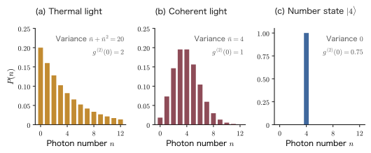

Chapter 25Physics of Semiconductor Light Emission — Recombination, Stimulated Emission, and Semiconductor Lasers
The LED in a traffic light, the screen of a smartphone, the pickup head of a Blu-ray player, and the transmitters of the optical fiber communication that connects the whole world: all of these use the phenomenon that light is emitted when an electron and a hole meet and disappear inside a semiconductor. The process in which light is absorbed by a semiconductor and an electron–hole pair is created is treated in Chapter 33. This chapter deals with the reverse, the process in which an electron–hole pair disappears. The story, however, is not so simple. When laser light is shone on a GaAs crystal, it glows faintly in the infrared, but a Si crystal hardly glows at all. In both, electrons and holes certainly disappear, yet in Si the energy that is released becomes not light but heat (lattice vibrations). There is a way of disappearing that emits light, and a way that does not—we begin this chapter from this distinction.
In the first half (Sections 25.1–25.3), we first build up the kinetics of recombination. We write the rate of change of the electron density with time as “generation − recombination,” and derive, each as an equation, the radiative recombination $Bnp$ that emits light, Shockley–Read–Hall recombination via deep levels, and Auger recombination, which involves three carriers. Next we examine the shapes of emission spectra. The lines of band-to-band emission, exciton emission, donor–acceptor pair emission, and so on are “fingerprints” that tell us what is happening inside the crystal. Then we derive, by an argument based on thermal equilibrium, the relations among the three processes of absorption, stimulated emission, and spontaneous emission that Einstein showed in 1917. Applying this to semiconductors gives the condition for light to be amplified, $E_{Fn}-E_{Fp}\gt\hbar\omega\gt E_g$ (the Bernard–Duraffourg condition; $\hbar\omega$ is the photon energy, $E_g$ is the band gap, and $E_{Fn}$ and $E_{Fp}$ are the quasi-Fermi levels of electrons and holes, respectively, explained in Section 25.3.4).
The second half (Sections 25.4–25.6) is about applications. The combination of optical amplification and feedback by mirrors is the semiconductor laser, and we calculate everything from the equations of this chapter: the threshold current, the spacing of the lasing wavelengths, the relation between optical output power and current, and the relaxation oscillation that sets the limit of high-speed modulation. Furthermore, to answer the questions of how the light of a laser differs from that of a light bulb and why spontaneous emission occurs, we quantize light. We arrive at the surprising conclusion that spontaneous emission is stimulated emission caused by the fluctuations of the electric field of the “empty vacuum.” Finally, we calculate the loss of optical fibers, the material design of light-emitting devices and photodetectors, the bandwidth and noise of photodiodes, and the optical budget from transmitter to receiver (the link budget), and see what part of physics supports optical communication systems.
This chapter rests on two foundations: Chapter 24 (p-n junctions and heterojunctions) and Chapter 33 (optical absorption). Without the quasi-Fermi levels of Chapter 24 we cannot discuss population inversion, and without the absorption coefficient $\alpha$ of Chapter 33 we can calculate neither the intensity of light emission nor the gain. Conversely, once you have finished this chapter, you should see that LEDs, lasers, solar cells, and photodetectors are different faces of the same set of equations—the detailed balance between absorption and emission. In the next Chapter 26, we treat the phenomenon (nonlinear optics) in which the intense light produced by the laser of this chapter makes the response of matter itself no longer proportional to the light intensity.
- The rate equation $\dd n/\dd t=G-R$ and the definition of the lifetime, radiative recombination $R=Bnp$, and the radiative lifetime $\tau_r=1/(Bp_0)$
- How to calculate the radiative recombination coefficient $B$ from the absorption spectrum by the van Roosbroeck–Shockley relation
- The complete derivation of Shockley–Read–Hall statistics (four processes), and the reason why deeper levels speed up recombination
- Auger recombination, surface recombination, the internal quantum efficiency $\eta_i$ and the ABC model, and the efficiency droop of LEDs
- Band-to-band emission (full width at half maximum $\approx1.8k_BT$), excitons and bound excitons (the Haynes rule), donor–acceptor pairs, deep levels, phonon replicas, the Stokes shift, and thermal quenching
- Deriving the relations among the Einstein $A,B$ coefficients from thermal equilibrium, and deriving the semiconductor version, the Bernard–Duraffourg condition, and the gain spectrum $g=\alpha_0(f_c-f_v)$
- The double heterostructure, the optical confinement factor $\Gamma$, the Fabry–Pérot cavity, the threshold condition, the rate equations, and the relaxation oscillation frequency
- Quantum-well lasers, DFB, DBR, and VCSEL, quantum cascade lasers, the GaN blue laser, and the linewidth
- Quantization of the electromagnetic field, coherent states, spontaneous emission caused by vacuum fluctuations $A=\omega_0^3\abs{\bm d}^2n_r/(3\pi\epsilon_0\hbar c^3)$, the Purcell effect, photon statistics, and shot noise
- The loss of optical fibers, InP lattice-matched materials and Vegard's law, the bandwidth and noise of PIN photodiodes and APDs, and the calculation of the link budget
25.1 Radiative and Nonradiative Recombination
Let us begin with an experiment. Place a GaAs wafer and a Si wafer side by side at room temperature, illuminate both with the same green laser light (photon energy $2.3\,\mathrm{eV}$), and examine the infrared light that comes out with a spectrometer. From GaAs we see a bright emission near a wavelength of $870\,\mathrm{nm}$ (photon energy $1.43\,\mathrm{eV}$, which is just the band gap of GaAs). This is called photoluminescence (PL). Si also gives off a faint light near $1.1\,\mu\mathrm{m}$, but its intensity is at most a few-thousandth of that of GaAs. In both crystals the laser light is absorbed and many electron–hole pairs are created. And when the light is switched off, the electrons and holes disappear quickly in both. They disappear in different ways.
The process in which an electron falls from the conduction band to the valence band and annihilates with a hole is called recombination. An energy of about $E_g$ is released at that moment. When it leaves as a photon, the process is called radiative recombination; when it leaves as a phonon (a lattice vibration, that is, heat), it is called nonradiative recombination. Building an LED or a laser amounts to nothing other than suppressing nonradiative recombination as much as possible and leaving only radiative recombination. In this section we derive the equations that determine the rate of recombination for each of three mechanisms (radiative, deep-level, and Auger).
Notation: Symbols used in this chapter
Many quantities appear in this chapter, so the same letter is sometimes used with different meanings. Here we collect the ones that are easily confused (please come back to this list if you get lost as you read on).
- The refractive index is written $n_r$. It is the same thing as the real part $n$ of the complex refractive index $\tilde n=n+i\kappa$ of Chapter 33, but in this chapter, to distinguish it from the electron density $n$, we write $\tilde n=n_r+i\kappa$ ($\kappa$ is the extinction coefficient and is used only in this sense in this chapter). The refractive indices of the core and the outer region (cladding) of a waveguide are $n_{r1},n_{r2}$, the group refractive index is $n_g$, and the effective refractive index of a guided mode is $n_{\rm eff}$. The $n_1,p_1$ of SRH statistics (25.1.5) are not refractive indices but carrier densities. The convention for time dependence is the same as in Chapter 33, $\ee^{-i\omega t}$.
- Energy is written $E$, and the magnitude and components of the electric field are written $\mathcal{E}$ (script E), so that the two can be told apart (the electric-field vector is $\EE$). The $\epsilon_\kk$ of Chapter 17 is written $E(\kk)$ in this part. $E_i$ is the intrinsic Fermi level (25.1.5), and the ionization energy of an impurity is written $E_{\rm ion}$ ($E_D$ for a donor, $E_A$ for an acceptor).
- $\alpha$ is the absorption coefficient (as in Chapter 33, in units of $\mathrm{cm^{-1}}$). $\alpha_0$ is the absorption coefficient when “the valence band is full and the conduction band is empty,” and $g$ is the gain coefficient (negative absorption). The internal loss $\alpha_i$ of a laser, the mirror loss $\alpha_m$, and the linewidth enhancement factor $\alpha_H$ also use $\alpha$, but each is distinguished by its subscript (they are also distinct from the impact-ionization coefficients $\alpha_n,\alpha_p$ of Chapter 23). Only the $\alpha$ without a subscript in 25.5.3 (and in the last derivation of 25.2.7, which uses it) is a complex number that labels a coherent state.
- $B$ is the radiative recombination coefficient ($\mathrm{cm^3/s}$), $B_{12},B_{21}$ are the Einstein $B$ coefficients, and $B_y$ in 25.5.1 is the magnetic flux density. The frequency bandwidth is written $\Delta f$, not $B$. $A$ is the coefficient of SRH recombination (the ABC model) or the Einstein $A$ coefficient (in 25.4.9 and 25.6.5 it is an area). $C$ is the Auger coefficient (in 25.6.5 it is the capacitance of the depletion layer); the constant $C_q$ of thermal quenching and the coefficient $C_R$ of Rayleigh scattering are distinguished by their subscripts.
- $\tau$ is a lifetime: the radiative lifetime $\tau_r$, the nonradiative lifetime $\tau_{nr}$, the SRH electron and hole capture lifetimes $\tau_{n0},\tau_{p0}$, and the photon lifetime $\tau_{ph}$ (so as not to confuse it with the $\tau_p$ of holes).
- $\eta$ denotes an efficiency: the internal quantum efficiency $\eta_i$ (the fraction of recombination events that emit light; 25.1.8), the injection efficiency $\eta_{inj}$ (the fraction of the current that reaches the active layer and recombines there; 25.4.5), the external differential quantum efficiency $\eta_d$ (25.4.6), and the quantum efficiency $\eta$ of a photodetector (25.6.5). Note, however, that $\eta_c,\eta_v$ in Example 25.10 and in 25.4.9 are not efficiencies: they are the values of the quasi-Fermi levels measured from the band edge (in 25.4.9, from the bottom of the subband) in units of $k_BT$.
- $S$ is used in three ways: the surface recombination velocity in 25.1.7 (written $S_r$ in Chapter 24, Section 24.1.7), the Huang–Rhys factor (dimensionless) in 25.2.6–25.2.7, and the photon density in Section 25.4. $\Gamma$ is the optical confinement factor (distinct from the $\Gamma$ point of the Brillouin zone). $R$ is the recombination rate or the reflectance of a mirror (distinguished by context).
- $V$ is used for voltage, for volume (25.3.6, 25.4.6, 25.5), and, as $\mathcal{V}$, for the normalized frequency of a waveguide (25.4.3); these are distinguished. $\Omega$ is the angular frequency of an optical phonon ($\hbar\Omega$ is its energy), except that $\dd\Omega$ in 25.5.4 is a solid angle. $Q$ is the configuration coordinate in 25.2.7 and the Q value of a cavity in 25.5.5.
- Besides the gain coefficient, $g$ is used for the degeneracies $g_1,g_2$ in 25.3, the ground state $\ket g$ in 25.5 (the excited state is $\ket e$), the coupling strength $g_0$, and the second-order correlation function $g^{(2)}(0)$. In Section 25.5, $n$ is the photon number, and $q,p$ are the coordinate and momentum of the oscillator of the electromagnetic field (distinct from the hole density $p$).
- In addition, we use the same letters for $K$ (the proportionality constant of the absorption in Example 25.2 / the spring constant in 25.2.7), $W$ (the thickness of a slab or an i layer / the transition rate in 25.2), $a$ (the lattice constant or the radius of localization / the differential gain in 25.4; distinct from the operator $\hat a$), $d$ (the thickness of the active layer / the dipole moment $\bm d$), $D$ (the diffusion coefficient / the chromatic dispersion in 25.6.2), $I$ (the light intensity / the current), and $M$ (the multiplication factor of an APD / the number of modes), since they can be distinguished by context.
25.1.1 The three recombination pathways — how the energy is discarded
When an electron and a hole recombine, an energy of about $E_g\approx1\,\mathrm{eV}$ has to be discarded somewhere. There are three candidates for where it goes.
(a) Pass it to a photon. A single photon of $1\,\mathrm{eV}$ can carry away all of the energy. However, as we saw in Chapter 17, Section 17.1, a photon can carry almost no momentum, so the electron and the hole must be at the same $\kk$. In direct-gap GaAs this is satisfied naturally, but in indirect-gap Si the bottom of the conduction band and the top of the valence band lie at different $\kk$, so the help of a phonon is also required, and the probability is smaller by orders of magnitude.
(b) Pass it to phonons. The energy of a phonon is at most $\hbar\Omega\approx30$–$60\,\mathrm{meV}$, so to discard $1\,\mathrm{eV}$ one would have to emit 20 to 30 phonons at once. This almost never happens. The situation changes, however, if there is an impurity or defect level (a deep level) near the middle of the gap. The electron first falls into this level (discarding about half of the energy), and then a hole arrives there (discarding the rest). The amount to be discarded is halved each time, and since the lattice around the captured electron is strongly distorted, it becomes easy to emit many phonons. A deep level is a stepping stone for nonradiative recombination.
(c) Pass it to another carrier. A third electron (or hole) nearby takes up the energy and jumps to a high position in the conduction band, and then returns to the bottom while emitting phonons. Since three carriers must come together, this process matters only when the carrier density is high.
25.1.2 Rate equation — the balance of generation and recombination
The tool for treating the rate of recombination quantitatively is the equation for the “balance of head counts.”
Definition: Generation rate $G$, recombination rate $R$, net recombination rate $U$, lifetime $\tau$
The number of electron–hole pairs created per unit volume per unit time is called the generation rate $G$, and the number that disappear is called the recombination rate $R$. Both have the unit $\mathrm{cm^{-3}\,s^{-1}}$. If the system is spatially uniform, the change in the electron density $n$ is
(if carriers enter and leave by diffusion, this is replaced by the continuity equation of Chapter 24, Section 24.1). We split $G$ into the thermal generation $G_{th}$ and the external injection $G_{ext}$ by light or current: $G=G_{th}+G_{ext}$. Using the net recombination rate $U\equiv R-G_{th}$, we have $\dd n/\dd t = G_{ext}-U$. Writing the excess carrier density relative to thermal equilibrium as $\Delta n=n-n_0$, we define
$$ \tau \equiv \frac{\Delta n}{U} $$to be the carrier lifetime.
In thermal equilibrium $n$ is constant, so $G_{th}=R$, that is, $U=0$. This is not merely the statement that “the inflow and outflow balance”; it is a special case of a stronger statement that we will use later—for each individual process, that process and its inverse balance each other (detailed balance).
Derivation: The meaning of the lifetime $\tau$ — decay after the light is turned off and the steady-state value under continuous illumination
(1) Decay. Suppose that $\tau$ is a constant independent of $\Delta n$. When the light is turned off at time $t=0$, $G_{ext}=0$; noting that $n_0$ is constant, we have
$$ \frac{\dd(\Delta n)}{\dd t} = \frac{\dd n}{\dd t} = -U = -\frac{\Delta n}{\tau} $$Dividing both sides by $\Delta n$ and integrating with respect to $t$ gives $\ln\Delta n = -t/\tau+\text{const}$, that is,
$$ \Delta n(t) = \Delta n(0)\,\ee^{-t/\tau} $$$\tau$ is the time it takes for the excess carriers to decrease to $1/\ee$ of their initial value. If we measure the decay of the emission by time-resolved photoluminescence (Section 25.2), we can read off this $\tau$ directly.
(2) Steady state. Under continuous illumination of constant intensity, $\dd n/\dd t=0$, so $G_{ext}=U=\Delta n/\tau$, and therefore
$$ \Delta n = G_{ext}\,\tau $$∎ The longer the lifetime, the more excess carriers accumulate under the same light. This is why the lifetime matters in solar cells and photodetectors (Chapter 33, Section 33.9).
25.1.3 Radiative recombination $R=Bnp$
For radiative recombination to occur, an electron in the conduction band and a hole in the valence band must meet at the same place and at the same $\kk$. The probability of meeting is proportional both to the number of electrons and to the number of holes, so the recombination rate is proportional to the product $np$. This is the same idea as the rate of a chemical reaction being proportional to the product of the concentrations of the reactants.
Definition: Radiative recombination coefficient $B$
$$ R_{rad} = B\,np $$The proportionality coefficient $B$ is called the radiative recombination coefficient. Its unit is $\mathrm{cm^3/s}$. In a direct-gap semiconductor such as GaAs, $B\sim10^{-10}\,\mathrm{cm^3/s}$ (depending on the literature, the value for GaAs spans a range of roughly $(1$–$4)\times10^{-10}\,\mathrm{cm^3/s}$; see the Supplement after Example 25.2), while in the indirect-gap semiconductor Si, $B\approx5\times10^{-15}\,\mathrm{cm^3/s}$, so the two differ by four to five orders of magnitude. This difference is the direct cause of the fact that “GaAs shines and Si does not” (in 25.1.4 we derive this value from the absorption spectrum).
Derivation: Net radiative recombination rate and radiative lifetime
Step 1: Thermal equilibrium. In thermal equilibrium, $R_{rad}=Bn_0p_0$ balances the thermal generation $G_{th}$. Using the law of mass action $n_0p_0=n_i^2$ (Chapter 17, Section 17.5), we obtain
$$ G_{th} = Bn_0p_0 = Bn_i^2 $$$G_{th}$ is determined by the temperature alone and does not change when carriers are injected (the true nature of thermal generation is “the absorption of blackbody radiation inside the crystal,” which is determined only by the temperature of the crystal; we examine this in detail in 25.1.4).
Step 2: Net recombination rate. When excess carriers are present (by charge neutrality, $\Delta n=\Delta p$),
$$ U_{rad} = Bnp - Bn_i^2 = B\left(np-n_i^2\right) $$Substituting $n=n_0+\Delta n$ and $p=p_0+\Delta n$ and expanding, we get
$$ np - n_i^2 = (n_0+\Delta n)(p_0+\Delta n) - n_0p_0 = n_0\Delta n + p_0\Delta n + (\Delta n)^2 = \Delta n\,(n_0+p_0+\Delta n) $$Therefore
$$ U_{rad} = B\,\Delta n\,(n_0+p_0+\Delta n) $$Step 3: Lifetime. Inserting this into the definition $\tau=\Delta n/U$, we obtain
Step 4: Two limits.
- For low injection ($\Delta n\ll$ the majority-carrier density) in a p-type material ($p_0\gg n_0$), $\tau_r\simeq1/(Bp_0)$. The radiative lifetime of the minority carriers (electrons) is inversely proportional to the majority-carrier density: the more holes there are available as partners for a single electron, the sooner it disappears. For an n-type material, $\tau_r\simeq1/(Bn_0)$.
- For high injection ($\Delta n\gg n_0,p_0$), $\tau_r\simeq1/(B\Delta n)$. Because the lifetime depends on $\Delta n$, the decay is not exponential. Separating the variables in $\dd(\Delta n)/\dd t=-B(\Delta n)^2$ and integrating gives $1/\Delta n(t)-1/\Delta n(0)=Bt$, that is, $\Delta n(t)=\Delta n(0)/[1+B\Delta n(0)t]$, a hyperbolic decay.
∎
Example 25.1: Radiative lifetimes of GaAs and Si
(1) For p-type GaAs ($B=1\times10^{-10}\,\mathrm{cm^3/s}$, a rounded value close to the lower end of the range in the literature), find the radiative lifetime $\tau_r$ of the minority carriers for $p_0=1\times10^{18}\,\mathrm{cm^{-3}}$ and $1\times10^{17}\,\mathrm{cm^{-3}}$. (2) What is it for p-type Si ($B=5\times10^{-15}\,\mathrm{cm^3/s}$, $p_0=1\times10^{17}\,\mathrm{cm^{-3}}$)? (3) When the nonradiative lifetime is $\tau_{nr}=10\,\mu\mathrm{s}$ (typical of a good Si crystal), estimate the fraction of recombination that produces light in Si, $\tau_{nr}/(\tau_r+\tau_{nr})$ (the internal quantum efficiency of 25.1.8). (4) What must be improved to make a brightly emitting LED from Si? Answer with reasons, based on the expression in (3).
Solution. (1) Since the injection is low, Eq. \eqref{eq:25-taur} gives $\tau_r=1/(Bp_0)$.
$$ p_0=10^{18}:\ \tau_r=\frac{1}{(1\times10^{-10}\,\mathrm{cm^3/s})(1\times10^{18}\,\mathrm{cm^{-3}})}=\frac{1}{1\times10^{8}\,\mathrm{s^{-1}}}=1\times10^{-8}\,\mathrm{s}=10\,\mathrm{ns} $$ $$ p_0=10^{17}:\ \tau_r=\frac{1}{(1\times10^{-10})(1\times10^{17})}\,\mathrm{s}=1\times10^{-7}\,\mathrm{s}=100\,\mathrm{ns} $$(2)
$$ \tau_r=1/[(5\times10^{-15})(1\times10^{17})]\,\mathrm{s}=1/(500\,\mathrm{s^{-1}})=2\times10^{-3}\,\mathrm{s}=2\,\mathrm{ms} $$(3)
$$ \tau_{nr}/(\tau_r+\tau_{nr})=10^{-5}/(2\times10^{-3}+10^{-5})=10^{-5}/(2.01\times10^{-3})=5\times10^{-3} $$(4) $\tau_r=2\,\mathrm{ms}$ is a value fixed by the material Si and cannot be changed. Therefore, to increase $\eta_i=\tau_{nr}/(\tau_r+\tau_{nr})$, the only way is to lengthen the nonradiative lifetime $\tau_{nr}$ in the numerator to the same millisecond range as $\tau_r$. That is, we must thoroughly reduce the deep levels in the crystal (metal impurities and defects; 25.1.5) and the recombination centers at the surface (25.1.7).
∎ In GaAs an electron emits light and disappears in 10–100 ns, but in Si it takes as long as 2 ms to emit light, and before that 99.5% of the electrons turn into heat at deep levels and the like. The reason why Si is not used for light-emitting diodes and lasers can now be seen in numbers. The reason why, in the experiment at the beginning of this section, the emission from Si was weaker than that from GaAs by a factor of several thousand or more is that, in an ordinary wafer, surface recombination (25.1.7) and other processes also contribute and the nonradiative lifetime becomes $1\,\mu\mathrm{s}$ or less, so that $\eta_i\lesssim5\times10^{-4}$. Conversely, as stated in (4), if the nonradiative lifetime is lengthened to the millisecond range, Si also emits light. In fact, an LED with an efficiency of about 1% has been made from Si whose surface was thoroughly passivated (Green et al., 2001). The reason Si does not shine is not that it is “forbidden” but that it is “too slow.”
25.1.4 The van Roosbroeck–Shockley relation — obtaining $B$ from the absorption spectrum
How is the value of $B$ determined? In 1954, van Roosbroeck and Shockley showed, using detailed balance in thermal equilibrium, how to calculate $B$ from the absorption spectrum $\alpha(\hbar\omega)$ alone. The idea is as follows. The inside of a crystal at temperature $T$ is filled with blackbody radiation at temperature $T$ (a gas of photons obeying the Planck distribution). These photons are constantly absorbed and create electron–hole pairs (this is the true nature of the thermal generation $G_{th}$). In thermal equilibrium, at each photon energy, the number of photons absorbed equals the number of photons produced by radiative recombination. Therefore, once the absorption coefficient is known, the intensity of the emission is known.
Derivation: The van Roosbroeck–Shockley relation
Step 1: Number of light modes in a medium. In a medium of refractive index $n_r$, the wavenumber of light of angular frequency $\omega$ is $k=n_r\omega/c$. Under periodic boundary conditions, the number of modes contained in a volume $\dd^3k$ of $\kk$ space in a box of volume $V$ is $V\dd^3k/(2\pi)^3$ multiplied by the number of polarizations, 2 (light is a transverse wave, so the direction of oscillation of the electric field (the polarization) can take two possible directions perpendicular to the propagation direction; this is the same as the way of counting phonons in Chapter 14, Section 14.2). Taking a spherical shell $\dd^3k=4\pi k^2\dd k$ and dividing by the volume, the number of modes per unit volume is
$$ \dd N_{\text{mode}} = 2\cdot\frac{4\pi k^2\dd k}{(2\pi)^3} = \frac{k^2\dd k}{\pi^2} $$Rewriting in terms of the photon energy $E=\hbar\omega=\hbar ck/n_r$ (taking $n_r$ to be constant), $k=n_rE/(\hbar c)$ and $\dd k=n_r\dd E/(\hbar c)$, so
$$ \dd N_{\text{mode}} = \frac{1}{\pi^2}\left(\frac{n_rE}{\hbar c}\right)^2\frac{n_r\dd E}{\hbar c} = \frac{n_r^3E^2}{\pi^2\hbar^3c^3}\,\dd E = \frac{8\pi n_r^3E^2}{h^3c^3}\,\dd E $$In the last step we used $\pi^2\hbar^3=\pi^2h^3/(8\pi^3)=h^3/(8\pi)$, which follows from $\hbar=h/2\pi$.
Step 2: Photon density in thermal equilibrium. The average number of photons in each mode is given by the Planck distribution $1/(\ee^{E/k_BT}-1)$ (Chapter 14, Section 14.1; the photon is a Bose particle with chemical potential 0). Therefore the number of photons per unit volume per unit energy is
$$ \rho_{ph}(E) = \frac{8\pi n_r^3E^2}{h^3c^3}\,\frac{1}{\ee^{E/k_BT}-1} $$Step 3: Rate of absorption. A photon travels with speed $c/n_r$, and the probability of being absorbed while traveling a unit length is $\alpha$. Therefore the probability that a single photon is absorbed per unit time is $\alpha c/n_r$. The number of absorption events per unit volume, per unit time, and per unit energy is
$$ \rho_{ph}(E)\cdot\alpha(E)\cdot\frac{c}{n_r} = \alpha(E)\,\frac{8\pi n_r^2E^2}{h^3c^2}\,\frac{1}{\ee^{E/k_BT}-1} $$Step 4: Detailed balance. In thermal equilibrium this equals the number $R_0(E)\dd E$ of radiative recombination events that emit photons of the same energy. Integrating over all energies, we obtain the radiative recombination rate in thermal equilibrium
This is the van Roosbroeck–Shockley relation.
Step 5: To $B$. In thermal equilibrium $R_0=Bn_0p_0=Bn_i^2$, so
$$ B = \frac{R_0}{n_i^2} $$When carriers are injected out of equilibrium, the same $B$ gives $R=Bnp=R_0\,np/n_i^2$.
∎ The stronger the absorption of a material, the stronger its emission. This is the semiconductor version of Kirchhoff's law of radiation, “a good absorber is a good emitter.”
Caution: $\alpha$ is the absorption coefficient of the crystal in thermal equilibrium, and the dispersion of $n_r$ is neglected
The $\alpha$ in Eq. \eqref{eq:25-vrs} is the absorption coefficient measured for a crystal in thermal equilibrium. Strictly speaking, the absorption measured in an experiment is the net value of “absorption minus stimulated emission,” and in thermal equilibrium their ratio is $1-\ee^{-\hbar\omega/k_BT}$ (this can be derived from the calculations of Step 2 in 25.3.4 and of Steps 2–4 in 25.3.6). At $\hbar\omega\approx1\,\mathrm{eV}$, $\ee^{-\hbar\omega/k_BT}\approx10^{-17}$, so this difference can be completely neglected. Also, if the refractive index depends on wavelength (dispersion), the $n_r^3$ of Step 1 is replaced by $n_r^2n_g$ ($n_g$ is the group refractive index). However, the speed of the photon in Step 3 also becomes the group velocity $c/n_g$, so $n_g$ cancels, and Eq. \eqref{eq:25-vrs} remains unchanged with $n_r^2$.
Example 25.2: Calculating $B$ of GaAs from the absorption spectrum
Approximate the absorption edge of GaAs ($E_g=1.43\,\mathrm{eV}$, $n_r=3.6$, $N_c=4.35\times10^{17}\,\mathrm{cm^{-3}}$, $N_v=8.09\times10^{18}\,\mathrm{cm^{-3}}$, 300 K) by the direct-transition form $\alpha(\hbar\omega)=K\sqrt{\hbar\omega-E_g}$, and choose $K$ so that $\alpha(E_g+0.1\,\mathrm{eV})=1.0\times10^4\,\mathrm{cm^{-1}}$. Calculate $B$ from the van Roosbroeck–Shockley relation. ($N_c$ and $N_v$ are the values calculated from the equations of Chapter 17 with $m_e^*=0.067m$ and $m_{dh}=0.47m$.)
Solution. (i) Determine $K$. From $K\sqrt{0.1\,\mathrm{eV}}=1.0\times10^4\,\mathrm{cm^{-1}}$ we get $K=1.0\times10^4/0.3162=3.16\times10^4\,\mathrm{cm^{-1}\,eV^{-1/2}}$.
(ii) Carry out the integral approximately. Let $\hbar\omega=E_g+x$. Since $x$ is at most a few $k_BT\approx0.1\,\mathrm{eV}$, we may set $(\hbar\omega)^2\simeq E_g^2$, and since $\ee^{\hbar\omega/k_BT}\gg1$, the Bose factor becomes $\ee^{-\hbar\omega/k_BT}=\ee^{-E_g/k_BT}\ee^{-x/k_BT}$. Then
$$ R_0 \simeq \frac{8\pi n_r^2E_g^2}{h^3c^2}\,K\,\ee^{-E_g/k_BT}\int_0^\infty\sqrt{x}\,\ee^{-x/k_BT}\,\dd x $$With the substitution $x=k_BT\,u$, the integral becomes
$$ \int_0^\infty\sqrt{x}\,\ee^{-x/k_BT}\dd x=(k_BT)^{3/2}\int_0^\infty\sqrt u\,\ee^{-u}\dd u=(k_BT)^{3/2}\dfrac{\sqrt\pi}{2} $$(This is the same integral as when we derived $N_c$ in Chapter 17, Section 17.5. See Appendix A, A.4).
(iii) In $B=R_0/n_i^2$, the factor $\ee^{-E_g/k_BT}$ cancels. Since $n_i^2=N_cN_v\ee^{-E_g/k_BT}$,
$$ B = \frac{8\pi n_r^2E_g^2}{h^3c^2}\cdot K\cdot\frac{\sqrt\pi}{2}(k_BT)^{3/2}\cdot\frac{1}{N_cN_v} $$The clean cancellation of the exponential function is the key point of this calculation.
(iv) Numbers. We use $h=4.136\times10^{-15}\,\mathrm{eV\,s}$ and $c=3.00\times10^{10}\,\mathrm{cm/s}$ (all units are made consistent in eV, s, and cm).
$$ \begin{aligned} \frac{8\pi n_r^2E_g^2}{h^3c^2} &= \frac{8\pi\times3.6^2\times(1.43\,\mathrm{eV})^2}{(4.136\times10^{-15}\,\mathrm{eV\,s})^3(3.00\times10^{10}\,\mathrm{cm/s})^2}\\ &= \frac{666\,\mathrm{eV^2}}{6.36\times10^{-23}\,\mathrm{eV^3\,s\,cm^2}} = 1.05\times10^{25}\,\mathrm{eV^{-1}\,s^{-1}\,cm^{-2}} \end{aligned} $$ $$ \frac{\sqrt\pi}{2}(k_BT)^{3/2} = 0.886\times(0.02585\,\mathrm{eV})^{3/2} = 0.886\times4.16\times10^{-3} = 3.68\times10^{-3}\,\mathrm{eV^{3/2}} $$ $$ N_cN_v = (4.35\times10^{17})(8.09\times10^{18}) = 3.52\times10^{36}\,\mathrm{cm^{-6}} $$Therefore
$$ B = \frac{(1.05\times10^{25})(3.16\times10^{4})(3.68\times10^{-3})}{3.52\times10^{36}}\,\mathrm{cm^3/s} = \frac{1.22\times10^{27}}{3.52\times10^{36}}\,\mathrm{cm^3/s} = 3.5\times10^{-10}\,\mathrm{cm^3/s} $$(Units: $\mathrm{eV^{-1}s^{-1}cm^{-2}}\times\mathrm{cm^{-1}eV^{-1/2}}\times\mathrm{eV^{3/2}}/\mathrm{cm^{-6}}=\mathrm{cm^3/s}$.) Even if the integral is evaluated numerically without the approximation (ii), the result is $3.7\times10^{-10}$, hardly different.
∎ From only the rough magnitude of the absorption coefficient, we obtained the same order of magnitude, $10^{-10}\,\mathrm{cm^3/s}$, as the measured value. In indirect-gap Si, $\alpha$ near the absorption edge is smaller by one to three orders of magnitude, $10\sim10^3\,\mathrm{cm^{-1}}$, and it also rises more gradually (Chapter 17, Section 17.1.4), so the same calculation gives a $B$ that is smaller by four to five orders of magnitude. “What absorbs well also shines well” has been confirmed numerically.
Supplement: The value of $B$ for GaAs has a range
In Example 25.1 we used $B=1\times10^{-10}\,\mathrm{cm^3/s}$, but the calculation of Example 25.2 gave $3.5\times10^{-10}\,\mathrm{cm^3/s}$. Neither is wrong. Depending on the literature, the $B$ of GaAs spans a range of roughly $(1$–$4)\times10^{-10}\,\mathrm{cm^3/s}$ (some theoretical calculations give even larger values). The range has two main causes.
- Reabsorption of photons. Most photons born inside a crystal with a large refractive index cannot escape because of total internal reflection (see the Supplement in 25.1.8); they are absorbed again inside the crystal and return to electron–hole pairs (photon recycling). The lifetime measured from the decay of the emission therefore appears longer by the amount of this reabsorption, and the $B$ obtained from it comes out smaller. The value of Example 25.2 is the value “per recombination event,” which does not include reabsorption.
- Treatment of the absorption spectrum. In Example 25.2 we approximated the absorption edge by the form $\sqrt{\hbar\omega-E_g}$, and ignored the excitonic effect that strengthens the absorption near the edge (Chapter 33, Section 33.7) as well as the band tails. The value also changes with the doping level and the temperature.
The $1\times10^{-10}\,\mathrm{cm^3/s}$ of Example 25.1 is a rounded value near the lower limit of the range, chosen to see the order of magnitude. If we use $B=3.5\times10^{-10}\,\mathrm{cm^3/s}$, the radiative lifetime for $p_0=10^{18}\,\mathrm{cm^{-3}}$ becomes $\tau_r=1/(Bp_0)=2.9\,\mathrm{ns}$. In any case, the conclusion that “the $B$ of GaAs is of the order of $10^{-10}\,\mathrm{cm^3/s}$, larger than that of Si by four to five orders of magnitude” does not change.
25.1.5 Shockley–Read–Hall statistics — recombination through deep levels
The minority-carrier lifetime of Si varies by as much as seven orders of magnitude, from $1\,\mathrm{ns}$ to $10\,\mathrm{ms}$, depending on the crystal, even for the same Si. What determines it is not radiative recombination but trace impurities such as iron and gold, and defects, that have crept into the crystal. For example, iron at $10^{12}\,\mathrm{cm^{-3}}$ (one per $5\times10^{10}$ Si atoms) shortens the lifetime by orders of magnitude. Conversely, in rectifying diodes that switch at high speed, gold or platinum has deliberately been diffused in to shorten the lifetime, so that the accumulated minority carriers disappear quickly. The theory of Shockley and Read, and of Hall, in 1952 (SRH statistics) quantified how these “stepping stones” act.
Definition: Quantities describing recombination centers (traps)
- $N_t$: the density of centers (recombination centers, also called traps) that have a level at energy $E_t$ in the gap. Each center can hold up to one electron.
- $f_t$: the probability that a center is occupied by an electron. The density of centers containing an electron is $N_tf_t$, and the density of empty centers is $N_t(1-f_t)$.
- $\sigma_n,\sigma_p$: the capture cross sections with which a center captures an electron or a hole. This is the “target area” of the center as seen by the carrier, typically $10^{-17}$–$10^{-13}\,\mathrm{cm^2}$.
- $v_{th}$: the thermal velocity of the carriers ($\sqrt{3k_BT/m^*}\sim10^7\,\mathrm{cm/s}$).
- $c_n=\sigma_nv_{th}$, $c_p=\sigma_pv_{th}$: the capture coefficients ($\mathrm{cm^3/s}$). The meaning is that a carrier flying at speed $v_{th}$ is captured if a center lies within the volume $\sigma v_{th}$ that it sweeps out per unit time.
- $e_n,e_p$: the emission rates ($\mathrm{s^{-1}}$) at which electrons and holes are thermally emitted from a center.
There are only four processes that can occur between a center and the bands, shown in Figure 25.2.
Derivation 1: The rates of the four processes, and fixing the emission rates from thermal equilibrium
Step 1: Write down the rates. Capture is “carrier density × density of available centers × capture coefficient,” and emission is “density of centers that can emit × emission rate” (Figure 25.2).
$$ r_a = c_n\,n\,N_t(1-f_t),\qquad r_b = e_n\,N_tf_t,\qquad r_c = c_p\,p\,N_tf_t,\qquad r_d = e_p\,N_t(1-f_t) $$Step 2: Detailed balance in thermal equilibrium. In thermal equilibrium, process (a) balances its inverse process (b): $r_a=r_b$. Then $n=n_0$, and the occupation probability of the center is the Fermi–Dirac distribution $f_{t0}=1/(1+\ee^{(E_t-E_F)/k_BT})$. Solving $r_a=r_b$ for $e_n$ gives
$$ e_n = c_n\,n_0\,\frac{1-f_{t0}}{f_{t0}} $$From the expression for $f_{t0}$,
$$ \dfrac{1-f_{t0}}{f_{t0}}=\dfrac{\ee^{(E_t-E_F)/k_BT}/(1+\ee^{(E_t-E_F)/k_BT})}{1/(1+\ee^{(E_t-E_F)/k_BT})}=\ee^{(E_t-E_F)/k_BT} $$Also, $n_0=n_i\ee^{(E_F-E_i)/k_BT}$ ($E_i$ is the intrinsic Fermi level; Chapter 17, Section 17.5). Multiplying them together, $E_F$ cancels and
$$ e_n = c_n\,n_i\,\ee^{(E_F-E_i)/k_BT}\,\ee^{(E_t-E_F)/k_BT} = c_n\,n_i\,\ee^{(E_t-E_i)/k_BT}\equiv c_n\,n_1 $$Similarly, from the balance $r_c=r_d$ of (c) and (d), inserting $e_p=c_pp_0f_{t0}/(1-f_{t0})=c_pp_0\ee^{-(E_t-E_F)/k_BT}$ and $p_0=n_i\ee^{(E_i-E_F)/k_BT}$, we obtain
$$ e_p = c_p\,n_i\,\ee^{(E_i-E_t)/k_BT}\equiv c_p\,p_1 $$The quantities introduced here,
have the meaning “the electron density and hole density when the Fermi level lies exactly at $E_t$.” The emission rates are material constants determined only by the capture coefficients and the depth of the trap, so these values may be used as they are even away from thermal equilibrium.
Derivation 2: Steady-state occupancy and the net recombination rate $U$
Step 3: The steady-state condition. In a steady state in which carriers are being injected, for example by light, the number of electrons at the center does not change. The flows of electrons into the center ((a) and (d)) balance the flows out of it ((b) and (c)), so $r_a+r_d=r_b+r_c$, that is,
$$ r_a - r_b = r_c - r_d $$The left-hand side is “the net number of electrons disappearing from the conduction band,” and the right-hand side is “the net number of holes disappearing from the valence band.” That these are equal expresses the fact that recombination occurs in pairs. This common value is the net recombination rate $U$.
Step 4: Solve for $f_t$. Substitute the results of Step 1 and Step 2 and divide both sides by $N_t$:
$$ c_nn(1-f_t) - c_nn_1f_t = c_pp\,f_t - c_pp_1(1-f_t) $$Collect the terms containing $f_t$ on the right-hand side and those not containing it on the left-hand side:
$$ c_nn + c_pp_1 = f_t\left(c_nn + c_nn_1 + c_pp + c_pp_1\right) $$ $$ f_t = \frac{c_nn + c_pp_1}{c_n(n+n_1) + c_p(p+p_1)} $$Step 5: Calculate $U$.
$$ U=r_a-r_b=N_tc_n\left[n(1-f_t)-n_1f_t\right]=N_tc_n\left[n-(n+n_1)f_t\right] $$Writing the denominator as $D\equiv c_n(n+n_1)+c_p(p+p_1)$ and putting everything over a common denominator, we obtain
$$ n-(n+n_1)f_t = \frac{n\,D-(n+n_1)(c_nn+c_pp_1)}{D} $$Expand the numerator:
$$ nD = c_nn(n+n_1) + c_pn(p+p_1) = c_nn(n+n_1) + c_pnp + c_pnp_1 $$ $$ (n+n_1)(c_nn+c_pp_1) = c_nn(n+n_1) + c_pnp_1 + c_pn_1p_1 $$On subtraction, $c_nn(n+n_1)$ and $c_pnp_1$ cancel, and only $c_pnp-c_pn_1p_1=c_p(np-n_i^2)$ remains (we used $n_1p_1=n_i^2$ from Eq. \eqref{eq:25-n1p1}). Therefore
$$ U = \frac{N_tc_nc_p\,(np-n_i^2)}{c_n(n+n_1)+c_p(p+p_1)} $$Step 6: Write it in terms of lifetimes. Divide the numerator and denominator by $N_tc_nc_p$ and define
$$ \tau_{n0}\equiv\frac{1}{c_nN_t}=\frac{1}{\sigma_nv_{th}N_t},\qquad \tau_{p0}\equiv\frac{1}{c_pN_t}=\frac{1}{\sigma_pv_{th}N_t} $$(note that $c_n/(N_tc_nc_p)=\tau_{p0}$ and $c_p/(N_tc_nc_p)=\tau_{n0}$). Then
∎ This is the SRH recombination rate. The numerator $np-n_i^2$ has the same form as for radiative recombination: $U=0$ in thermal equilibrium, $U\gt0$ (recombination) when carriers are in excess, and $U\lt0$ (generation, which occurs inside the depletion layer) when they are deficient.
Theorem 25.1: The SRH lifetime — capture of minority carriers is rate-limiting
For a p-type semiconductor ($p_0\gg n_0$) under low injection ($\Delta n\ll p_0$), with a center that is not too shallow ($n_1,p_1\ll p_0$),
$$ U_{SRH}\simeq\frac{\Delta n}{\tau_{n0}},\qquad \tau_{SRH}=\tau_{n0}=\frac{1}{\sigma_nv_{th}N_t} $$(Proof: As in Section 25.1.3, the numerator of Eq. \eqref{eq:25-srh} is $np-n_i^2=\Delta n(n_0+p_0+\Delta n)\simeq\Delta n\,p_0$. In the denominator, $\tau_{p0}(n+n_1)$ is negligible compared with $\tau_{n0}p_0$, and $\tau_{n0}(p+p_1)\simeq\tau_{n0}p_0$. Taking the ratio gives $\Delta n/\tau_{n0}$.)
The centers are almost all empty, and as soon as a minority-carrier electron is captured, the abundant surrounding holes arrive immediately. Hence the capture of minority carriers determines the speed, and the lifetime is inversely proportional to $N_t$.
Why do deeper levels cause more recombination?
For simplicity let $\tau_{n0}=\tau_{p0}=\tau_0$. Then the denominator of Eq. \eqref{eq:25-srh} is $\tau_0(n+p+n_1+p_1)$, and
$$ n_1+p_1 = n_i\left(\ee^{(E_t-E_i)/k_BT}+\ee^{-(E_t-E_i)/k_BT}\right) = 2n_i\cosh\frac{E_t-E_i}{k_BT} $$Since $\cosh$ takes its minimum value $1$ at argument $0$, when $E_t$ lies at the middle of the gap ($E_t=E_i$), the denominator is smallest and $U$ is largest.
Physically, the reason is as follows. If $E_t$ is a shallow level close to the conduction band, a captured electron quickly returns to the conduction band thermally (the emission rate $e_n=c_nn_1$ is large). Because the electron escapes before a hole arrives, such a center ends up as a “trap” that only holds the electron temporarily. For a deep level near the middle of the gap, the electron cannot escape thermally either upward or downward and has no choice but to wait until a hole comes. In this way a pair is reliably eliminated. This is why gold (which creates a level near the middle of the gap) and iron in Si are powerful lifetime killers.
Example 25.3: SRH lifetime and the depth of the level
A p-type Si sample ($p_0=1\times10^{16}\,\mathrm{cm^{-3}}$, $n_i=1.0\times10^{10}\,\mathrm{cm^{-3}}$, 300 K) contains recombination centers with $\sigma_n=\sigma_p=1\times10^{-15}\,\mathrm{cm^2}$ at a concentration of $N_t=1\times10^{12}\,\mathrm{cm^{-3}}$. Let $v_{th}=1\times10^7\,\mathrm{cm/s}$. (1) Find the minority-carrier lifetime when the centers lie at the middle of the gap. (2) What is it if $N_t=1\times10^{14}\,\mathrm{cm^{-3}}$? (3) When the centers lie at $E_t-E_i=0.30\,\mathrm{eV}$ and $0.45\,\mathrm{eV}$, how many times longer than in (1) is the low-injection lifetime?
Solution. (1) By Theorem 25.1,
$$ \begin{aligned} \tau_{n0} &= \frac{1}{\sigma_nv_{th}N_t} = \frac{1}{(1\times10^{-15}\,\mathrm{cm^2})(1\times10^{7}\,\mathrm{cm/s})(1\times10^{12}\,\mathrm{cm^{-3}})}\\ &= \frac{1}{1\times10^{4}\,\mathrm{s^{-1}}} = 1\times10^{-4}\,\mathrm{s}=100\,\mu\mathrm{s} \end{aligned} $$(2) Since $N_t$ is 100 times larger, the lifetime is $1/100$ of that, $1\,\mu\mathrm{s}$.
(3) Under low injection, the numerator of Eq. \eqref{eq:25-srh} is $\Delta n(n_0+p_0)$ and the denominator is $\tau_0(n_0+n_1+p_0+p_1)$ (neglecting $\Delta n$), so
$$ \tau = \frac{\Delta n}{U} = \tau_0\,\frac{n_0+n_1+p_0+p_1}{n_0+p_0} $$Taking $k_BT=0.02585\,\mathrm{eV}$, for $E_t-E_i=0.30\,\mathrm{eV}$ we have
$$ n_1 = n_i\,\ee^{0.30/0.02585} = (1.0\times10^{10})\,\ee^{11.61} = (1.0\times10^{10})(1.10\times10^{5}) = 1.10\times10^{15}\,\mathrm{cm^{-3}} $$Both $p_1=n_i^2/n_1=9\times10^4\,\mathrm{cm^{-3}}$ and $n_0=n_i^2/p_0=1\times10^4\,\mathrm{cm^{-3}}$ are negligible. Therefore $\tau/\tau_0=(1.10\times10^{15}+1\times10^{16})/(1\times10^{16})=1.11$.
For $E_t-E_i=0.45\,\mathrm{eV}$,
$$ n_1=(1.0\times10^{10})\,\ee^{17.41}=(1.0\times10^{10})(3.63\times10^{7})=3.63\times10^{17}\,\mathrm{cm^{-3}} $$which exceeds $p_0$. We get $\tau/\tau_0=(3.63\times10^{17}+1\times10^{16})/(1\times10^{16})=37$.
∎ Even when the level is displaced by $0.30\,\mathrm{eV}$ from the middle, the lifetime increases by only 10%, but when it is displaced to $0.45\,\mathrm{eV}$ ($0.1\,\mathrm{eV}$ below the conduction band) the lifetime becomes 37 times longer, and the effectiveness as a recombination center drops by more than an order of magnitude. Lifetime killers are deep levels. Incidentally, the $10^{12}\,\mathrm{cm^{-3}}$ in (1) is only one 50-billionth of the Si atom density of $5\times10^{22}\,\mathrm{cm^{-3}}$. It is because of numbers like this that a purity of “eleven nines (99.999999999%)” is demanded in the crystal growth of semiconductors.
Supplement: SRH generation and recombination in the depletion layer and the ideality factor 2
Inside the depletion layer of a p-n junction, under a forward voltage $V$, the relation $np=n_i^2\ee^{eV/k_BT}$ (the quasi-Fermi-level relation of Section 24.1 in Chapter 24) holds. Eq. \eqref{eq:25-srh} is largest where $n=p$, and there $n=p=n_i\ee^{eV/2k_BT}$, so with $\tau_{n0}=\tau_{p0}=\tau_0$ and $E_t=E_i$ we get $U_{\max}\simeq n_i\ee^{eV/2k_BT}/(2\tau_0)$. This current component, proportional to $\ee^{eV/2k_BT}$, is the origin of the diode ideality factor of 2 (the ideality factor is the coefficient multiplying the denominator of the exponent $eV/k_BT$ of the forward current, and was written $\eta$ in Chapter 24, Section 24.2). Under a reverse voltage, $np\lt n_i^2$ and $U\lt0$; that is, thermal generation in the depletion layer produces the reverse current (leakage current).
25.1.6 Auger recombination — a three-body nonradiative process
In Auger recombination (Figure 25.1(c)), a third carrier receives the energy of the electron–hole recombination as kinetic energy. If the third carrier is an electron, the process is “electron–electron–hole” (eeh); if it is a hole, the process is “electron–hole–hole” (ehh). The former requires two electrons and one hole to meet, so its frequency is proportional to $n^2p$; the latter is proportional to $np^2$.
Definition: Auger coefficients $C_n,C_p$
$$ U_{Aug} = \left(C_n\,n + C_p\,p\right)\left(np-n_i^2\right) $$$C_n$ and $C_p$ are called the Auger coefficients (in units of $\mathrm{cm^6/s}$). The expression is written in the form $np-n_i^2$ so that $U=0$ in thermal equilibrium (the reverse process is the impact ionization of Chapter 23, Section 23.3). Under high injection with $n=p$, $U_{Aug}\simeq(C_n+C_p)n^3\equiv Cn^3$. In Si, $C_n\approx2.8\times10^{-31}$ and $C_p\approx1\times10^{-31}\,\mathrm{cm^6/s}$ (Dziewior and Schmid, 1977).
For heavily doped n-type material ($n_0=N_D$), the Auger lifetime of minority carriers (holes) is $\tau_{Aug}=1/(C_nN_D^2)$, from $U_{Aug}\simeq C_nn_0^2\Delta p$. In Si with $N_D=10^{19}\,\mathrm{cm^{-3}}$, $\tau_{Aug}=1/(2.8\times10^{-31}\times10^{38})\,\mathrm{s}=3.6\times10^{-8}\,\mathrm{s}=36\,\mathrm{ns}$, and for $N_D=10^{20}\,\mathrm{cm^{-3}}$ it is $0.36\,\mathrm{ns}$. Because the lifetime shortens in inverse proportion to the square of the doping level, no matter how clean the crystal is made, the lifetime cannot be extended in the heavily doped layer (the emitter) of a solar cell.
Why is Auger recombination strong for narrow gaps and increases with temperature?
For the case in which the third carrier is an electron (eeh), we follow the argument in four steps.
- When an electron and a hole recombine, an energy of about $E_g$ is left over, and the third electron receives it as kinetic energy and is ejected. Because its kinetic energy is large, that electron has a large crystal momentum $\hbar k$.
- The crystal momentum must also be conserved. The large momentum of the ejected electron can only be contributed by the initial three particles (two electrons and one hole). Carriers at the bottom of a band have almost no momentum, so the three must originally be in states somewhat above the band bottom (states with kinetic energy).
- The minimum total kinetic energy $E_a$ required can be calculated from the conservation of energy and momentum. It suffices to follow in the reverse direction the calculation by which we obtained the impact-ionization threshold in Chapter 23, Section 23.3 ($E_{th}=\tfrac32E_g$ when the electron and hole masses are equal). At threshold the initial three particles move with the same velocity $v$. Let $m_e^*$ be the effective mass of the electron, $m_h^*$ the effective mass of the hole, and $m_{\rm tot}\equiv2m_e^*+m_h^*$ the sum of the three masses. The total kinetic energy is then $E_a=m_{\rm tot}v^2/2$, and the total momentum is $m_{\rm tot}v$. The ejected electron carries this entire momentum by itself, so its kinetic energy is $(m_{\rm tot}v)^2/(2m_e^*)$, and energy conservation reads $$ E_g+\frac{m_{\rm tot}v^2}{2}=\frac{m_{\rm tot}^2v^2}{2m_e^*}\quad\Longrightarrow\quad E_g=\frac{m_{\rm tot}v^2}{2}\left(\frac{m_{\rm tot}}{m_e^*}-1\right)=E_a\,\frac{m_e^*+m_h^*}{m_e^*} $$ Therefore $E_a=\dfrac{m_e^*}{m_e^*+m_h^*}\,E_g$ (which is $E_g/2$ if the masses are equal).
- The probability that the carriers are in states of such high energy carries the Boltzmann factor $\ee^{-E_a/k_BT}$ (Beattie and Landsberg, 1959). Hence the Auger coefficient satisfies $C\propto\ee^{-E_a/k_BT}$, and the smaller $E_g$ is, the exponentially larger it is, and the higher the temperature, the larger it is.
In numbers, the simple estimate $\ee^{-E_g/2k_BT}$ (300 K), which assumes equal masses, is $1\times10^{-12}$ for GaAs ($E_g=1.43\,\mathrm{eV}$) and $2\times10^{-7}$ for InGaAsP of wavelength $1.55\,\mu\mathrm{m}$ ($E_g=0.80\,\mathrm{eV}$), a difference of five orders of magnitude. In reality the electron is much lighter than the hole, so $E_a$ is considerably smaller than $E_g/2$ ($E_a\approx0.17\,\mathrm{eV}$ for GaAs, with $m_e^*=0.067m$ and $m_h^*=0.5m$), and the difference is not this extreme, but the trend that Auger recombination is stronger for narrower gaps remains unchanged. This is one of the main reasons why InGaAsP lasers of wavelength $1.3$–$1.55\,\mu\mathrm{m}$ ($E_g\approx0.8$–$0.95\,\mathrm{eV}$) are more temperature-sensitive than GaAs lasers (Section 25.4.8).
Application: Efficiency droop in LEDs
The efficiency of an InGaN blue LED reaches its maximum at a small current (a current density of the order of a few $\mathrm{A/cm^2}$) and declines at the large currents used for lighting. This is called efficiency droop. As the carrier density in the quantum well rises, $Cn^3$ grows faster than $Bn^2$, so Auger recombination is considered a leading cause (Shen et al., 2007, reported $C\sim10^{-30}\,\mathrm{cm^6/s}$ for InGaN). There is also an experiment that directly detected high-energy electrons, kicked up by the Auger process, escaping from the LED (Iveland et al., 2013). However, other mechanisms such as carrier leakage are also said to contribute, and research continued. We examine how the efficiency falls off with the ABC model in Section 25.1.8, below.
25.1.7 Surface recombination
At the surface of a crystal the periodicity is interrupted, and the atomic “hands” that have lost their bonding partners (dangling bonds) create many levels in the gap (Chapter 24, Section 24.4). The surface is a place where deep levels are densely packed in a plane, and SRH recombination occurs vigorously there. We write the number of surface recombination events per unit area and unit time as
$$ U_s = S\,\Delta n_s $$and call the proportionality coefficient $S$ the surface recombination velocity ($\Delta n_s$ is the excess minority-carrier density at the surface; see Chapter 24, Section 24.1). So that the units $\mathrm{cm^{-3}}\cdot\mathrm{cm/s}=\mathrm{cm^{-2}s^{-1}}$ match, $S$ has the dimension of a velocity, and, using the areal density $N_{st}$ of surface states, the same argument as for Theorem 25.1 gives $S=\sigma v_{th}N_{st}$. At an untreated GaAs surface $S\sim10^6\,\mathrm{cm/s}$ is reached, whereas the surface of Si covered with a thermal oxide film can be reduced to about $S\sim10\,\mathrm{cm/s}$. The high quality of the Si/$\mathrm{Si}\mathrm{O}_2$ interface supports not only MOSFETs but also the efficiency of solar cells.
Derivation: Effective lifetime of a thin plate, $1/\tau_{eff}=1/\tau_b+2S/W$
Consider a plate of thickness $W$ whose two faces both have surface recombination velocity $S$. Suppose that $S$ is small and that the excess carriers are nearly uniform ($\Delta n$) across the thickness. Adding up the number of recombination events per $1\,\mathrm{cm^2}$ of area in the bulk (bulk lifetime $\tau_b$) and at the two surfaces gives
$$ \frac{\Delta n\,W}{\tau_b} + 2S\,\Delta n $$Dividing this by the number of excess carriers per unit area, $\Delta n\,W$, gives the effective $1/\tau$:
$$ \frac{1}{\tau_{eff}} = \frac{1}{\tau_b}+\frac{2S}{W} $$∎ For a Si wafer with $W=200\,\mu\mathrm{m}=0.02\,\mathrm{cm}$ and $S=10\,\mathrm{cm/s}$, we have $2S/W=1000\,\mathrm{s^{-1}}$, so no matter how good the bulk is, $\tau_{eff}\le1\,\mathrm{ms}$. However, this formula can be used only when the time for a carrier to diffuse to a surface is much shorter than the time $W/2S$ for it to disappear at the surface ($SW/D\ll1$, where $D$ is the diffusion coefficient). For electrons in Si ($D=36\,\mathrm{cm^2/s}$) and $S=10^4\,\mathrm{cm/s}$, we get $SW/D\approx6$, and this assumption breaks down. In that case the “time to diffuse to the surface” and the “time to disappear at the surface” add in series, and the surface-limited lifetime is
$$ \tau_s \approx \frac{W}{2S}+\frac{W^2}{\pi^2D} = 1.0\,\mu\mathrm{s}+1.1\,\mu\mathrm{s} \approx 2\,\mu\mathrm{s} $$(Here $W^2/(\pi^2D)$ is the diffusive decay time of the shape $\sin(\pi x/W)$, the most slowly decaying shape in a plate whose two faces annihilate carriers. Even if the diffusion equation is solved exactly for the two-faced plate, the result is $2.0\,\mu\mathrm{s}$.) The overall lifetime is $1/\tau_{eff}=1/\tau_b+1/\tau_s$. No matter how large $S$ is made, the decay cannot be faster than the time to diffuse to the surface, $W^2/(\pi^2D)\approx1\,\mu\mathrm{s}$.
Surface recombination becomes more serious as devices become smaller. In a micro-LED with sides of a few $\mu\mathrm{m}$ (a pixel of next-generation displays), the sidewalls account for a large fraction of the area, and the efficiency drops sharply. AlGaInP-based red micro-LEDs are more susceptible than InGaN-based ones because their $S$ and diffusion length are large.
25.1.8 Internal quantum efficiency and the ABC model
Radiative and nonradiative recombination are competing processes that occur in parallel. Let us define a quantity that tells which one wins.
Definition: Internal quantum efficiency $\eta_i$
The fraction of recombination events that produce a photon is called the internal quantum efficiency. Writing the radiative recombination rate as $U_r=\Delta n/\tau_r$ and the nonradiative recombination rate as $U_{nr}=\Delta n/\tau_{nr}$, we have
(The last equality follows by multiplying the numerator and denominator by $\tau_r\tau_{nr}$.) The overall lifetime is $1/\tau=1/\tau_r+1/\tau_{nr}$, and we can also write $\eta_i=\tau/\tau_r$. Combining $\tau$ measured by time-resolved PL with $\eta_i$ determined from the PL intensity, we can obtain $\tau_r$ and $\tau_{nr}$ separately.
When equal numbers of electrons and holes are injected, as in the active layer of an LED (the layer into which electrons and holes are injected to emit light; see Section 25.4.2) ($n=p$, high injection), SRH recombination can be written as $An$ ($A=1/(\tau_{n0}+\tau_{p0})$ is the reciprocal of the SRH lifetime under high injection; see Exercise 25.1(2)), radiative recombination as $Bn^2$, and Auger recombination as $Cn^3$. The total recombination rate is therefore
$$ R = An + Bn^2 + Cn^3 $$This is called the ABC model. Let the thickness of the active layer be $d$, and suppose that all injected electrons recombine in the active layer (injection efficiency $\eta_{inj}=1$). The current density is then “the number of carriers that disappear per second per unit area × the charge”:
$$ J = e\,d\,\left(An+Bn^2+Cn^3\right) $$and the internal quantum efficiency is
$$ \eta_i(n) = \frac{Bn^2}{An+Bn^2+Cn^3} = \frac{Bn}{A+Bn+Cn^2} $$At low density $An$ wins and $\eta_i\simeq Bn/A$ is small; at high density $Cn^3$ wins and $\eta_i\simeq B/(Cn)$, which is again small. There is a maximum in between (Figure 25.3).

Derivation: The density at which $\eta_i$ is maximal, and the maximum value
Differentiate $\eta_i(n)=Bn/(A+Bn+Cn^2)$ with respect to $n$ and set the result equal to 0. In the quotient rule $(f/g)'=(f'g-fg')/g^2$, it suffices to set only the numerator to 0:
$$ B\,(A+Bn+Cn^2) - Bn\,(B+2Cn) = 0 $$Expanding gives
$$ BA+B^2n+BCn^2-B^2n-2BCn^2=BA-BCn^2=0 $$Dividing by $B\ne0$ gives $A=Cn^2$, that is,
$$ n^* = \sqrt{\frac{A}{C}} $$At this density $An^*=Cn^{*3}$ (the SRH and Auger recombination rates are exactly equal). Substituting into $\eta_i$ and using $Cn^{*2}=A$, we obtain
$$ \eta_{\max} = \frac{Bn^*}{A+Bn^*+A} = \frac{B\sqrt{A/C}}{2A+B\sqrt{A/C}} $$Dividing the numerator and denominator by $\sqrt{A/C}$, and noting that $2A/\sqrt{A/C}=2\sqrt{AC}$, we get
∎ To raise the maximum efficiency, make $B$ large (direct gap), $A$ small (a crystal with few defects), and $C$ small (lower the carrier density, that is, spread the carriers over a thick active layer or multiple quantum wells).
Example 25.4: The current at which the efficiency is maximal in the ABC model
For the parameters of Figure 25.3 ($A=1\times10^7\,\mathrm{s^{-1}}$, $B=2\times10^{-11}\,\mathrm{cm^3/s}$, $C=1\times10^{-30}\,\mathrm{cm^6/s}$, $d=3\,\mathrm{nm}$), find (1) the carrier density $n^*$ at which $\eta_i$ is maximal, (2) the maximum value $\eta_{\max}$, and (3) the current density $J^*$ at that point. (4) Approximately what is $\eta_i$ when $J=100\,\mathrm{A/cm^2}$?
Solution. (1)
$$ n^*=\sqrt{A/C}=\sqrt{(1\times10^{7})/(1\times10^{-30})}\,\mathrm{cm^{-3}}=\sqrt{1\times10^{37}}\,\mathrm{cm^{-3}}=3.16\times10^{18}\,\mathrm{cm^{-3}} $$(2)
$$ \sqrt{AC}=\sqrt{(1\times10^{7})(1\times10^{-30})}=\sqrt{1\times10^{-23}}=3.16\times10^{-12}\,\mathrm{cm^3/s} $$so that
$$ \eta_{\max} = \frac{2\times10^{-11}}{2\times10^{-11}+2\times3.16\times10^{-12}} = \frac{2\times10^{-11}}{2.63\times10^{-11}} = 0.76 $$(3) We calculate each term: $An^*=3.16\times10^{25}$, $Bn^{*2}=(2\times10^{-11})(1\times10^{37})=2.00\times10^{26}$, and $Cn^{*3}=(1\times10^{-30})(3.16\times10^{55})=3.16\times10^{25}$ (all in units of $\mathrm{cm^{-3}s^{-1}}$). The sum is $2.63\times10^{26}\,\mathrm{cm^{-3}s^{-1}}$. Since $d=3\,\mathrm{nm}=3\times10^{-7}\,\mathrm{cm}$,
$$ J^* = (1.602\times10^{-19}\,\mathrm{C})(3\times10^{-7}\,\mathrm{cm})(2.63\times10^{26}\,\mathrm{cm^{-3}s^{-1}}) = 12.7\,\mathrm{A/cm^2} $$(4) We search for the $n$ that satisfies $J=e\,d\,(An+Bn^2+Cn^3)=100\,\mathrm{A/cm^2}$ by bracketing it from both sides.
$$ ed=(1.602\times10^{-19}\,\mathrm{C})(3\times10^{-7}\,\mathrm{cm})=4.81\times10^{-26}\,\mathrm{C\,cm} $$so for $n=8\times10^{18}\,\mathrm{cm^{-3}}$,
$$ \begin{aligned} J&=4.81\times10^{-26}\times(8.0\times10^{25}+1.28\times10^{27}+5.12\times10^{26})\\ &=4.81\times10^{-26}\times1.87\times10^{27}=90.0\,\mathrm{A/cm^2} \end{aligned} $$which falls short. For $n=9\times10^{18}\,\mathrm{cm^{-3}}$,
$$ J=4.81\times10^{-26}\times(9.0\times10^{25}+1.62\times10^{27}+7.29\times10^{26})=117\,\mathrm{A/cm^2} $$which is too much. Interpolating proportionally, $n\approx8\times10^{18}+\dfrac{100-90.0}{117-90.0}\times10^{18}=8.4\times10^{18}\,\mathrm{cm^{-3}}$ (substituting back gives $J=100.4\,\mathrm{A/cm^2}$, which indeed matches). Then
$$ \eta_i=Bn/(A+Bn+Cn^2)=(1.68\times10^{8})/(1\times10^{7}+1.68\times10^{8}+7.0\times10^{7})=0.68 $$∎ The maximum efficiency is reached at a small current of about $10\,\mathrm{A/cm^2}$, and at the $100\,\mathrm{A/cm^2}$ level used for lighting it drops by about 10%. For an LED chip of $1\,\mathrm{mm^2}$, $J^*$ is only $0.13\,\mathrm{A}$. To maintain efficiency at high currents, designs are adopted that increase the number of quantum wells to spread out the carriers (lowering $n$).
Supplement: External quantum efficiency and light extraction — light generated inside does not necessarily get out
The efficiency measured outside an LED (the external quantum efficiency) is the injection efficiency $\eta_{inj}$ × the internal quantum efficiency $\eta_i$ × the light-extraction efficiency. Light can escape from a crystal of refractive index $n_r$ into air only if its angle of incidence on the surface is smaller than the critical angle $\theta_c=\arcsin(1/n_r)$ (at more oblique angles it undergoes total internal reflection). Of the light emitted isotropically from a point source, the fraction that falls into the “escape cone” of one face is given by the ratio of solid angles
$$ \frac{2\pi(1-\cos\theta_c)}{4\pi} = \frac{1-\cos\theta_c}{2} $$For GaAs ($n_r=3.6$), $\theta_c=\arcsin(1/3.6)=16.1^\circ$ and $\cos\theta_c=0.961$, so $(1-0.961)/2=0.020$, that is, only 2%. Moreover, about 30% of even the light inside the cone is sent back by Fresnel reflection ($R\approx0.32$ in Section 25.4.4). This is why real LEDs employ various devices to extract light, such as cutting the chip into an inverted pyramid, roughening the surface, and attaching a mirror to the back face.
25.2 Various Luminescence Processes
Cool high-purity GaAs to liquid-helium temperature ($2\,\mathrm{K}$) and measure its photoluminescence, and a number of sharp lines, each about $0.1\,\mathrm{meV}$ wide, appear near $1.515\,\mathrm{eV}$, with several broad bands a little below them. Bring the same sample back to room temperature, however, and they all melt together, leaving a single smooth hump about $50\,\mathrm{meV}$ wide centered at $1.43\,\mathrm{eV}$. Each sharp line at low temperature tells us from what kind of state the electron and hole recombined: a free electron and a free hole, an exciton, or an electron trapped on an impurity. The position, width, and intensity of the lines are a “fingerprint” that tells us what impurities are in the crystal and how much of each, and photoluminescence is the easiest and most sensitive way to examine the quality of a semiconductor. In this section we turn the representative luminescence processes into equations one by one.
25.2.1 Overview of emission spectra and how to measure them
Figure 25.4 summarizes the main luminescence processes in a level diagram, and Table 25.1 gives the photon energy of each. We derive these in order in the following subsections.
| Process | Photon energy | Features |
|---|---|---|
| ① Band-to-band (free carriers) | Peak $E_g+\tfrac12k_BT$ | FWHM $\approx1.8k_BT$. The main player in room-temperature emission |
| ② Free exciton | $E_g-E_{ex}$ | Sharp line at low temperature. $1.515\,\mathrm{eV}$ in GaAs (2 K) |
| ③ Bound exciton | $E_g-E_{ex}-E_{bx}$ | Haynes rule $E_{bx}\approx0.1E_{\rm ion}$, etc. Identification of impurities |
| ④⑤ Free-to-bound | $E_g-E_A+\tfrac12k_BT$, $E_g-E_D+\tfrac12k_BT$ | The binding energy can be measured directly |
| ⑥ Donor–acceptor pair | $E_g-E_D-E_A+\dfrac{e^2}{4\pi\epsilon_s\epsilon_0r}$ | Depends on the pair separation $r$. Discrete lines, shifting to lower energy with time |
| ⑦ Deep level | $E_g-E_{\rm deep}-S\hbar\Omega$ (25.2.7) | Broad band. Phosphors (ZnS:Cu) |
| Phonon replica | Each line above $-\,m\hbar\Omega$ ($m=1,2,\ldots$) | In an indirect-gap semiconductor, the main line itself |
Methods of measuring luminescence go by different names depending on how the carriers are created and how the light is detected (Table 25.2).
| Method | How the carriers are created | What it reveals; features |
|---|---|---|
| PL (photoluminescence) | Laser light with $\hbar\omega\gt E_g$ | Noncontact and easy. Impurities, defects, composition, band gap. Gives the most information at low temperature |
| PLE (photoluminescence excitation spectrum) | Sweep the wavelength of the excitation light and record the intensity of a given emission line | The absorption pathway leading to that emission (something like an absorption spectrum) |
| EL (electroluminescence) | Current injection into a p-n junction | Evaluation of LEDs and lasers themselves |
| CL (cathodoluminescence) | Electron beam of a scanning electron microscope (a few to a few tens of keV) | Emission map with a spatial resolution of $\sim100\,\mathrm{nm}$. Can also be used for wide-gap materials |
| Time-resolved PL | Pulsed light of picosecond to femtosecond duration | Lifetime $\tau$ from the decay of the emission (25.1.2). Time-correlated single-photon counting (measure the time until a photon arrives after each pulse and accumulate the results), streak camera (sweep the photoelectrons sideways with time, converting time into position, and image them) |
25.2.2 Spectral shape of band-to-band emission
Why does the emission hump of GaAs at room temperature peak a little above $E_g$ and have a width of about $50\,\mathrm{meV}$? Looking at the van Roosbroeck–Shockley relation (Eq. \eqref{eq:25-vrs}), we see that the emission spectrum has the form “absorption coefficient × Boltzmann factor.”
Derivation: $I(\hbar\omega)\propto(\hbar\omega-E_g)^{1/2}\ee^{-(\hbar\omega-E_g)/k_BT}$ and the FWHM $1.8k_BT$
Step 1: Write down the shape. When carriers are injected in the nondegenerate regime (Boltzmann statistics applies), the emission spectrum is the integrand of Eq. \eqref{eq:25-vrs} multiplied by $np/n_i^2$. Inserting the direct-transition absorption edge $\alpha\propto(\hbar\omega-E_g)^{1/2}$ (Chapter 17, Section 17.1.3) and $1/(\ee^{\hbar\omega/k_BT}-1)\simeq\ee^{-\hbar\omega/k_BT}$, which follows from $\ee^{\hbar\omega/k_BT}\gg1$, we obtain
$$ I(\hbar\omega)\propto(\hbar\omega)^2\,(\hbar\omega-E_g)^{1/2}\,\ee^{-\hbar\omega/k_BT} $$The width of the peak is a few $k_BT\approx0.1\,\mathrm{eV}$, and over that range $(\hbar\omega)^2$ changes by only about 10%, so we regard it as a constant; factoring out $\ee^{-E_g/k_BT}$ as a constant as well, we get
$$ I(\hbar\omega)\propto(\hbar\omega-E_g)^{1/2}\,\ee^{-(\hbar\omega-E_g)/k_BT} $$From another point of view, $(\hbar\omega-E_g)^{1/2}$ is “the number of electron–hole pairs that can recombine at that energy” (the form of the joint density of states in Chapter 17, Section 17.1.3), and $\ee^{-(\hbar\omega-E_g)/k_BT}$ is “the probability that the electron and hole are found $\hbar\omega-E_g$ above the bottom of their bands.”
Step 2: The peak. Setting $x=(\hbar\omega-E_g)/k_BT$, we have $I\propto x^{1/2}\ee^{-x}$. From the logarithmic derivative $\dfrac{\dd}{\dd x}\left(\tfrac12\ln x-x\right)=\dfrac{1}{2x}-1=0$ we get $x=1/2$, that is,
$$ \hbar\omega_{\text{peak}} = E_g+\tfrac12k_BT $$Step 3: The full width at half maximum. The peak height is $(1/2)^{1/2}\ee^{-1/2}=0.4289$. Solving $x^{1/2}\ee^{-x}=0.2144$ numerically for the $x$ at which the function equals half of this, $0.2144$, we find $x_1=0.051$ and $x_2=1.846$. The difference is
∎ The rise is steep at $E_g$, and the shape is asymmetric, with a Boltzmann tail extending to the high-energy side.
Example 25.5: Width of the emission of a GaAs LED at room temperature
(1) Find the peak energy and the FWHM (in energy and in wavelength) of the band-to-band emission of GaAs at 300 K. (2) What happens at 77 K (liquid-nitrogen temperature)?
Solution. (1) Since $k_BT=0.02585\,\mathrm{eV}$, the peak is at $E_g+k_BT/2=1.43+0.013=1.443\,\mathrm{eV}$, and from Eq. \eqref{eq:25-fwhm} the FWHM is $1.80\times0.02585=0.0464\,\mathrm{eV}=46\,\mathrm{meV}$. To convert to wavelength, differentiate $\lambda=hc/E$ to get $\abs{\dd\lambda}=hc\,\dd E/E^2=\lambda^2\dd E/(hc)$:
$$ \Delta\lambda = \frac{\lambda^2\,\Delta E}{hc} = \frac{(870\,\mathrm{nm})^2\times0.0464\,\mathrm{eV}}{1239.8\,\mathrm{eV\,nm}} = 28\,\mathrm{nm} $$(2) At 77 K, $k_BT=6.64\,\mathrm{meV}$, and the band gap also widens a little to $E_g(77\,\mathrm{K})\approx1.508\,\mathrm{eV}$ (because the lattice contracts as the temperature falls and the electron–phonon interaction also weakens; this follows from the empirical formula often used for GaAs, $E_g(T)=1.519-5.405\times10^{-4}\,T^2/(T+204)\,\mathrm{eV}$, Vurgaftman et al., 2001). The peak is at $E_g+k_BT/2=1.508+0.003=1.511\,\mathrm{eV}$ (wavelength $1239.8/1.511=821\,\mathrm{nm}$), and since the FWHM is proportional to temperature it is $46\,\mathrm{meV}\times77/300=12\,\mathrm{meV}$; in wavelength,
$$ \Delta\lambda=(821\,\mathrm{nm})^2\times0.0119\,\mathrm{eV}/(1239.8\,\mathrm{eV\,nm})=6.5\,\mathrm{nm} $$.
∎ The emission of an LED has a width of around 30 nm in wavelength. In contrast, the width of a single longitudinal mode of a semiconductor laser (one of the standing waves in the cavity; 25.4.4) can be $10^{-5}\,\mathrm{nm}$ or less (25.4.12). This difference in width is the reason why, with an LED, the signal is degraded by the dispersion of the optical fiber, whereas with a laser it is not easily degraded (25.6.4). Note that in a real LED the width is somewhat larger than this value, owing to the band tails produced by heavy doping and to heating at large currents.
25.2.3 Exciton emission — free excitons and bound excitons
At low temperatures, an electron and a hole are bound together by the Coulomb attraction to form an exciton (Chapter 33, Section 33.7). The exciton is a bound state very similar to the hydrogen atom, and its energy is lower than $E_g$ by the binding energy $E_{ex}$ (the same quantity as the exciton Rydberg energy $R^*$ of Chapter 33, Section 33.7). In GaAs, $E_{ex}$ is about $4\,\mathrm{meV}$, so the emission of free excitons at $2\,\mathrm{K}$ appears at $1.515\,\mathrm{eV}$, slightly below $E_g=1.519\,\mathrm{eV}$. At room temperature, where $k_BT\gg E_{ex}$, excitons are broken up by thermal energy, but in ZnO ($E_{ex}\approx60\,\mathrm{meV}$) exciton emission plays the leading role even at room temperature.
An exciton that moves freely through the crystal is called a free exciton (FX), and an exciton that has been captured by a neutral donor, a neutral acceptor, an ionized donor, or the like and can no longer move is called a bound exciton (written $D^0X$, $A^0X$, and $D^+X$, respectively). Since a bound exciton is localized on a single impurity (one exciton per impurity), its emission line is even sharper than that of a free exciton, and its position differs slightly from one kind of impurity to another. This is why low-temperature PL can identify “which donors are present, and how many.”
Supplement: Haynes rule (1960) — an empirical rule for bound excitons
In Si, the energy $E_{bx}$ with which an exciton is bound to a neutral impurity (the drop in energy from a free exciton to a bound exciton) is approximately proportional to the ionization energy $E_{\rm ion}$ of that impurity ($E_D$ for a donor, $E_A$ for an acceptor):
$$ E_{bx}\approx0.1\,E_{\rm ion} $$Haynes measured the emission lines of bound excitons for various donors in Si (P, As, Sb, and others) and acceptors (B, Al, Ga, and others) and found this proportionality. The proportionality coefficient depends on the semiconductor and on the kind of impurity (for acceptors in Si it is about 0.08, somewhat smaller than for donors; Dean et al., 1967). It is not a law derived theoretically, but it provides a good rough estimate for inferring the depth of an impurity from an unidentified emission line.
Example 25.6: Predicting the position of a bound-exciton line with the Haynes rule
Estimate with the Haynes rule the binding energies of excitons bound to P ($E_D=45\,\mathrm{meV}$), As ($E_D=54\,\mathrm{meV}$), and B ($E_A=45\,\mathrm{meV}$) in Si. Also judge whether the P and As lines can be resolved in a measurement at $4\,\mathrm{K}$, even if the line width is about the thermal energy $k_BT$. Can the P and B lines be distinguished?
Solution. From $E_{bx}\approx0.1E_{\rm ion}$, we get $4.5\,\mathrm{meV}$ for P, $5.4\,\mathrm{meV}$ for As, and $4.5\,\mathrm{meV}$ for B. The difference between P and As is $0.9\,\mathrm{meV}$. The thermal energy at $4\,\mathrm{K}$ is $k_BT=(8.617\times10^{-5}\,\mathrm{eV/K})(4\,\mathrm{K})=0.34\,\mathrm{meV}$, which is smaller than the difference of $0.9\,\mathrm{meV}$, so the P and As lines can be resolved even if the width is about $k_BT$. In practice, bound-exciton lines are even narrower than $k_BT$ ($0.1\,\mathrm{meV}$ or less). A free exciton moves around in the crystal, so its line is broadened by the distribution of its kinetic energy (about $k_BT$), whereas a bound exciton captured by an impurity does not move and therefore has no such broadening.
With the Haynes rule at the coefficient 0.1, P and B both give $4.5\,\mathrm{meV}$ and cannot be distinguished. However, as stated in the Supplement, the coefficient for acceptors is smaller, about 0.08, so the exciton bound to B is shallower than that for P by about $1\,\mathrm{meV}$, and its emission line appears about $1\,\mathrm{meV}$ higher in energy than the P line. This difference in position allows the two to be distinguished.
∎ Low-temperature PL of Si is in practical use as a standard method for determining ultratrace donor and acceptor concentrations as low as $10^{11}\,\mathrm{cm^{-3}}$, using the positions and intensities of such lines. That this can be seen in indirect-gap Si is thanks to the phonon replicas described later in Section 25.2.6.
25.2.4 Free–bound transitions and donor–acceptor pair emission
When a free electron falls into a neutral acceptor $A^0$ (an acceptor that has captured one hole) and recombines, the photon energy is $E_g-E_A$ plus the kinetic energy of the electron. The distribution of the electron kinetic energy is $\sqrt{E}\,\ee^{-E/k_BT}$ (density of states × Boltzmann factor), so this line has the same shape as in Section 25.2.2, with its peak at $E_g-E_A+\tfrac12k_BT$. The e–A⁰ line of GaAs:C (carbon acceptor, $E_A\approx26\,\mathrm{meV}$) appears near $1.49\,\mathrm{eV}$ at low temperatures. Since $E_A$ can be measured directly, it is used to identify acceptors.
In a crystal containing both donors and acceptors, recombination can occur when an electron captured by a donor jumps to a hole captured by a nearby acceptor. This is called donor–acceptor pair (DAP) emission.
Derivation: Photon energy of DAP emission $\hbar\omega=E_g-E_D-E_A+e^2/(4\pi\epsilon_s\epsilon_0r)$
Consider a pair of a donor (D) and an acceptor (A) separated by a distance $r$, and count the energy state by state.
Initial state: The donor holds an electron and the acceptor holds a hole ($D^0A^0$, both neutral).
Final state: The electron and hole recombine, leaving an ionized donor $D^+$ and an ionized acceptor $A^-$ ($D^+A^-$), and at the same time one photon is emitted.
Step 1: The case where the pair is infinitely far apart. To create $D^0A^0$ starting from $D^+A^-$, we raise an electron from the valence band to the conduction band (paying $E_g$), let the donor capture that electron ($E_D$ is returned), and let the acceptor capture the remaining hole ($E_A$ is returned). Therefore
$$ E(D^0A^0)-E(D^+A^-)\big|_{r=\infty} = E_g-E_D-E_A $$Step 2: A pair at distance $r$. Almost no Coulomb force acts between neutral $D^0A^0$ pairs, but $D^+$ and $A^-$ attract each other, so the energy of the final state is lowered by the Coulomb energy $-e^2/(4\pi\epsilon_s\epsilon_0r)$ (in a crystal of permittivity $\epsilon_s$). If the final state is lowered, the energy of the emitted photon is correspondingly larger:
∎ The closer the pair, the higher the energy of the emitted light. (If the pair is very close, correction terms such as the polarization interaction between neutral $D^0A^0$ pairs are added.)
Two characteristic phenomena follow from Eq. \eqref{eq:25-dap}.
- Discrete lines. Impurities can occupy only lattice sites, so $r$ can take only discrete values determined by the lattice. For example, consider pairs in which the donor and the acceptor both sit on P sites (or both on Ga sites). In a zinc-blende-type crystal, the sites of the same kind of atom form a face-centered cubic (fcc) lattice of lattice constant $a$, so the distance to the $m$th nearest site is $r_m=a\sqrt{m/2}$ ($r_1=0.71a$, $r_2=a$, $r_3=1.22a$, $\ldots$). For close pairs, the difference in Coulomb energy between adjacent $r_m$ is large, and dozens of sharp lines line up. Hopfield, Thomas, and Gershenzon (1963) observed this “pair spectrum” in GaP, identified the lattice shell number $m$ from the positions of the lines, and confirmed Eq. \eqref{eq:25-dap} beautifully.
- A shift toward lower energy with time. The probability that an electron jumps from the donor to the acceptor is proportional to the square of the overlap, $W(r)=W_0\,\ee^{-2r/a_D}$, of the tail $\ee^{-r/a_D}$ of the donor wave function ($a_D$ is the Bohr radius of the donor; Chapter 17, Section 17.6). Close pairs (high energy) emit light quickly, and distant pairs (low energy) emit light slowly. After excitation by a pulse, only distant pairs remain as time passes, so the peak of the time-resolved spectrum moves toward lower energy with time. Also, when the excitation light is made stronger, the distant pairs, which emit light only slowly, are quickly used up (saturated), so the peak moves toward higher energy. These are the decisive features that distinguish DAP emission from other kinds of emission.
Example 25.7: Emission from donor–acceptor pairs in GaP
GaP (the low-temperature $E_g=2.35\,\mathrm{eV}$; this is slightly larger than the 0 K value $2.32\,\mathrm{eV}$ in Table 17.2 of Chapter 17, but here we use a recent recommended value (Vurgaftman et al., 2001); $\epsilon_s=11.1$) contains a donor with $E_D=0.10\,\mathrm{eV}$ and an acceptor with $E_A=0.06\,\mathrm{eV}$. (1) Find the photon energies of pairs with $r=5\,\mathrm{nm}$ and $r=2\,\mathrm{nm}$. (2) Taking the Bohr radius of the donor to be $a_D=1.7\,\mathrm{nm}$ (the effective-mass-model value $\epsilon_s(m/m^*)a_0$ with $m^*\approx0.35m$, where $a_0$ is the Bohr radius of the hydrogen atom; the actual wave function of a rather deep donor with $E_D=0.10\,\mathrm{eV}$ is somewhat smaller, but here we use this value as a rough guide to how the transition probability varies with distance), how many times as large is the transition probability of a pair with $r=10\,\mathrm{nm}$ as that of a pair with $r=5\,\mathrm{nm}$?
Solution. (1) We use $e^2/(4\pi\epsilon_0)=1.440\,\mathrm{eV\,nm}$ ($e^2/(4\pi\epsilon_0)$ is $(1.602\times10^{-19})^2/(4\pi\times8.854\times10^{-12})\,\mathrm{J\,m}$, that is, $2.307\times10^{-28}\,\mathrm{J\,m}$, which is converted with $1\,\mathrm{eV}=1.602\times10^{-19}\,\mathrm{J}$ and $1\,\mathrm{m}=10^{9}\,\mathrm{nm}$).
$$ r=5\,\mathrm{nm}:\ \frac{1.440\,\mathrm{eV\,nm}}{11.1\times5\,\mathrm{nm}} = 0.0259\,\mathrm{eV},\qquad \hbar\omega = 2.35-0.10-0.06+0.026 = 2.216\,\mathrm{eV} $$ $$ r=2\,\mathrm{nm}:\ \frac{1.440}{11.1\times2}\,\mathrm{eV} = 0.0649\,\mathrm{eV},\qquad \hbar\omega = 2.19+0.065 = 2.255\,\mathrm{eV} $$(2)
$$ W(10)/W(5)=\ee^{-2(10-5)/a_D}=\ee^{-10/1.7}=\ee^{-5.88}=2.8\times10^{-3} $$∎ Merely doubling the distance makes the transition 360 times slower. If the lifetime of a close pair is nanoseconds, that of a distant pair is microseconds, so the decay of DAP emission is not a single exponential and has a very long tail. The long afterglow of DAP-type phosphors such as ZnS:Cu,Al is also due in part to this slow recombination of distant pairs (an afterglow lasting tens of minutes or more, as in luminous paint, is mainly due to carriers captured in shallow traps being released gradually by heat).
25.2.5 Emission from deep levels and isoelectronic traps
Recombination through deep levels is in many cases nonradiative (Section 25.1.5), but there are also deep centers that emit light, and they are widely used as phosphors. ZnS:Cu,Al, which was the green phosphor of cathode-ray-tube televisions, emits by pair emission between the Al donor and the deep acceptor formed by Cu, and it glows green (about $530\,\mathrm{nm}$), far below $E_g=3.7\,\mathrm{eV}$. Because of the lattice relaxation described in Section 25.2.7, the emission from a deep center is broad, and its peak is shifted to lower energy than the absorption.
Particularly interesting is the isoelectronic trap. Even if P in GaP is replaced by N, which is in the same group V, the number of valence electrons does not change, so N becomes neither a donor nor an acceptor. However, N is smaller than P and has a much larger electronegativity, so it creates a strongly attractive potential in a very narrow region (about one atom) and captures one electron. The negative charge of the captured electron attracts a hole by the Coulomb force, and a bound exciton is formed (Thomas and Hopfield, 1966). This exciton emits light efficiently, even though GaP is an indirect-gap semiconductor. GaP:N was used for green LEDs, and GaP:Zn,O (nearest-neighbor pairs of Zn and O) was used for red LEDs (about $700\,\mathrm{nm}$).
Why does an isoelectronic trap emit light even in an indirect-gap material? — spread in $\kk$ space
In GaP the bottom of the conduction band is at the $X$ point and the top of the valence band is at the $\Gamma$ point. A free electron has only $\kk$ near the $X$ point, so it cannot recombine with a hole at the $\Gamma$ point through a photon alone (the momenta do not match).
However, if an electron is confined to a region of radius $a$, the uncertainty relation $\Delta x\,\Delta k\gtrsim1$ spreads its wave function over a range $\Delta k\sim1/a$ in $\kk$ space. Let us check this with equations. The wave function of an electron captured by an impurity has the form of a Bloch function, which oscillates rapidly from atom to atom, multiplied by a slowly varying “envelope” function $\psi(\rr)$. $\psi$ is called the envelope function (the wave function of the hydrogen-atom model of a donor in Chapter 17, Section 17.6 is an example). Take the envelope function to be $\psi(r)\propto\ee^{-r/a}$. Which plane waves with wave vector $\kk$ it contains, and in what amounts, is given by the Fourier transform (University Mathematics, Chapter 30)
$$ \phi(\kk)=\int\ee^{-r/a}\,\ee^{-i\kk\cdot\rr}\,\dd^3r $$We integrate in polar coordinates with the direction of $\kk$ taken as the $z$ axis ($\kk\cdot\rr=kr\cos\theta$, $\dd^3r=r^2\sin\theta\,\dd r\,\dd\theta\,\dd\varphi$). Setting $t=\cos\theta$, the angular integral is
$$ \int_0^{2\pi}\!\dd\varphi\int_0^\pi\ee^{-ikr\cos\theta}\sin\theta\,\dd\theta = 2\pi\int_{-1}^{1}\ee^{-ikrt}\,\dd t = 2\pi\,\frac{\ee^{ikr}-\ee^{-ikr}}{ikr} = \frac{4\pi\sin kr}{kr} $$so that $\phi(k)=\dfrac{4\pi}{k}\displaystyle\int_0^\infty r\,\ee^{-r/a}\sin kr\,\dd r$. Regarding $\sin kr$ as the imaginary part of $\ee^{ikr}$ and using $\int_0^\infty r\,\ee^{-sr}\dd r=1/s^2$ (with $s=1/a-ik$; this can be checked by integration by parts), we obtain
$$ \int_0^\infty r\,\ee^{-r/a}\sin kr\,\dd r = \mathrm{Im}\,\frac{1}{(1/a-ik)^2} = \mathrm{Im}\,\frac{(1/a+ik)^2}{(1/a^2+k^2)^2} = \frac{2k/a}{(1/a^2+k^2)^2} $$Therefore
$$ \phi(k) = \frac{4\pi}{k}\cdot\frac{2k/a}{(1/a^2+k^2)^2} = \frac{8\pi a^3}{(1+k^2a^2)^2},\qquad \abs{\phi(k)}^2\propto\frac{1}{(1+k^2a^2)^4} $$This is nearly constant for $k\ll1/a$ and falls off steeply as $k^{-8}$ for $k\gg1/a$.
The fraction of this distribution, centered on the $X$ point, that reaches the $\Gamma$ point (at a distance $k_X=2\pi/a_0=11.5\,\mathrm{nm^{-1}}$ from the $X$ point, with $a_0=0.545\,\mathrm{nm}$) is $\abs{\phi(k_X)}^2/\abs{\phi(0)}^2=1/(1+k_X^2a^2)^4$. Evaluating it gives
- a state spread out to the extent of a shallow donor ($a=2\,\mathrm{nm}$): $1/(1+529)^4\approx1\times10^{-11}$
- a state localized to about the size of an atom, as for N ($a=0.3\,\mathrm{nm}$): $1/(1+12.0)^4\approx4\times10^{-5}$
The two values differ by six orders of magnitude. The more strongly an electron is localized in real space, the more it spreads in $\kk$ space and the more it acquires a component at the $\Gamma$ point, so it can recombine with a hole without the help of a phonon. The same reason explains why quantum dots, and amorphous Si, which has lost its crystallinity (Chapter 36), emit faint light.
25.2.6 Phonon replicas and hot luminescence
When an electron–hole pair disappears, it sometimes emits one phonon (or several) at the same time as the photon. The photon energy is then lowered by the phonon energy $\hbar\Omega$, and lines of the same shape appear repeatedly at $m\hbar\Omega$ below the main line ($m=1,2,\ldots$). These are called phonon replicas (also called phonon sidebands).
- In an indirect gap (Si, Ge, GaP), a phonon is essential for carrying the momentum (Chapter 17, Section 17.1.4), so the line without a phonon (the no-phonon line) is hardly visible and a replica becomes the main line. The emission of free excitons and bound excitons in Si is observed mainly as lines accompanied by a TO phonon near the $X$ point (about $58\,\mathrm{meV}$).
- In a polar direct gap (ZnO, GaN, CdS), the charge asymmetry couples strongly to LO phonons (the Fröhlich interaction, Chapter 22, Section 22.3). Replicas spaced by $\hbar\omega_{LO}$ ($72\,\mathrm{meV}$ in ZnO, $92\,\mathrm{meV}$ in GaN) line up below the main line. The intensity of the $m$th replica follows the Poisson distribution $\ee^{-S}S^m/m!$ in terms of the Huang–Rhys factor $S$ (the definition of $S$ and the derivation of this distribution are given in Section 25.2.7).
On the other hand, immediately after strong excitation the carriers have a temperature $T_e$ higher than that of the lattice (the hot electrons of Chapter 23, Section 23.1). The high-energy tail of band-to-band emission follows $\ee^{-(\hbar\omega-E_g)/k_BT_e}$, so the electron temperature $T_e$ can be read off from the slope of the tail. Emission from carriers that have not yet reached thermal equilibrium in this way is called hot luminescence. By following the slope of the tail with picosecond time-resolved PL, we can directly observe the process in which the hot carriers cool while emitting LO phonons ($\tau_E\sim$ ps).
25.2.7 Stokes shift and thermal quenching — thinking in terms of the configuration coordinate
In deep centers, molecules, organic semiconductors, perovskites, and the like, the emission peak is shifted considerably to the low-energy side of the absorption peak. This shift is called the Stokes shift. Its cause is that the equilibrium positions of the surrounding atoms change when the electronic state changes. Let us consider this with the configuration-coordinate diagram of Figure 25.5. The horizontal axis $Q$ is a single coordinate (the configuration coordinate) that combines the displacements of the atoms around the center.
Derivation: Stokes shift $=2S\hbar\Omega$
We approximate the energies of the ground state and the excited state by parabolas with the same spring constant $K$ (the harmonic approximation; Chapter 13, Section 13.1):
$$ E_{gs}(Q)=\tfrac12KQ^2,\qquad E_{es}(Q)=E_{00}+\tfrac12K(Q-Q_0)^2 $$The subscripts gs and es stand for the ground state and the excited state (unrelated to the band gap $E_g$). $E_{00}$ is the energy difference between the two minima and is the energy of the no-phonon line (written $00$ because it is the transition between the vibrational quantum numbers 0 and 0). Because the electronic transition is much faster than the motion of the atoms, both absorption and emission occur vertically at constant $Q$ (the Franck–Condon principle; Quantum Mechanics, Chapter 60, Section 60.6.2). The round trip around the configuration-coordinate diagram, the vibrational levels, and the Franck–Condon factors are drawn in detail in Figure 31.9 (Section 31.4) of Chapter 31 (Chapter 31 writes $\hbar\Omega$, $Q_0$, and $E_{00}$ as $\hbar\omega$, $\Delta Q$, and $E_{\rm ZPL}$).
Absorption. The electron rises vertically from the bottom of the ground state, $Q=0$: $E_{abs}=E_{es}(0)-E_{gs}(0)=E_{00}+\tfrac12KQ_0^2$.
Emission. After the lattice relaxes in the excited state and moves to the minimum $Q=Q_0$, the electron drops vertically: $E_{em}=E_{es}(Q_0)-E_{gs}(Q_0)=E_{00}-\tfrac12KQ_0^2$.
Taking the difference gives $E_{abs}-E_{em}=KQ_0^2$. Expressing the lattice relaxation energy $\tfrac12KQ_0^2$ as a number of phonon energies $\hbar\Omega$ defines the Huang–Rhys factor $S\equiv\tfrac12KQ_0^2/\hbar\Omega$, and then
∎ For example, if $S=5$ and $\hbar\Omega=30\,\mathrm{meV}$, the Stokes shift is as large as $0.30\,\mathrm{eV}$. For a band-edge free exciton with small $S$ ($S\lesssim1$), there is almost no Stokes shift, and we see the no-phonon line and weak replicas (the Poisson distribution $\ee^{-S}S^m/m!$ of Section 25.2.6 can also be derived from this model; see the next derivation).
Derivation: Intensity distribution of the phonon replicas $\ee^{-S}S^m/m!$
We use the quantum mechanics of the harmonic oscillator (Quantum Mechanics, Chapter 13, Section 13.8) and the creation and annihilation operators and coherent states of 25.5.2–25.5.3 (on a first reading, you may read Section 25.5 first and then come back). We represent the vibration of the atoms around the center by a single oscillator of mass $M_Q$ and angular frequency $\Omega$ ($M_Q$ is the mass of the atoms corresponding to the configuration coordinate $Q$, and the spring constant is $K=M_Q\Omega^2$).
Step 1: State of the lattice just before light emission. Before the emission, the system is settled at the bottom of the excited-state parabola ($Q=Q_0$). The lattice vibration is in the lowest state of that parabola, and the wave function is a Gaussian function centered at $Q_0$
$$ \varphi(Q)\propto\exp\!\left[-\frac{M_Q\Omega}{2\hbar}(Q-Q_0)^2\right] $$(the ground state of the harmonic oscillator; Chapter 13).
Step 2: Just after the emission. Since the emission occurs in an instant before the atoms move (the Franck–Condon principle), the wave function of the lattice is still $\varphi$ just after the emission. The electron, however, is already in the ground state, so the lattice will vibrate on the ground-state parabola centered at $Q=0$. When $\varphi$ is expanded in the states of this parabola with vibrational quantum number $m$ (the state $\ket m$ containing $m$ phonons), the squared coefficient $P(m)=\abs{\langle m|\varphi\rangle}^2$ is “the probability of emitting light while leaving $m$ phonons behind,” that is, the intensity of the $m$th replica.
Step 3: $\varphi$ is a coherent state. The annihilation operator of the oscillator centered at $Q=0$ is, inserting the mass $M_Q$ into the definition of 25.5.2, $\hat a=\sqrt{M_Q\Omega/2\hbar}\,\bigl(\hat Q+i\hat P/(M_Q\Omega)\bigr)$, and since the momentum operator is $\hat P=-i\hbar\,\dd/\dd Q$, we have $\hat a=\sqrt{M_Q\Omega/2\hbar}\,\bigl(Q+(\hbar/M_Q\Omega)\,\dd/\dd Q\bigr)$. Differentiating $\varphi$ gives $\dd\varphi/\dd Q=-(M_Q\Omega/\hbar)(Q-Q_0)\,\varphi$, so
$$ \hat a\,\varphi = \sqrt{\frac{M_Q\Omega}{2\hbar}}\left[Q-(Q-Q_0)\right]\varphi = \sqrt{\frac{M_Q\Omega}{2\hbar}}\,Q_0\,\varphi $$Thus $\varphi$ is an eigenstate of the annihilation operator, that is, the coherent state of 25.5.3, with eigenvalue $\alpha=Q_0\sqrt{M_Q\Omega/2\hbar}$.
Step 4: Poisson distribution. By Eq. \eqref{eq:25-poisson} of 25.5.3, the probability of finding the quantum number $m$ in a coherent state is a Poisson distribution with mean $\abs\alpha^2$.
$$ \abs\alpha^2=M_Q\Omega Q_0^2/(2\hbar)=\tfrac12M_Q\Omega^2Q_0^2/(\hbar\Omega)=\tfrac12KQ_0^2/(\hbar\Omega)=S $$so that
$$ P(m) = \ee^{-S}\,\frac{S^m}{m!} $$∎ The mean number of phonons is the Huang–Rhys factor $S$ itself. For $S\ll1$ the zero-phonon line ($m=0$, probability $\ee^{-S}\approx1$) dominates, while for $S\gg1$ the replicas around $m\approx S$ are the strongest and the whole spectrum forms a single broad band (this is why the emission of a deep center is broad). The same calculation is also treated as the Franck–Condon factor in Quantum Mechanics, Chapter 60, Section 60.6.2.
The configuration-coordinate diagram also explains thermal quenching (the weakening of the emission as the temperature is raised). If a center in the excited state climbs thermally up to the crossing point of the parabolas (the energy required is called the activation energy $E_a$), it moves over to the ground-state parabola without emitting light, and returns to the bottom by emitting phonons. This is a competition between the radiative rate $W_r$ (independent of temperature) and the thermally activated nonradiative rate $W_{nr}=W_0\ee^{-E_a/k_BT}$, so, by the same reasoning as for Eq. \eqref{eq:25-etai},
(the Mott–Seitz formula; $C_q$ is distinct from the Auger coefficient $C$). In semiconductors, processes such as the thermal dissociation of excitons ($E_a\approx E_{ex}$) and the thermal escape of carriers trapped at impurities followed by diffusion to nonradiative centers take the same form.
Example 25.8: Reading the activation energy from thermal quenching
The intensity of a certain emission band becomes $0.80$ times its low-temperature value $I(0)$ at $150\,\mathrm{K}$ and $0.10$ times at $300\,\mathrm{K}$. Assuming Eq. \eqref{eq:25-quench}, find $E_a$ and $C_q$.
Solution. Rearranging Eq. \eqref{eq:25-quench} gives $I(0)/I(T)-1=C_q\,\ee^{-E_a/k_BT}$.
$$ T_1=150\,\mathrm{K}:\ \frac{1}{0.80}-1=0.25=C_q\,\ee^{-E_a/k_BT_1},\qquad T_2=300\,\mathrm{K}:\ \frac{1}{0.10}-1=9.0=C_q\,\ee^{-E_a/k_BT_2} $$Taking the ratio of the two equations eliminates $C_q$:
$$ \frac{9.0}{0.25}=36=\exp\!\left[E_a\left(\frac{1}{k_BT_1}-\frac{1}{k_BT_2}\right)\right] $$Since $k_BT_1=0.01293\,\mathrm{eV}$ and $k_BT_2=0.02585\,\mathrm{eV}$, the parenthesis is $77.37-38.68=38.68\,\mathrm{eV^{-1}}$. Therefore
$$ E_a = \frac{\ln36}{38.68\,\mathrm{eV^{-1}}} = \frac{3.584}{38.68}\,\mathrm{eV} = 0.093\,\mathrm{eV},\qquad C_q = 9.0\,\ee^{E_a/k_BT_2} = 9.0\,\ee^{3.58} = 3.2\times10^{2} $$∎ In an experiment one measures at many temperatures, plots $\ln[I(0)/I(T)-1]$ against $1/T$ (an Arrhenius plot), and reads $E_a$ from the slope $-E_a/k_B$ of the straight line. $C_q=W_0/W_r\approx300$ means that, when enough heat is available, the nonradiative path is 300 times faster than the radiative one. In the materials design of LEDs and phosphors that are meant to shine brightly at room temperature, increasing $E_a$ (deep confinement, barriers with a wide gap) is the key.
25.3 Relations among Absorption, Stimulated Emission, and Spontaneous Emission
In 1916–17, Einstein was considering the balance between atoms and light in thermal equilibrium, and noticed something strange. If we assume that the only process by which an atom emits light is spontaneous emission, in which an excited atom emits light on its own, Planck's blackbody radiation formula cannot be obtained no matter what we do. To make things consistent, a third process was needed—stimulated emission—in which when light shines on an excited atom, the atom emits one more identical photon and drops to the lower state. The photon emitted in this process has the same direction, the same frequency, and the same phase as the incoming photon. In other words, light multiplies light. More than 40 years later, in 1960, this idea was realized as “light amplification by stimulated emission,” that is, the LASER (Light Amplification by Stimulated Emission of Radiation). In this section we first reproduce Einstein's argument, and then apply it to semiconductors to derive the expression for the gain, the heart of the laser.
25.3.1 The three processes — Einstein's $A$ and $B$ coefficients
Consider an assembly of atoms having a level 1 of energy $E_1$ and a level 2 of energy $E_2$ ($E_2-E_1=h\nu$). Let the number densities of atoms in levels 1 and 2 be $N_1,N_2$, respectively, and let their degeneracies (the numbers of states having the same energy; not to be confused with the gain coefficient $g$) be $g_1,g_2$. The atoms are immersed in light of frequency near $\nu$, and we write its energy density per unit volume per unit frequency as $\rho(\nu)$.
Definition: Einstein's $A$ and $B$ coefficients
We write the number of events of each process per unit volume per unit time as follows (Figure 25.6).
- Absorption: $B_{12}\,\rho(\nu)\,N_1$ (more frequent the stronger the light and the more atoms there are below)
- Stimulated emission: $B_{21}\,\rho(\nu)\,N_2$ (more frequent the stronger the light and the more atoms there are above)
- Spontaneous emission: $A_{21}\,N_2$ (independent of the intensity of the light)
$A_{21}$ (unit $\mathrm{s^{-1}}$) is the probability per unit time that a single atom emits spontaneously, and its inverse $\tau_{sp}=1/A_{21}$ is the spontaneous emission lifetime (radiative lifetime). $B_{12},B_{21}$ are constants characteristic of the material and do not depend on the intensity of the light. The rate of change with time of the number of atoms in level 2 is
$$ \frac{\dd N_2}{\dd t} = B_{12}\rho(\nu)N_1 - B_{21}\rho(\nu)N_2 - A_{21}N_2 $$25.3.2 Deriving the relations among the coefficients from thermal equilibrium
The three coefficients are not independent. In thermal equilibrium at temperature $T$, the distribution of the atoms must be the Boltzmann distribution and the light must follow the Planck distribution. To satisfy these two conditions simultaneously, a specific relation among the coefficients is required.
Derivation: $g_1B_{12}=g_2B_{21}$ and $A_{21}/B_{21}=8\pi h\nu^3n_r^3/c^3$
Step 1: Balance. In thermal equilibrium $\dd N_2/\dd t=0$, so
$$ B_{12}\rho N_1 = B_{21}\rho N_2 + A_{21}N_2 $$Solving for $\rho$, from $\rho\,(B_{12}N_1-B_{21}N_2)=A_{21}N_2$ we obtain
$$ \rho(\nu) = \frac{A_{21}N_2}{B_{12}N_1-B_{21}N_2} = \frac{A_{21}/B_{21}}{\dfrac{B_{12}}{B_{21}}\dfrac{N_1}{N_2}-1} $$(In the second equality we divided the numerator and the denominator by $B_{21}N_2$.)
Step 2: Boltzmann distribution. Atoms in thermal equilibrium are distributed according to $N_1/N_2=(g_1/g_2)\,\ee^{h\nu/k_BT}$ (ratio of degeneracies × Boltzmann factor), so
$$ \rho(\nu) = \frac{A_{21}/B_{21}}{\dfrac{g_1B_{12}}{g_2B_{21}}\,\ee^{h\nu/k_BT}-1} $$Step 3: Comparison with the Planck distribution. The energy density of blackbody radiation in a medium of refractive index $n_r$ is obtained by taking the number of modes counted in Step 1 of 25.1.4 (per unit volume per unit energy, $8\pi n_r^3E^2/(h^3c^3)$), converting it to a number per unit frequency ($8\pi n_r^3\nu^2/c^3$, from $E=h\nu$ and $\dd E=h\,\dd\nu$), and multiplying by the mean energy per mode, $h\nu/(\ee^{h\nu/k_BT}-1)$:
$$ \rho(\nu) = \frac{8\pi h\nu^3n_r^3}{c^3}\,\frac{1}{\ee^{h\nu/k_BT}-1} $$For the expression of Step 2 to agree with this at every temperature $T$, the coefficient of $\ee^{h\nu/k_BT}$ in the denominator must be 1, and the numerator must be $8\pi h\nu^3n_r^3/c^3$:
∎ Absorption and stimulated emission are processes of exactly the same strength apart from the degeneracies, and the strength of spontaneous emission is completely determined by the strength of stimulated emission. In fact, there is only one quantity characteristic of the material.
Why is Planck's formula not obtained without stimulated emission?
If there is no stimulated emission ($B_{21}=0$), Step 1 becomes $B_{12}\rho N_1=A_{21}N_2$, and $\rho=(A_{21}/B_{12})(N_2/N_1)=(A_{21}g_2/B_{12}g_1)\,\ee^{-h\nu/k_BT}$. This takes only the form of Wien's formula, which is the high-frequency limit ($h\nu\gg k_BT$) of Planck's formula, and it cannot reproduce the Rayleigh–Jeans law $\rho\propto\nu^2T$, which is correct at low frequencies $h\nu\lesssim k_BT$. It is stimulated emission that produces the “$-1$” in the denominator—the fact that photons are bosons.
Caution: The definition of the $B$ coefficient differs from book to book
Here we have defined $B$ as the coefficient multiplying “the energy density per unit frequency $\rho(\nu)$.” Some books define it as the coefficient multiplying the energy density per angular frequency $\rho(\omega)$ ($=\rho(\nu)/2\pi$) or the light intensity $I$ ($=\rho\,c/n_r$), in which case the numerical factor on the right-hand side of Eq. \eqref{eq:25-einstein} changes by a factor of $2\pi$ or $c/n_r$. When comparing the value of the ratio $A/B$ with other books, always check the definition. The physical content—the ratio of spontaneous to stimulated emission—does not depend on the definition.
Example 25.9: $A/B$ at the emission wavelength of GaAs, and the weakness of stimulated emission in thermal equilibrium
(1) Find $A_{21}/B_{21}$ for wavelength $\lambda=870\,\mathrm{nm}$ and $n_r=3.6$. (2) In thermal radiation at a temperature of 300 K, how many times larger is the number of stimulated emission events than that of spontaneous emission events?
Solution. (1) Substituting $\nu=c/\lambda$ gives $8\pi h\nu^3n_r^3/c^3=8\pi hn_r^3/\lambda^3$:
$$ \begin{aligned} \frac{A_{21}}{B_{21}} &= \frac{8\pi\times(6.626\times10^{-34}\,\mathrm{J\,s})\times3.6^3}{(870\times10^{-9}\,\mathrm{m})^3}\\ &= \frac{8\pi\times6.626\times10^{-34}\times46.66}{6.585\times10^{-19}}\,\mathrm{J\,s\,m^{-3}} = 1.18\times10^{-12}\,\mathrm{J\,s\,m^{-3}} \end{aligned} $$(2) The ratio of the numbers of stimulated and spontaneous emission events is $B_{21}\rho N_2/(A_{21}N_2)=\rho/(A_{21}/B_{21})$. When we insert Planck's formula for $\rho$, the prefactor $8\pi h\nu^3n_r^3/c^3$ exactly cancels $A_{21}/B_{21}$, and
$$ \frac{\text{stimulated emission}}{\text{spontaneous emission}} = \frac{1}{\ee^{h\nu/k_BT}-1} $$that is, the ratio is exactly the average photon number per mode. With $h\nu=hc/\lambda=1239.8/870\,\mathrm{eV}=1.425\,\mathrm{eV}$ and $k_BT=0.02585\,\mathrm{eV}$, we have $h\nu/k_BT=55.1$ and $\ee^{55.1}=8.7\times10^{23}$, so the ratio is $1.1\times10^{-24}$.
∎ In room-temperature thermal radiation, near-infrared stimulated emission occurs only once for every $10^{24}$ spontaneous emission events. To make stimulated emission the main process, we must store a large number of photons in a single mode (more than one photon per mode, $\gg1$). The cavity of a laser is precisely the device for this purpose (Section 25.4). This view in terms of the “number of photons per mode” is the key to understanding spontaneous emission in Section 25.5 as “stimulated emission from a mode containing zero photons.”
25.3.3 Population inversion — the condition for light to be amplified
When light passes through matter, whether it grows stronger or weaker is determined by the balance between the photons lost by absorption and the photons gained by stimulated emission (photons from spontaneous emission leave in random directions, so they hardly add to the beam of light that travels onward). The net rate of increase is
$$ B_{21}\rho N_2 - B_{12}\rho N_1 = B_{21}\rho\left(N_2-\frac{g_2}{g_1}N_1\right) $$(where we used $B_{12}=(g_2/g_1)B_{21}$ from Eq. \eqref{eq:25-einstein}). When this is positive, that is, when
$$ \frac{N_2}{g_2} \gt \frac{N_1}{g_1} $$the light is amplified. The situation in which the occupation number per state of the upper level is larger than that of the lower level is called population inversion. In thermal equilibrium, $N_2/g_2=(N_1/g_1)\ee^{-h\nu/k_BT}\lt N_1/g_1$, so population inversion cannot occur, and matter in thermal equilibrium always absorbs light. Even if a system with only two levels is excited by light, absorption and stimulated emission are equally strong, so $N_2/g_2$ merely approaches $N_1/g_1$ and can never exceed it (the stronger the light, the closer the medium merely comes to being “transparent”). Solid-state lasers such as ruby and Nd:YAG get over this barrier by using a third and a fourth level (Quantum Mechanics, Chapter 53, Section 53.1). In semiconductors, population inversion is created by passing a current through a p-n junction and thereby injecting electrons and holes directly.
25.3.4 Population inversion in semiconductors — the Bernard–Duraffourg condition
A semiconductor has no discrete two levels; instead it has continuous bands, the conduction band and the valence band. Photons carry almost no $\kk$ (Chapter 17, Section 17.1.2), so what the light couples is a pair of upper and lower states with the same $\kk$, that is, a state of energy $E_2$ in the conduction band and a state of energy $E_1$ in the valence band ($E_2-E_1=\hbar\omega$). The pair of states at each $\kk$ plays the role of levels 1 and 2, and their occupancies are given by the Fermi–Dirac distribution. In the steady state in which a current is injected, the conduction band and the valence band have distributions described by separate quasi-Fermi levels $E_{Fn}$ and $E_{Fp}$, respectively (Chapter 24, Section 24.1):
$$ f_c(E_2) = \frac{1}{\ee^{(E_2-E_{Fn})/k_BT}+1},\qquad f_v(E_1) = \frac{1}{\ee^{(E_1-E_{Fp})/k_BT}+1} $$Derivation: The Bernard–Duraffourg condition $E_{Fn}-E_{Fp}\gt\hbar\omega\gt E_g$
Step 1: Insert the occupancies into the number of events of each process. For a pair of states $(E_1,E_2)$, absorption can occur only if the lower state contains an electron and the upper state is empty (Pauli exclusion principle). Stimulated emission is the reverse. Since these are transitions between single states with the spin also specified, $g_1=g_2=1$, that is, $B_{12}=B_{21}\equiv B'$, and
$$ \text{absorption}\propto B'\rho\,f_v(1-f_c),\qquad \text{stimulated}\propto B'\rho\,f_c(1-f_v),\qquad \text{spontaneous}\propto A'\,f_c(1-f_v) $$Step 2: The balance. Stimulated emission − absorption $\propto B'\rho\left[f_c(1-f_v)-f_v(1-f_c)\right]$. Expanding the brackets gives $f_c-f_cf_v-f_v+f_vf_c=f_c-f_v$, so
$$ \text{net stimulated emission}\propto B'\rho\,\bigl[f_c(E_2)-f_v(E_1)\bigr] $$(The $f_cf_v$ terms cancel because a pair in which both states are filled, or both are empty, does not interact with light.)
Step 3: The condition $f_c\gt f_v$. The Fermi–Dirac distribution $1/(\ee^x+1)$ is a decreasing function of $x$, so $f_c(E_2)\gt f_v(E_1)$ is equivalent to the comparison of the exponents
$$ \frac{E_2-E_{Fn}}{k_BT}\lt\frac{E_1-E_{Fp}}{k_BT} \quad\Longleftrightarrow\quad E_2-E_1\lt E_{Fn}-E_{Fp} $$Since $E_2-E_1=\hbar\omega$, we obtain $\hbar\omega\lt E_{Fn}-E_{Fp}$.
Step 4: Existence of the states. For a pair of states to exist for the transition in the first place, we need $\hbar\omega\ge E_g$. Combining the two conditions,
∎ This is the Bernard–Duraffourg condition (1961). For light to be amplified, the difference between the quasi-Fermi levels must be larger than the band gap, and only light with photon energies between the two is amplified (Figure 25.6(d)).
When a forward voltage $V$ is applied to a p-n junction, $E_{Fn}-E_{Fp}=eV$ at the junction (Chapter 24, Section 24.2). Condition \eqref{eq:25-bd} therefore contains the intuitively plausible conclusion that a voltage of at least $eV\gt E_g$ is needed to make a laser lase. This is why the operating voltage of a GaAs laser is about $1.5$–$2\,\mathrm{V}$ and that of a GaN blue laser is around $4\,\mathrm{V}$ (in practice the voltage drop across the series resistance is added).
25.3.5 Gain spectrum and transparency carrier density
The gain coefficient is the net stimulated emission expressed as a rate of increase of the light intensity. The absorption coefficient $\alpha$ was the fraction of light lost while the light travels a unit length, so we consider the quantity with the opposite sign (the definition of the absorption coefficient is given in Chapter 33, Section 33.1).
Derivation: The gain spectrum $g(\hbar\omega)=\alpha_0(\hbar\omega)\,[f_c(E_2)-f_v(E_1)]$
Step 1: The meaning of $\alpha_0$. Write $\alpha_0(\hbar\omega)$ for the absorption coefficient of a crystal in which the valence band is completely filled ($f_v=1$) and the conduction band is completely empty ($f_c=0$). This is exactly the direct-transition absorption coefficient that we calculate in Chapter 33, Section 33.5 (in an intrinsic or lightly doped crystal at ordinary temperatures, $f_v\simeq1$ and $f_c\simeq0$, so the measured $\alpha$ is $\alpha_0$).
Step 2: Weighting by the occupancies. By Step 2 of 25.3.4, the strength of the net absorption is proportional to $f_v-f_c$. $\alpha_0$ is the value for the case in which this equals 1, so for general occupancies the net absorption coefficient is $\alpha=\alpha_0\,(f_v-f_c)$. Defining the gain coefficient as $g\equiv-\alpha$, we obtain
The light intensity grows as $I(z)=I_0\ee^{gz}$.
Step 3: Express $E_2$ and $E_1$ in terms of $\hbar\omega$. Taking the top of the valence band as the origin of energy, consider parabolic bands $E_2=E_g+\hbar^2k^2/2m_e^*$ and $E_1=-\hbar^2k^2/2m_h^*$. Since both states have the same $\kk$, $\hbar\omega=E_2-E_1=E_g+\hbar^2k^2/2m_r$ (with the reduced mass $1/m_r=1/m_e^*+1/m_h^*$, as in Chapter 17, Section 17.1.3). Writing this as $\hbar^2k^2/2=m_r(\hbar\omega-E_g)$ and substituting into $E_2$ and $E_1$, we obtain
$$ E_2 = E_g+\frac{m_r}{m_e^*}\left(\hbar\omega-E_g\right),\qquad E_1 = -\frac{m_r}{m_h^*}\left(\hbar\omega-E_g\right) $$The surplus energy $\hbar\omega-E_g$ is shared between the electron and the hole in inverse proportion to their masses. For GaAs ($m_e^*=0.067m$, $m_h^*=0.47m$, $m_r=0.0586m$), $m_r/m_e^*=0.875$ and $m_r/m_h^*=0.125$, so the light electron takes nearly 90% of the surplus energy.
∎
Figure 25.7 shows Eq. \eqref{eq:25-gain} calculated for GaAs at four carrier densities (the quasi-Fermi levels were determined numerically from the Fermi–Dirac integrals with $n=p$).
![Gain spectra of GaAs. The horizontal axis is the photon energy from 1.40 to 1.60 eV, and the vertical axis is the gain g, positive for gain and negative for absorption. At a carrier density of 1.0×10^18 the gain is negative (absorption) at every photon energy. At 1.5×10^18 the gain is positive only in a narrow range from 1.43 eV to 1.45 eV, with a maximum of about 150 cm^-1; at 2.0×10^18 it is positive up to 1.475 eV with a maximum of about 500 cm^-1; and at 3.0×10^18 it is positive up to 1.516 eV with a maximum of about 1300 cm^-1. At higher energies there is strong absorption.](figs/ch25_fig25-7.svg)
The following can be read off from the figure. (i) Gain occurs only in a narrow range just above the gap $E_g$. (ii) When there are few carriers, no gain occurs anywhere (the blue curve); only above a certain density does $g\gt0$ appear just above $E_g$. This threshold density—the density at which $E_{Fn}-E_{Fp}=E_g$ and the crystal becomes exactly transparent to light at the band edge—is called the transparency carrier density $n_{tr}$. (iii) For $n\gt n_{tr}$, the peak value of the gain increases almost in proportion to $n-n_{tr}$. These three points are the starting point of laser design (25.4.5).
Example 25.10: Finding the transparency carrier density of GaAs in the Joyce–Dixon approximation
Electrons and holes are injected into GaAs (300 K, $N_c=4.35\times10^{17}\,\mathrm{cm^{-3}}$, $N_v=8.09\times10^{18}\,\mathrm{cm^{-3}}$) in equal numbers, $n=p$. Find the $n$ (the transparency carrier density) at which $E_{Fn}-E_{Fp}=E_g$. The electrons are degenerate (“degenerate” here means that the Fermi level lies inside the band so that the Boltzmann approximation cannot be used; this is a different meaning from the “degeneracy” of a level (the number of states of the level) in 25.3.1), so for the relation between $n$ and $\eta_c=(E_{Fn}-E_c)/k_BT$, the Fermi level measured from the bottom of the conduction band in units of $k_BT$, we use the Joyce–Dixon approximation (1977)
$$ \eta_c \simeq \ln r+\frac{r}{\sqrt8},\qquad r\equiv\frac{n}{N_c} $$(this is an approximation, in powers of $r$, of the inverse solution for $\eta_c$ of the Fermi–Dirac integral relation $n=N_cF_{1/2}(\eta_c)$; the first term $\ln r$ is the Boltzmann approximation, and the second term $r/\sqrt8$ is the correction due to degeneracy). For the holes, the Boltzmann approximation $\eta_v=(E_v-E_{Fp})/k_BT=\ln(p/N_v)$ is assumed to suffice.
Solution.
$$ E_{Fn}-E_{Fp}=(E_c+\eta_ck_BT)-(E_v-\eta_vk_BT)=E_g+(\eta_c+\eta_v)k_BT $$so the condition is $\eta_c+\eta_v=0$:
$$ \ln r+\frac{r}{\sqrt8}+\ln\frac{rN_c}{N_v}=0 \quad\Longleftrightarrow\quad 2\ln r+\frac{r}{\sqrt8}=\ln\frac{N_v}{N_c}=\ln18.6=2.922 $$(We used $p=n=rN_c$.) The left-hand side is an increasing function of $r$, so we bracket the solution by inserting numbers: for $r=2.6$, $2(0.956)+0.919=2.831$, and for $r=2.7$, $2(0.993)+0.955=2.941$. By linear interpolation, $r\approx2.6+0.1\times\dfrac{2.922-2.831}{2.941-2.831}=2.683$, that is,
$$ n_{tr} = rN_c = 2.683\times4.35\times10^{17} = 1.17\times10^{18}\,\mathrm{cm^{-3}} $$At this density $\eta_c=\ln2.683+2.683/\sqrt8=0.987+0.949=1.94$ (the quasi-Fermi level of the electrons lies $1.94k_BT=50\,\mathrm{meV}$ above the bottom of the conduction band),
$$ \eta_v=\ln(n_{tr}/N_v)=\ln(1.17\times10^{18}/8.09\times10^{18})=-1.94 $$(the quasi-Fermi level of the holes lies $50\,\mathrm{meV}$ above the top of the valence band, that is, inside the gap). Solving numerically without approximation, keeping both the electrons and the holes as Fermi–Dirac integrals, gives $n_{tr}=1.16\times10^{18}\,\mathrm{cm^{-3}}$ and $\eta_c=-\eta_v=1.89$ ($49\,\mathrm{meV}$), so the approximation agrees well.
∎ If both carriers are treated in the Boltzmann approximation, $n_{tr}=\sqrt{N_cN_v}=1.88\times10^{18}$, an overestimate of as much as 60%. In GaAs, where the density of states of the conduction band is small, the electrons become degenerate quickly, so treating the degeneracy correctly is essential. Note also that, compared with the value $1.2\times10^{18}$ for this simple model (parabolic bands, no broadening), calculations that include broadening due to intraband scattering and even nonparabolicity, as well as measurements, put the transparency carrier density of GaAs at about $(1.5$–$2)\times10^{18}\,\mathrm{cm^{-3}}$.
25.3.6 Relation between spontaneous emission and absorption — the semiconductor Einstein relation and the spontaneous emission factor $\beta$
From Step 1 of 25.3.4, the strength of spontaneous emission is proportional to $f_c(1-f_v)$, and the net stimulated emission (gain) is proportional to $f_c-f_v$. As for the two-level system, the relation between the coefficients is fixed by Eq. \eqref{eq:25-einstein}, so the spontaneous emission spectrum can be calculated directly from the gain spectrum.
Derivation: Relation between the spontaneous emission spectrum and the gain
Step 1: Thermal equilibrium (van Roosbroeck–Shockley). As found in Section 25.1.4, in thermal equilibrium the spontaneous emission spectrum is $r_{sp}(\hbar\omega)=\alpha(\hbar\omega)\,\dfrac{8\pi n_r^2(\hbar\omega)^2}{h^3c^2}\,\dfrac{1}{\ee^{\hbar\omega/k_BT}-1}$. If we rewrite this in terms of occupancies, it extends directly to nonequilibrium.
Step 2: Compute the ratio of occupancies. Let $a\equiv\ee^{(E_2-E_{Fn})/k_BT}$ and $b\equiv\ee^{(E_1-E_{Fp})/k_BT}$. Then $f_c=1/(1+a)$ and $f_v=1/(1+b)$, so
$$ f_c(1-f_v)=\frac{1}{1+a}\cdot\frac{b}{1+b},\qquad f_c-f_v=\frac{(1+b)-(1+a)}{(1+a)(1+b)}=\frac{b-a}{(1+a)(1+b)} $$Taking the ratio gives
$$ \frac{f_c(1-f_v)}{f_c-f_v}=\frac{b}{b-a}=\frac{1}{1-a/b}=\frac{1}{1-\ee^{(\hbar\omega-\Delta E_F)/k_BT}}\equiv n_{sp}(\hbar\omega) $$Here we used $a/b=\ee^{(E_2-E_1-E_{Fn}+E_{Fp})/k_BT}$ and $\Delta E_F\equiv E_{Fn}-E_{Fp}$. $n_{sp}$ is called the population inversion factor.
Step 3: Spontaneous emission spectrum. Focus on a single optical mode of energy $E=\hbar\omega$. The content of Eq. \eqref{eq:25-einstein} is that the rate of spontaneous emission into an empty mode equals the rate of stimulated emission when that mode contains one photon (we confirm this from quantum theory in 25.5.4). If the mode contains one photon, the photon travels at speed $c/n_r$ and increases at the rate $g=\alpha_0(f_c-f_v)$ per unit length. Splitting this increase into stimulated emission and absorption, we saw in Step 1 of 25.3.4 that stimulated emission is proportional to $f_c(1-f_v)$ and absorption to $f_v(1-f_c)$, so the increase due to stimulated emission alone is $(c/n_r)\,\alpha_0f_c(1-f_v)$ per unit time. Therefore the number of photons spontaneously emitted into one empty mode per unit time is also $(c/n_r)\,\alpha_0f_c(1-f_v)$, and this form does not change whatever the values of the occupancies are (the system need not be in thermal equilibrium). Multiplying by the number of modes per unit volume and unit energy, $8\pi n_r^3E^2/(h^3c^3)$ (Step 1 of 25.1.4), gives the number of spontaneous emission events per unit volume, unit time, and unit energy; rewriting it with the $n_{sp}$ of Step 2, we obtain
Step 4: Return to thermal equilibrium. If $\Delta E_F=0$, then $g=-\alpha$, $n_{sp}=1/(1-\ee^{\hbar\omega/k_BT})=-1/(\ee^{\hbar\omega/k_BT}-1)$, and $g\,n_{sp}=\alpha/(\ee^{\hbar\omega/k_BT}-1)$. Equation \eqref{eq:25-rsp} returns to the van Roosbroeck–Shockley formula of Step 1.
∎ The van Roosbroeck–Shockley relation is the thermal-equilibrium case of the semiconductor version of the Einstein relation. In the gain region ($\hbar\omega\lt\Delta E_F$), $g\gt0$ and $n_{sp}\gt1$; in the absorption region ($\hbar\omega\gt\Delta E_F$), $g\lt0$ and $n_{sp}\lt0$; in both, $r_{sp}\gt0$. The condition $n_{sp}\ge1$ expresses “the amount of spontaneous emission per unit gain,” and it takes its minimum value 1 at complete inversion ($f_c=1$, $f_v=0$). This appears in the laser linewidth of 25.4.12 and in the noise of optical amplifiers in 25.6.7.
Spontaneous emission goes out into all modes in every direction, but what is useful for a laser is only the part that enters the lasing mode. The fraction of the total spontaneous emission that enters the lasing mode is called the spontaneous emission factor (also called the spontaneous emission coupling factor) $\beta$. Since spontaneous emission enters each mode with equal probability, $\beta$ is the inverse of “how many cavity modes lie within the spectral width $\Delta\lambda$ of the spontaneous emission.”
Derivation: $\beta\approx\lambda^4/(8\pi n_r^3V\Delta\lambda)$
From Step 1 of 25.1.4, the number of modes in a volume $V$ is $V\cdot8\pi n_r^3\nu^2/c^3$ per unit frequency. Within a width $\Delta\nu$ it is $N_{\text{mode}}=8\pi n_r^3\nu^2\Delta\nu V/c^3$. In terms of wavelength, $\nu=c/\lambda$ and $\Delta\nu=c\Delta\lambda/\lambda^2$ give $\nu^2\Delta\nu=c^3\Delta\lambda/\lambda^4$, so
$$ N_{\text{mode}} = \frac{8\pi n_r^3V\Delta\lambda}{\lambda^4},\qquad \beta \approx \frac{1}{N_{\text{mode}}} = \frac{\lambda^4}{8\pi n_r^3V\Delta\lambda} $$∎ For an active layer of length $300\,\mu\mathrm{m}$, width $2\,\mu\mathrm{m}$, and thickness $0.2\,\mu\mathrm{m}$ ($V=1.2\times10^{-16}\,\mathrm{m^3}$) with $\lambda=0.85\,\mu\mathrm{m}$, $n_r=3.6$, and $\Delta\lambda=30\,\mathrm{nm}$, we obtain
$$ \beta = \frac{(0.85\times10^{-6})^4}{8\pi\times46.66\times(1.2\times10^{-16})\times(30\times10^{-9})} = \frac{5.22\times10^{-25}}{4.22\times10^{-21}} = 1.2\times10^{-4} $$Only one in 10,000 spontaneous emission events enters the lasing mode. If the cavity is made as small as the wavelength of light, $V$ decreases and $\beta$ approaches 1 (the microcavity of Section 25.5.5).
25.4 Physics of Semiconductor Lasers
A semiconductor laser emits directional, monochromatic light merely by passing a current of a few tens of mA through a chip small enough to sit on a fingertip. It underlies almost all modern optical technology: transmitters for optical fiber communication, Blu-ray readout, laser pointers, factory machining tools, the dot projectors of face recognition, and automotive LiDAR. In the previous section we saw that injecting electrons and holes so that $E_{Fn}-E_{Fp}\gt E_g$ amplifies light. Amplification alone, however, does not make a laser. Only when part of the amplified light is returned by mirrors and made to travel back and forth many times (feedback), growing until it exceeds the loss, does lasing begin. In this section we follow the condition for lasing and the behavior of a lasing laser entirely in terms of equations.
25.4.1 The three elements of a laser and its history
Every laser consists of three parts: (i) a gain medium that amplifies light, (ii) excitation (pumping) that puts the gain medium into population inversion, and (iii) a cavity that makes the light travel back and forth. In a semiconductor laser, (i) is the active layer of a direct-gap semiconductor, (ii) is current injection through a p-n junction, and (iii) is the cleaved facets (the surfaces made by breaking the crystal) themselves.
In the autumn of 1962, within only a few weeks, four groups reported lasing in GaAs (and GaAsP) p-n junctions (Hall et al. at General Electric, Nathan et al. at IBM, Quist et al. at MIT Lincoln Laboratory, and Holonyak and Bevacqua at General Electric). These, however, operated only in pulsed mode at liquid-nitrogen temperature (77 K), and at room temperature current densities as high as $10^4$–$10^5\,\mathrm{A/cm^2}$ were required. The key to continuous lasing at room temperature without destruction by heat was the double heterostructure, proposed in 1963 by Kroemer and, independently, by Alferov and Kazarinov. In 1970, Alferov et al., and Hayashi, Panish, et al. at Bell Laboratories, achieved continuous lasing at room temperature in AlGaAs/GaAs double heterostructures. Alferov and Kroemer received the 2000 Nobel Prize in Physics for “developing semiconductor heterostructures used in high-speed electronics and optoelectronics.”
25.4.2 Double heterostructure — confining carriers and light in the same place
In a homojunction laser (a p-n junction of a single material), the injected electrons spread over the diffusion length (a few $\mu\mathrm{m}$), so a large current was needed to create population inversion. Moreover, the light also escaped from the active region. A double heterostructure (DH) is a thin layer of small-gap GaAs (thickness $d\sim0.1$–$0.2\,\mu\mathrm{m}$) sandwiched between a p-type layer and an n-type layer of large-gap $\mathrm{Al}_x\mathrm{Ga}_{1-x}\mathrm{As}$ (Figure 25.8). The thin light-emitting layer is called the active layer, and the layers sandwiching it are called cladding layers (cladding means “something that wraps”). This structure kills two birds with one stone.
- Carrier confinement. At a GaAs/$\mathrm{Al}_{0.3}\mathrm{Ga}_{0.7}\mathrm{As}$ interface, steps of about $\Delta E_c\approx0.23\,\mathrm{eV}$ in the conduction band and $\Delta E_v\approx0.15\,\mathrm{eV}$ in the valence band form (the gap difference $\approx0.37\,\mathrm{eV}$ is divided in the ratio of roughly $0.6:0.4$; Chapter 24, Section 24.3). Since the steps are at least several times larger than $k_BT=26\,\mathrm{meV}$, the injected electrons and holes cannot escape thermally from the active layer. The carriers are confined within the thickness $d$, and their density becomes tens of times higher than when they spread over a diffusion length for the same current.
- Optical confinement. The refractive index is $3.59$ for GaAs and about $3.39$ for $\mathrm{Al}_{0.3}\mathrm{Ga}_{0.7}\mathrm{As}$ (at a wavelength of $0.87\,\mu\mathrm{m}$); the smaller the gap of a material, the larger its index. When a layer of high refractive index is sandwiched between layers of low refractive index, light is confined by total internal reflection (the same principle as in an optical fiber; Section 25.6). Because the light and the carriers overlap in the same place, the gain is passed on to the light efficiently.
In this way the DH structure lowered the room-temperature threshold current density to about $1\,\mathrm{kA/cm^2}$ and made continuous lasing at room temperature possible.
25.4.3 Waveguides and the optical confinement factor $\Gamma$
The light intensity in a waveguide is not confined to the active layer but also extends into the cladding (Figure 25.8(d)). Since there is gain only inside the active layer, the average gain felt by the light is $\Gamma g$. $\Gamma$ is called the optical confinement factor.
Definition: optical confinement factor $\Gamma$
$$ \Gamma = \frac{\displaystyle\int_{\text{active layer}}\abs{\mathcal{E}(x)}^2\,\dd x}{\displaystyle\int_{-\infty}^{\infty}\abs{\mathcal{E}(x)}^2\,\dd x} $$$\mathcal{E}(x)$ is the electric-field distribution of the guided mode along the direction $x$ perpendicular to the layers (the light intensity is proportional to $\abs{\mathcal{E}}^2$). $0\lt\Gamma\le1$.
Derivation: fundamental TE mode of a symmetric slab waveguide and $\Gamma$
Step 1: Wave equation. A layer of refractive index $n_{r1}$ ($\abs x\lt d/2$) is sandwiched between layers of refractive index $n_{r2}\lt n_{r1}$. Write the TE wave propagating in the $z$ direction (electric field in the $y$ direction, parallel to the layers) as $\mathcal{E}_y=\mathcal{E}(x)\,\ee^{i(k_zz-\omega t)}$ and substitute it into the wave equation $\nabla^2\mathcal{E}_y+k_0^2n_r(x)^2\mathcal{E}_y=0$ ($k_0=\omega/c=2\pi/\lambda$ is the wavenumber in vacuum and $n_r(x)$ is the refractive index at position $x$). Since $\partial^2/\partial z^2\to-k_z^2$ (and $\partial^2/\partial y^2\to0$ because the field is uniform in the $y$ direction), we obtain
$$ \frac{\dd^2\mathcal{E}}{\dd x^2} + \left(k_0^2n_r(x)^2-k_z^2\right)\mathcal{E} = 0 $$Step 2: Solutions inside and outside. For a guided mode, $k_0n_{r2}\lt k_z\lt k_0n_{r1}$.
- Inside ($\abs x\lt d/2$): since $k_x^2\equiv k_0^2n_{r1}^2-k_z^2\gt0$, we have $\mathcal{E}''=-k_x^2\mathcal{E}$, and the left–right symmetric fundamental mode is $\mathcal{E}=\cos k_xx$ ($k_x$ is the transverse wavenumber inside the core).
- Outside ($\abs x\gt d/2$): since $\gamma^2\equiv k_z^2-k_0^2n_{r2}^2\gt0$, we have $\mathcal{E}''=\gamma^2\mathcal{E}$, and the solution that vanishes far away is $\mathcal{E}=\mathcal{E}_{cl}\,\ee^{-\gamma(\abs x-d/2)}$ ($\mathcal{E}_{cl}$ is the value at the boundary). This is the leakage into the cladding (it has the same form as the leakage in quantum tunneling; it is mathematically the same problem as the finite well in Quantum Mechanics, Chapter 11).
Step 3: Boundary conditions. At $x=d/2$, $\mathcal{E}$ and $\dd\mathcal{E}/\dd x$ are continuous (continuity of the tangential component of the TE wave), so
$$ \cos\frac{k_xd}{2} = \mathcal{E}_{cl},\qquad -k_x\sin\frac{k_xd}{2} = -\gamma\,\mathcal{E}_{cl} $$Eliminating $\mathcal{E}_{cl}$ by taking the ratio of the two equations gives the eigenvalue equation $k_x\tan(k_xd/2)=\gamma$. Using the dimensionless quantities $u\equiv k_xd/2$ and $w\equiv\gamma d/2$, we have
$$ u\tan u = w,\qquad u^2+w^2 = \left(\frac{k_0d}{2}\right)^2\left(n_{r1}^2-n_{r2}^2\right)\equiv \mathcal{V}^2 $$(the second equation is $k_x^2+\gamma^2=k_0^2(n_{r1}^2-n_{r2}^2)$ multiplied by $(d/2)^2$). $\mathcal{V}$ (script V; not to be confused with the voltage $V$ or the volume $V$) is called the normalized frequency. The pair $u,w$ is determined as the crossing point of two curves (exactly as in finding the bound states of a finite potential well).
Step 4: $\Gamma$. The integral inside is $\int_{-d/2}^{d/2}\cos^2k_xx\,\dd x=\dfrac d2+\dfrac{\sin k_xd}{2k_x}$, and the integral outside, summed over both sides, is $2\mathcal{E}_{cl}^2\int_0^\infty\ee^{-2\gamma s}\dd s=\mathcal{E}_{cl}^2/\gamma=\cos^2(k_xd/2)/\gamma$. Therefore, multiplying the numerator and the denominator by $2/d$ and writing the result in terms of $u,w$, we obtain
∎ For a thin layer ($\mathcal{V}\ll1$), $u$ is also small, so we can approximate $\tan u\simeq u$, and the eigenvalue equation becomes $w\simeq u^2$. Substituting this into $u^2+w^2=\mathcal{V}^2$ and using $w\ll u$, we get $u^2\simeq\mathcal{V}^2$, that is, $u\simeq\mathcal{V}$ and $w\simeq\mathcal{V}^2$. In Eq. \eqref{eq:25-Gamma}, the numerator is $1+\sin2u/(2u)\simeq2$ and the denominator is $2+\cos^2u/w\simeq2+1/\mathcal{V}^2$, so
$$ \Gamma\simeq\frac{2}{2+1/\mathcal{V}^2}=\frac{2\mathcal{V}^2}{1+2\mathcal{V}^2}\simeq2\mathcal{V}^2 $$that is, it becomes small as the square of the thickness. The intermediate form $\Gamma\approx2\mathcal{V}^2/(1+2\mathcal{V}^2)$ is known as Botez's approximate formula and agrees well over the whole range up to thick layers (in (1) of Example 25.11 it gives $0.267$, which coincides with the exact value).
Example 25.11: Optical confinement factor of DH and quantum-well lasers
In a waveguide in which a GaAs active layer ($n_{r1}=3.59$) is sandwiched between $\mathrm{Al}_{0.3}\mathrm{Ga}_{0.7}\mathrm{As}$ ($n_{r2}=3.39$) layers, find $\Gamma$ for light of wavelength $\lambda=0.87\,\mu\mathrm{m}$ for (1) $d=0.1\,\mu\mathrm{m}$ and (2) $d=8\,\mathrm{nm}$ (a quantum well).
Solution. $\sqrt{n_{r1}^2-n_{r2}^2}=\sqrt{12.888-11.492}=\sqrt{1.396}=1.182$.
(1) Since $k_0d/2=\pi d/\lambda=\pi\times0.1/0.87=0.3611$, we have $\mathcal{V}=0.3611\times1.182=0.4267$. Solving $u\tan u=\sqrt{\mathcal{V}^2-u^2}$ numerically gives $u=0.3940$ and $w=\sqrt{0.4267^2-0.3940^2}=0.1638$. In Eq. \eqref{eq:25-Gamma},
$$ \sin2u/(2u)=\sin0.788/0.788=0.7088/0.788=0.900 $$and from $\cos^2u=\cos^20.394=0.853$ we obtain
$$ \Gamma = \frac{1+0.900}{1+0.900+0.853/0.1638} = \frac{1.900}{1.900+5.21} = 0.267 $$(2) Since $\mathcal{V}=0.0341$ is small, $\Gamma\simeq2\mathcal{V}^2=2\times0.0341^2=0.0023$.
∎ In a DH laser with $0.1\,\mu\mathrm{m}$ thickness, one quarter of the light overlaps with the active layer, but for a single quantum well of thickness $8\,\mathrm{nm}$ only $0.2\%$ overlaps. As it stands, almost none of the gain would be passed on to the light. Real quantum-well lasers therefore use a separate-confinement heterostructure (SCH), in which layers of intermediate refractive index (optical confinement layers) are placed on both sides of the well to confine the light separately, and obtain $\Gamma\approx0.01$–$0.03$ per well.
25.4.4 Fabry–Pérot cavity — longitudinal modes and facet reflectance
The simplest cavity uses the two parallel facets formed by cleaving the crystal as mirrors; this is the Fabry–Pérot cavity (Figure 25.9(a)). Its length is of the order of $L\approx300\,\mu\mathrm{m}$. Light travels back and forth between the facets, and only the wavelengths for which the phase advances by exactly an integer multiple of $2\pi$ in one round trip add constructively and survive no matter how many round trips are made. Each of the standing waves that form inside the cavity in this way is called a longitudinal mode (“longitudinal” refers to the shape of the standing wave along the direction in which the light propagates; the distribution in the direction perpendicular to the layers discussed in 25.4.3 is called a transverse mode).
Derivation: Longitudinal mode spacing $\Delta\lambda=\lambda^2/(2n_gL)$ and the facet reflectance
Step 1: Resonance condition. The wavenumber inside the waveguide is $k_z=2\pi n_{\rm eff}/\lambda$ ($n_{\rm eff}$ is the effective refractive index of the guided mode, a value between $n_{r2}$ and $n_{r1}$). The condition that the round-trip phase $2k_zL$ be an integer multiple of $2\pi$ is
$$ 2k_zL = 2\pi m\quad\Longleftrightarrow\quad m = \frac{2n_{\rm eff}(\lambda)\,L}{\lambda}\qquad(m=1,2,3,\ldots) $$For $L=300\,\mu\mathrm{m}$, $\lambda=0.87\,\mu\mathrm{m}$, and $n_{\rm eff}\approx3.5$, $m\approx2400$, a large integer.
Step 2: Spacing between neighboring modes. Regard $m$ as a function of $\lambda$ and differentiate. If we also differentiate the dispersion $n_{\rm eff}(\lambda)$ of the refractive index, the product rule and the quotient rule give
$$ \frac{\dd m}{\dd\lambda} = 2L\left(\frac{1}{\lambda}\frac{\dd n_{\rm eff}}{\dd\lambda}-\frac{n_{\rm eff}}{\lambda^2}\right) = -\frac{2L}{\lambda^2}\left(n_{\rm eff}-\lambda\frac{\dd n_{\rm eff}}{\dd\lambda}\right) \equiv -\frac{2Ln_g}{\lambda^2} $$Here we have defined the group refractive index $n_g\equiv n_{\rm eff}-\lambda\,\dd n_{\rm eff}/\dd\lambda$ (a pulse of light travels with the group velocity $v_g=c/n_g$ determined by this $n_g$). The difference in wavelength for which $m$ changes by one is the longitudinal mode spacing, so setting $\abs{\Delta m}=1$ gives
(In terms of frequency, $\nu=c/\lambda$ gives $\abs{\Delta\nu}=c\Delta\lambda/\lambda^2$. $\Delta\nu$ is the reciprocal of the time $2n_gL/c$ that light takes to make one round trip in the cavity.)
Step 3: Facet reflectance. The reflectivity for light incident normally on the boundary between a semiconductor and air is $R=[(n_r-1)^2+\kappa^2]/[(n_r+1)^2+\kappa^2]$, which is derived from the boundary conditions in Chapter 33, Section 33.1; in the transparent region $\kappa\simeq0$, so
$$ R = \left(\frac{n_r-1}{n_r+1}\right)^2 = \left(\frac{3.6-1}{3.6+1}\right)^2 = \left(\frac{2.6}{4.6}\right)^2 = 0.32 $$∎ Even without attaching a special mirror, the facet of a merely cleaved crystal reflects 30% of the light. This is a piece of good fortune that only a semiconductor with a large refractive index enjoys. Depending on the application, the reflectance is adjusted by attaching a high-reflectance coating on one side and a low-reflectance coating on the emitting side.
Example 25.12: Longitudinal mode spacing of a Fabry–Pérot laser
Find the longitudinal mode spacing, in wavelength and in frequency, of a GaAs laser of length $L=300\,\mu\mathrm{m}$ ($\lambda=870\,\mathrm{nm}$, group refractive index $n_g=4.2$). If the width of the gain spectrum is $10\,\mathrm{nm}$, how many longitudinal modes lie within it?
Solution. From Eq. \eqref{eq:25-fp},
$$ \Delta\lambda = \frac{(870\times10^{-9}\,\mathrm{m})^2}{2\times4.2\times300\times10^{-6}\,\mathrm{m}} = \frac{7.57\times10^{-13}}{2.52\times10^{-3}}\,\mathrm{m} = 3.0\times10^{-10}\,\mathrm{m} = 0.30\,\mathrm{nm} $$ $$ \Delta\nu = \frac{3.00\times10^{8}\,\mathrm{m/s}}{2.52\times10^{-3}\,\mathrm{m}} = 1.19\times10^{11}\,\mathrm{Hz} = 119\,\mathrm{GHz} $$Within $10\,\mathrm{nm}$ there are $10/0.30\approx33$ longitudinal modes.
∎ If we ignore dispersion and use the refractive index $3.6$ in place of $n_g$, we obtain $0.35\,\mathrm{nm}$, which is off by nearly 20%. Near the band gap a semiconductor has strong dispersion, so it is important to use the group refractive index. Conversely, measuring the longitudinal mode spacing in a measured spectrum determines $n_g$. The fact that several tens of longitudinal modes can lase simultaneously is the reason why Fabry–Pérot lasers are hard to use for long-distance optical fiber communication (Section 25.6), and it is the motivation that gave rise to the DFB laser described next.
25.4.5 Threshold condition and threshold current
Light traveling back and forth in the cavity grows at the rate $\Gamma g$ in the active layer, decreases through absorption and scattering in the waveguide (the internal loss $\alpha_i$, of the order of $10$–$30\,\mathrm{cm^{-1}}$), and each time it is reflected by a mirror a fraction $1-R$ escapes to the outside (the escaping part is the output of the laser). Lasing begins when the amplification in one round trip exactly compensates the loss in one round trip.
Derivation: The threshold condition $\Gamma g_{th}=\alpha_i+\dfrac{1}{2L}\ln\dfrac{1}{R_1R_2}$
Suppose that light of intensity $I_0$ at the position of mirror 1 travels toward mirror 2. Over a distance $L$ it is multiplied by $\ee^{(\Gamma g-\alpha_i)L}$ (the solution of $\dd I/\dd z=(\Gamma g-\alpha_i)I$), reflected at mirror 2 by a factor $R_2$, multiplied again by $\ee^{(\Gamma g-\alpha_i)L}$ on the way back, and reflected at mirror 1 by a factor $R_1$. The intensity after one round trip is
$$ I_0\,R_1R_2\,\ee^{2(\Gamma g-\alpha_i)L} $$The condition that this returns to exactly $I_0$ (steady-state lasing) is $R_1R_2\,\ee^{2(\Gamma g-\alpha_i)L}=1$. Taking the logarithm of both sides gives $\ln(R_1R_2)+2(\Gamma g-\alpha_i)L=0$, that is,
∎ The second term $\alpha_m$ is called the mirror loss. If both end facets have the same reflectance $R$, then $\alpha_m=(1/L)\ln(1/R)$. The loss is converted into an “absorption coefficient” per unit length so that it can be compared with the gain. The longer the cavity and the higher the mirror reflectance, the lower the threshold.
The carrier density $n_{th}$ that realizes the threshold gain $g_{th}$ is determined by expressing the peak value of the gain spectrum as a function of $n$. As we saw in 25.3.5, above the transparency carrier density $n_{tr}$ the peak gain increases almost linearly, so we approximate
$$ g(n) \simeq a\,(n-n_{tr}) $$The quantity $a=\partial g/\partial n$ is called the differential gain (unit $\mathrm{cm^2}$) (not to be confused with the lattice constant $a$). Then $n_{th}=n_{tr}+g_{th}/a$. At threshold the carriers recombine with lifetime $\tau$ (radiative and nonradiative combined, 25.1.8), so the current density needed to maintain an active layer of thickness $d$ is “the number of carriers disappearing per second per unit area, $d\,n_{th}/\tau$” times the charge, that is,
(here $\eta_{inj}$ is the fraction of the injected current that reaches the active layer and recombines there, called the injection efficiency. It is distinct from the internal quantum efficiency $\eta_i$ of 25.1.8. Since $\tau$ already contains both radiative and nonradiative recombination, $\eta_i$ must not be inserted here. Hereafter we set $\eta_{inj}=1$.) The fact that $J_{th}$ is proportional to $d$ directly shows the significance of the DH structure and the quantum well, which make the active layer thin. However, if $d$ is made too thin, the optical confinement factor $\Gamma$ decreases in proportion to $d^2$ (25.4.3), and the threshold gain $g_{th}=(\alpha_i+\alpha_m)/\Gamma$ and $n_{th}$ rise sharply. For this reason $J_{th}$ of a DH laser has a minimum (about $d\approx0.05$–$0.1\,\mu\mathrm{m}$ when calculated with typical values), and to make use of an active layer thinner than that, we need the separate-confinement structure of a quantum-well laser, which confines the light in different layers (the SCH of Example 25.11; 25.4.9).
Example 25.13: Threshold current of a laser for optical communication
As typical values for an InGaAsP double-heterostructure laser of wavelength $1.3\,\mu\mathrm{m}$, take cavity length $L=300\,\mu\mathrm{m}$, stripe width (the width of the narrow band-shaped region through which the current flows) $w=3\,\mu\mathrm{m}$, active-layer thickness $d=0.15\,\mu\mathrm{m}$, $\Gamma=0.4$, $\alpha_i=20\,\mathrm{cm^{-1}}$, facet reflectance $R=0.32$ (both ends), differential gain $a=2.5\times10^{-16}\,\mathrm{cm^2}$, $n_{tr}=1.0\times10^{18}\,\mathrm{cm^{-3}}$, and carrier lifetime $\tau=3\,\mathrm{ns}$. Find (1) the mirror loss $\alpha_m$, (2) the threshold gain $g_{th}$, (3) $n_{th}$, and (4) $J_{th}$ and the threshold current $I_{th}$.
Solution. (1) Since $L=300\,\mu\mathrm{m}=0.030\,\mathrm{cm}$,
$$ \alpha_m = \frac{1}{0.030\,\mathrm{cm}}\ln\frac{1}{0.32} = 33.3\,\mathrm{cm^{-1}}\times1.139 = 38.0\,\mathrm{cm^{-1}} $$(2) From Eq. \eqref{eq:25-gth},
$$ g_{th}=(\alpha_i+\alpha_m)/\Gamma=(20+38.0)/0.4\,\mathrm{cm^{-1}}=145\,\mathrm{cm^{-1}} $$(3)
$$ \begin{aligned} n_{th}&=n_{tr}+g_{th}/a=1.0\times10^{18}+145/(2.5\times10^{-16})\\ &=1.0\times10^{18}+5.8\times10^{17}=1.58\times10^{18}\,\mathrm{cm^{-3}} \end{aligned} $$(4) With $d=0.15\,\mu\mathrm{m}=1.5\times10^{-5}\,\mathrm{cm}$, Eq. \eqref{eq:25-jth} gives
$$ J_{th} = \frac{(1.602\times10^{-19}\,\mathrm{C})(1.5\times10^{-5}\,\mathrm{cm})(1.58\times10^{18}\,\mathrm{cm^{-3}})}{3\times10^{-9}\,\mathrm{s}} = 1.27\times10^{3}\,\mathrm{A/cm^2} $$The area of the stripe is $wL=(3\times10^{-4}\,\mathrm{cm})(0.030\,\mathrm{cm})=9.0\times10^{-6}\,\mathrm{cm^2}$, so $I_{th}=J_{th}wL=1.27\times10^3\times9.0\times10^{-6}\,\mathrm{A}=11.4\,\mathrm{mA}$.
∎ Only $11\,\mathrm{mA}$, a current that even a battery can supply. Note that $n_{tr}$ accounts for more than 60% of $n_{th}$. It is the fate of the semiconductor laser that “merely making the crystal transparent uses up most of the current,” and reducing $n_{tr}$ and the volume of the active layer is the royal road to a low threshold (25.4.9).
25.4.6 Rate equations — steady-state solution and the optical output–current characteristic
To investigate what happens above threshold, we must write down the balance of carrier number and photon number simultaneously. If photons increase, carriers decrease through stimulated emission; if carriers decrease, the gain falls and photons decrease—the interplay of these two quantities is described by the rate equations.
Derivation: Rate equations for carriers and photons
Let the volume of the active layer be $V=wdL$, the electron density in it be $n$, and the photon density of the lasing mode be $S$ (the photons are assumed to be spread over the mode volume $V/\Gamma$).
Carriers: Per unit volume per second, $I/(eV)$ carriers are injected by the current, $n/\tau$ carriers disappear through spontaneous emission and nonradiative processes, and each time stimulated emission creates one photon, one electron–hole pair disappears. While a photon travels $v_g=c/n_g$ per unit time in the active layer, it grows by the fraction $g$, so the number of stimulated emission events is $v_ggS$. Therefore
$$ \frac{\dd n}{\dd t} = \frac{I}{eV} - \frac{n}{\tau} - v_g\,g(n)\,S $$Photons: The photons generated in the active layer ($v_ggS\times V$ per second) spread over the whole mode volume $V/\Gamma$, so the growth rate of the photon density is $\Gamma v_ggS$. The losses are the internal loss and the mirror loss, and the probability per unit time that a photon is lost is $v_g(\alpha_i+\alpha_m)\equiv1/\tau_{ph}$ ($\tau_{ph}$ is the photon lifetime). In addition, a fraction $\beta$ of the spontaneous emission goes into this mode (25.3.6). Therefore
$$ \frac{\dd S}{\dd t} = \Gamma v_g\,g(n)\,S - \frac{S}{\tau_{ph}} + \Gamma\beta\frac{n}{\tau} $$(The last term is the simple form in which all recombination is regarded as spontaneous emission.)
∎
Derivation: Steady-state solution — carrier-density clamping and $P=\eta_d\dfrac{\hbar\omega}{e}(I-I_{th})$
Since $\beta$ is small, about $10^{-4}$, we neglect the last term well above threshold. We consider the steady state $\dd n/\dd t=\dd S/\dd t=0$.
Step 1: $n$ is pinned at its threshold value. If $S\ne0$ in the photon equation, then $\Gamma v_gg(n)=1/\tau_{ph}$, that is, $g(n)=1/(\Gamma v_g\tau_{ph})=(\alpha_i+\alpha_m)/\Gamma=g_{th}$. $n$ stops at the point where the gain exactly equals the loss, and no matter how much the current is increased, it stays at $n=n_{th}$ (dashed line in Figure 25.10(a)). This is called carrier-density clamping.
Step 2: Find $S$. Putting $n=n_{th}$ and $g=g_{th}$ into the carrier equation gives $I/(eV)-n_{th}/\tau=v_gg_{th}S$. Using the threshold current $I_{th}\equiv eVn_{th}/\tau$ (the same as in Eq. \eqref{eq:25-jth}) and substituting $v_gg_{th}=1/(\Gamma\tau_{ph})$, we obtain
$$ S = \frac{\Gamma\tau_{ph}}{eV}\left(I-I_{th}\right) $$The current in excess of threshold is all converted into photons.
Step 3: Optical output. The number of photons in the cavity is $SV/\Gamma$, and the probability per unit time that a photon exits through a mirror is $v_g\alpha_m$. Multiplying by the energy $\hbar\omega$ of one photon, the total output from both facets is
$$ P = \hbar\omega\,v_g\alpha_m\,\frac{SV}{\Gamma} = \hbar\omega\,v_g\alpha_m\,\frac{\tau_{ph}}{e}\,(I-I_{th}) $$Using $v_g\tau_{ph}=1/(\alpha_i+\alpha_m)$, we obtain
∎ $\eta_d$ is called the external differential quantum efficiency (above threshold, the number of photons emitted outside per added electron) (if the injection efficiency is not 1, a factor $\eta_{inj}$ is multiplied). $\eta_d\hbar\omega/e$ (unit W/A) is the slope of the L–I characteristic, that is, the slope efficiency. The efficiency is reduced by the fraction $\alpha_i/(\alpha_i+\alpha_m)$ of light that is absorbed internally before it can leave through the mirrors.

25.4.7 Relaxation oscillation and modulation bandwidth
As in Figure 25.10(b), when the current is changed abruptly, the optical output approaches the new steady value while oscillating. If photons increase too much, they exhaust the carriers and the gain falls; if photons decrease, carriers accumulate and the gain recovers—energy goes back and forth between the carriers and the photons. This is called relaxation oscillation. Its frequency is a rough estimate of how fast the light can be modulated by the current.
Derivation: Angular frequency of the relaxation oscillation $\omega_r^2=v_gaS_0/\tau_{ph}$
Step 1: Linearization. Write the small deviations from the steady-state solution $(n_{th},S_0)$ as $n=n_{th}+\delta n$ and $S=S_0+\delta S$, substitute them into the rate equations (neglecting $\beta$), and keep only first-order terms. Since $g(n)=a(n-n_{tr})$, we have $g=g_{th}+a\,\delta n$, and the product is $gS\simeq g_{th}S_0+g_{th}\delta S+aS_0\delta n$. The zeroth-order terms vanish by the steady-state relations ($I/(eV)-n_{th}/\tau-v_gg_{th}S_0=0$ and $\Gamma v_gg_{th}=1/\tau_{ph}$), leaving
$$ \frac{\dd\,\delta n}{\dd t} = -\left(\frac1\tau+v_gaS_0\right)\delta n - v_gg_{th}\,\delta S,\qquad \frac{\dd\,\delta S}{\dd t} = \Gamma v_gaS_0\,\delta n $$(In the photon equation, $\Gamma v_gg_{th}\delta S-\delta S/\tau_{ph}=0$ cancels out.)
Step 2: Reduce to a single second-order differential equation. Differentiate the second equation once more with respect to $t$, substitute the first equation, and use $\delta n=(\dd\delta S/\dd t)/(\Gamma v_gaS_0)$ to get
$$ \frac{\dd^2\delta S}{\dd t^2} = \Gamma v_gaS_0\left[-\left(\frac1\tau+v_gaS_0\right)\frac{1}{\Gamma v_gaS_0}\frac{\dd\delta S}{\dd t}-v_gg_{th}\,\delta S\right] $$Rearranging and using $\Gamma v_gg_{th}=1/\tau_{ph}$, we obtain
$$ \frac{\dd^2\delta S}{\dd t^2}+\gamma_r\frac{\dd\delta S}{\dd t}+\omega_r^2\,\delta S = 0,\qquad \gamma_r = \frac1\tau+v_gaS_0,\qquad \omega_r^2 = \frac{v_gaS_0}{\tau_{ph}} $$This is exactly the equation of a damped oscillator (the same form as the damped oscillator of Introduction to Linear Response Theory, Chapter 2, Section 2.1. If it is shaken from outside, it becomes the forced oscillator of Chapter 3, Section 3.1. Exercise 25.6). If $\gamma_r\ll\omega_r$, the solution is $\delta S\propto\ee^{-\gamma_rt/2}\cos\omega_rt$.
∎ Since $S_0\propto I-I_{th}$, we have $f_r\propto\sqrt{I-I_{th}}$; that is, the oscillation becomes faster in proportion to the square root of the optical output. The larger the differential gain $a$ and the shorter the photon lifetime $\tau_{ph}$, the faster it is.
Example 25.14: Relaxation oscillation frequency
The laser of Example 25.13 ($n_g=4.0$; $\tau_{ph}$ is to be found) is operated at $I=2I_{th}$. Find (1) the photon lifetime $\tau_{ph}$, (2) the photon density $S_0$, (3) the relaxation oscillation frequency $f_r$, and (4) the optical output power (the sum over both end facets). (5) What is $f_r$ if $I=4I_{th}$?
Solution. (1)
$$ v_g=c/n_g=(3.00\times10^{10}\,\mathrm{cm/s})/4.0=7.49\times10^9\,\mathrm{cm/s} $$ $$ 1/\tau_{ph}=v_g(\alpha_i+\alpha_m)=7.49\times10^9\times58.0\,\mathrm{s^{-1}}=4.35\times10^{11}\,\mathrm{s^{-1}} $$so that $\tau_{ph}=2.30\,\mathrm{ps}$.
(2)
$$ V=wdL=(3\times10^{-4})(1.5\times10^{-5})(0.030)\,\mathrm{cm^3}=1.35\times10^{-10}\,\mathrm{cm^3} $$Since $I-I_{th}=11.4\,\mathrm{mA}$,
$$ S_0 = \frac{\Gamma\tau_{ph}(I-I_{th})}{eV} = \frac{0.4\times(2.30\times10^{-12})\times(1.14\times10^{-2})}{(1.602\times10^{-19})(1.35\times10^{-10})}\,\mathrm{cm^{-3}} = 4.85\times10^{14}\,\mathrm{cm^{-3}} $$(3)
$$ \omega_r^2=v_gaS_0/\tau_{ph}=(7.49\times10^9)(2.5\times10^{-16})(4.85\times10^{14})/(2.30\times10^{-12})\,\mathrm{s^{-2}}=3.95\times10^{20}\,\mathrm{s^{-2}} $$$\omega_r=1.99\times10^{10}\,\mathrm{s^{-1}}$, and $f_r=\omega_r/2\pi=3.16\,\mathrm{GHz}$.
(4) From Eq. \eqref{eq:25-LI}, $\eta_d=38.0/58.0=0.655$, and $\hbar\omega/e=0.954\,\mathrm{V}$, so $P=0.655\times0.954\,\mathrm{V}\times11.4\,\mathrm{mA}=7.1\,\mathrm{mW}$.
(5) Since $f_r\propto\sqrt{I-I_{th}}$ and $I-I_{th}$ becomes three times larger, $f_r=3.16\times\sqrt3=5.5\,\mathrm{GHz}$.
∎ The oscillation period of $0.32\,\mathrm{ns}$ in the numerical solution (Figure 25.10(b)) agrees well with $1/f_r$ from (3). The damping rate is $\gamma_r/2=(1/\tau+v_gaS_0)/2=6.2\times10^8\,\mathrm{s^{-1}}$; that is, the amplitude falls to $1/\ee$ in about $1.6\,\mathrm{ns}$. When an optical signal is produced by modulating the current directly (direct modulation), the optical output power cannot follow modulation faster than $f_r$. To obtain a modulation bandwidth of several GHz to several tens of GHz, one uses quantum wells with a large differential gain, shortens $\tau_{ph}$ with a short cavity, and operates at a high optical output power.
25.4.8 Temperature characteristics — characteristic temperature $T_0$
The threshold current of a semiconductor laser increases with temperature. Empirically,
$$ J_{th}(T) = J_0\,\exp\!\left(\frac{T}{T_0}\right) $$and $T_0$ is called the characteristic temperature. The larger $T_0$ is, the less sensitive the laser is to temperature. For GaAs/AlGaAs DH lasers $T_0\approx120$–$200\,\mathrm{K}$, and for InGaAsP ($1.3$–$1.55\,\mu\mathrm{m}$) $T_0\approx50$–$70\,\mathrm{K}$. As the temperature rises, (i) the Fermi distribution is smeared out, so more carriers are needed to obtain the same gain; (ii) carriers leak over the heterobarrier into the cladding; (iii) Auger recombination increases (Section 25.1.6); and (iv) the internal loss increases through, for example, intervalence-band absorption. In narrow-gap InGaAsP, (iii) and (iv) have a strong effect, so $T_0$ is small. For example, when the temperature rises from $25\,^\circ\mathrm{C}$ to $85\,^\circ\mathrm{C}$, $J_{th}$ increases by a factor of $\ee^{60/60}=2.7$ for $T_0=60\,\mathrm{K}$ and by a factor of $\ee^{60/150}=1.5$ for $T_0=150\,\mathrm{K}$. This is why DFB lasers for optical communication are temperature-controlled with a Peltier device (a semiconductor cooling device in which, when a current flows, one face is cooled and the opposite face is heated), and why materials with a large $T_0$ (AlGaInAs, quantum dots) are used to operate without cooling.
25.4.9 Quantum-well lasers and strained quantum wells
When the active layer is made as thin as the de Broglie wavelength of the electron ($\sim10\,\mathrm{nm}$), the motion perpendicular to the layer is quantized, and the electrons become a two-dimensional electron gas that moves freely only in the plane (Chapter 24, Section 24.7; Quantum Mechanics, Chapter 10). This is the quantum-well laser, and most semiconductor lasers today take this form. In two dimensions, the shape of the density of states changes from the $\sqrt{E}$ of three dimensions to a staircase (Figure 25.11). This is the origin of the advantages of the quantum well.
Derivation: Two-dimensional density of states and carrier density $n_{2D}=\dfrac{m^*k_BT}{\pi\hbar^2}\ln\left(1+\ee^{(E_{Fn}-E_{c1})/k_BT}\right)$
Step 1: Density of states. Under periodic boundary conditions, the in-plane wave vector $\kk_\parallel=(k_x,k_y)$ has one allowed value per $(2\pi)^2/A$ for an area $A$. Multiplying by 2 for spin, the number of states inside a circle of radius $k$ is, per unit area, $2\pi k^2/(2\pi)^2=k^2/(2\pi)$. Writing the energy as $E=E_{c1}+\hbar^2k^2/2m^*$ ($E_{c1}=E_c+E_{e1}$ is the bottom of the subband, and $E_{e1}$ is the confinement energy measured from the bottom of the conduction band), we have $k^2=2m^*(E-E_{c1})/\hbar^2$, so the number of states is $m^*(E-E_{c1})/(\pi\hbar^2)$. Differentiating with respect to $E$ gives
$$ \rho_{2D} = \frac{m^*}{\pi\hbar^2}\qquad(E\gt E_{c1}) $$This is a constant independent of energy (the same as the two-dimensional density of states in Appendix A, A.2.4. Unlike the $\sqrt{E}$ of three dimensions, it is a staircase that jumps abruptly to a finite value at the bottom of the subband).
Step 2: Carrier density. Let $\eta\equiv(E_{Fn}-E_{c1})/k_BT$ and $x\equiv(E-E_{c1})/k_BT$. Then
$$ n_{2D} = \int_{E_{c1}}^\infty\frac{m^*}{\pi\hbar^2}\,\frac{\dd E}{\ee^{(E-E_{Fn})/k_BT}+1} = \frac{m^*k_BT}{\pi\hbar^2}\int_0^\infty\frac{\dd x}{\ee^{x-\eta}+1} $$For the integral, multiply the numerator and denominator by $\ee^{-(x-\eta)}$:
$$ \int_0^\infty\dfrac{\ee^{-(x-\eta)}}{1+\ee^{-(x-\eta)}}\dd x=\Bigl[-\ln\left(1+\ee^{-(x-\eta)}\right)\Bigr]_0^\infty=\ln(1+\ee^{\eta}) $$Therefore
$$ n_{2D} = \frac{m^*k_BT}{\pi\hbar^2}\ln\left(1+\ee^{(E_{Fn}-E_{c1})/k_BT}\right) $$∎ In three dimensions we had to evaluate the Fermi–Dirac integral numerically (Example 25.10), but in two dimensions the result can be written in terms of elementary functions.
The quantum well has three advantages. (i) Because the density of states is a staircase, the carriers are concentrated at the band edges, so a large gain is obtained with few carriers (the differential gain $a$ is large). (ii) Because the volume of the active layer is less than one tenth of that of a DH structure, the current required to reach transparency is smaller by orders of magnitude. (iii) The emission wavelength can be chosen through the width of the well.
Let us look at the effect of (i) and (ii), the lowering of the threshold, in numbers. The bottoms of the electron and hole subbands in the well lie away from the bottom of the conduction band $E_c$ and the top of the valence band $E_v$ by the confinement energies $E_{e1}$ and $E_{h1}$, respectively. The effective gap is therefore $E_g+E_{e1}+E_{h1}$, and the transparency condition is $E_{Fn}-E_{Fp}=E_g+E_{e1}+E_{h1}$. Let us measure the quasi-Fermi levels from the subband bottoms in units of $k_BT$:
$$ \eta_c\equiv\frac{E_{Fn}-E_c-E_{e1}}{k_BT},\qquad \eta_v\equiv\frac{E_v-E_{h1}-E_{Fp}}{k_BT} $$Using these, $E_{Fn}-E_{Fp}=E_g+E_{e1}+E_{h1}+(\eta_c+\eta_v)k_BT$, so the transparency condition is $\eta_c+\eta_v=0$. If the in-plane effective masses of the electron and the hole are equal (the ideal case), charge neutrality $n=p$ gives $\eta_c=\eta_v$, so that $\eta_c=\eta_v=0$, and
$$ n_{tr}^{2D} = \frac{m^*k_BT}{\pi\hbar^2}\ln2 = (7.24\times10^{11}\,\mathrm{cm^{-2}})\times0.693 = 5.0\times10^{11}\,\mathrm{cm^{-2}}\qquad(m^*=0.067m,\ 300\,\mathrm{K}) $$If the lifetime is $\tau=3\,\mathrm{ns}$, the current density that keeps this well transparent is
$$ J_{tr}=en_{tr}^{2D}/\tau=(1.602\times10^{-19})(5.0\times10^{11})/(3\times10^{-9})\,\mathrm{A/cm^2}=27\,\mathrm{A/cm^2} $$This is one thirtieth of $J_{tr}=e\,d\,n_{tr}/\tau=800\,\mathrm{A/cm^2}$, the value needed to make a DH active layer of thickness $0.15\,\mu\mathrm{m}$ transparent at $n_{tr}=10^{18}\,\mathrm{cm^{-3}}$. The threshold current densities of actual quantum-well lasers have fallen to about $100\,\mathrm{A/cm^2}$.
In reality the hole mass is much heavier than the electron mass, so many carriers are needed to fill the hole states (Exercise 25.4). Yablonovitch and Kane, and Adams (both in 1986), pointed out that applying compressive strain to the well lifts the degeneracy of the heavy and light holes, reduces the in-plane effective mass of the holes, and lowers the transparency carrier density. A strained quantum well, in which a crystal with a slightly different lattice constant is grown to a thickness below the critical thickness (Chapter 24, Section 24.3), not only lowers the threshold but also makes possible wavelengths that the substrate material alone cannot provide, such as $980\,\mathrm{nm}$ from an InGaAs well on a GaAs substrate (for pumping optical fiber amplifiers, 25.6.7).
25.4.10 Single-mode lasers — DFB, DBR, and VCSEL
A Fabry–Pérot laser can lase in several tens of longitudinal modes (Example 25.12). In an optical fiber the speed of light depends on the wavelength (dispersion, 25.6.2), so when modes of different wavelengths are mixed, the signal pulses are distorted. Devices were therefore devised that lase in only one longitudinal mode (Figure 25.9(b)(c)).
Derivation: Bragg condition $\lambda_B=2n_{\rm eff}\Lambda/m$
If the refractive index of a waveguide varies periodically with period $\Lambda$, part of the light is reflected at each period. The path difference between two beams reflected at adjacent periods is $2\Lambda$ for the round trip, and the phase difference is $2k_z\Lambda=2\cdot(2\pi n_{\rm eff}/\lambda)\Lambda$. The countless reflections reinforce one another when the phase difference is an integer multiple of $2\pi$:
$$ \frac{4\pi n_{\rm eff}\Lambda}{\lambda}=2\pi m\quad\Longleftrightarrow\quad \lambda_B=\frac{2n_{\rm eff}\Lambda}{m}\qquad(m=1,2,\ldots) $$∎ This is the one-dimensional version of the Bragg condition for X-ray diffraction (Chapter 3, Section 3.3). For a first-order grating with wavelength $1.55\,\mu\mathrm{m}$ and $n_{\rm eff}=3.2$, $\Lambda=\lambda/(2n_{\rm eff})=242\,\mathrm{nm}$. The grating is cut by electron-beam lithography or interference exposure.
- DFB (distributed-feedback) laser: A diffraction grating is cut into the waveguide that has gain, and feedback is provided by distributed Bragg reflection in place of mirrors. Only light in a narrow range near the Bragg wavelength is strongly reflected, so only one mode within it lases. With a uniform grating, two modes line up on either side of the Bragg wavelength with the same threshold, but if a shift of $\lambda/4$ (a phase of $\pi/2$) is introduced at the center, a single mode appears exactly at $\lambda_B$. The ratio of the intensities of the main mode and the side mode (the side-mode suppression ratio) reaches 30–40 dB or more, and the DFB laser has become the standard light source for long-distance optical fiber communication.
- DBR (distributed Bragg reflector) laser: Diffraction-grating mirrors are placed outside the gain region. Passing a current through the grating section changes its refractive index and shifts the Bragg wavelength, so the wavelength can be changed electrically (a tunable laser).
- VCSEL (vertical-cavity surface-emitting laser): A laser proposed by Kenichi Iga in 1977, in which the cavity is built in the direction perpendicular to the substrate. Because the cavity length is short, about $1\,\mu\mathrm{m}$, the longitudinal-mode spacing (Eq. \eqref{eq:25-fp}) is wider than the gain width, so the laser naturally operates in a single longitudinal mode.
- Requirement on the mirrors. The light receives gain only while it passes twice, in one round trip, through a quantum well of thickness about $d\approx25\,\mathrm{nm}$, so from the threshold condition $R^2\ee^{2gd}=1$, even for $g\approx1000\,\mathrm{cm^{-1}}$ we have $\ln(1/R)=gd=1000\times2.5\times10^{-6}=2.5\times10^{-3}$, that is, $R\ge0.9975$: an extremely high reflectance is required.
- Distributed Bragg reflector. We therefore use a distributed Bragg reflector (DBR), made by stacking 20 to 30 pairs of two kinds of layers with different refractive indices (such as GaAs and AlAs), each of thickness $\lambda/(4n_r)$ (Exercise 25.5).
- Features and applications. The threshold current is small, a milliampere or less; the beam is circular; the devices can be tested while still on the wafer; and they can be arranged in two-dimensional arrays. They are used in $850\,\mathrm{nm}$ optical links in data centers, in face recognition on smartphones, in optical mice, and so on.
25.4.11 Quantum cascade lasers and GaN blue lasers
The quantum cascade laser (QCL) is a laser based on an entirely different principle, realized by Faist, Capasso, and coworkers at Bell Laboratories in 1994. Instead of recombination of electrons and holes (an interband transition), it uses transitions between subbands of quantum wells within the conduction band (only electrons are involved). Because the emission energy is determined not by the band gap but by the thickness of the quantum wells, a wide range of wavelengths can be designed with the same combination of materials. The mid-infrared (wavelengths of roughly $3$–$25\,\mu\mathrm{m}$) is covered mainly by InGaAs/InAlAs on InP substrates, and the THz range (about $1$–$5\,\mathrm{THz}$, wavelengths $60$–$300\,\mu\mathrm{m}$) mainly by GaAs/AlGaAs (the first lasing in the THz range was by Köhler et al., 2002). An electric field is applied to a superlattice (Chapter 23, Section 23.6) in which wells and barriers are stacked periodically, and one electron descends the staircase (cascade), emitting one photon at each step. With several tens of steps, one electron emits several tens of photons. Because it operates in the mid-infrared, where the absorption lines of molecular vibrations lie, it is used for highly sensitive spectroscopic measurement of gases and the like (Quantum Mechanics, Chapter 53, Section 53.2).
GaN-based blue and violet lasers use InGaN quantum wells as the active layer and AlGaN as the cladding. The violet laser with a wavelength of $405\,\mathrm{nm}$ is used for reading and writing Blu-ray discs. For a long time GaN could not be made p-type (the Mg acceptors bond with hydrogen and become inactive), and the crystals were full of dislocations, so light-emitting devices were thought to be impossible. Isamu Akasaki and Hiroshi Amano realized p-type GaN by electron-beam irradiation (1989), and Shuji Nakamura did so by heat treatment (1992); Nakamura et al. reported room-temperature lasing of an InGaN multiple-quantum-well laser in 1996. Akasaki, Amano, and Nakamura received the 2014 Nobel Prize in Physics for the invention of the blue LED. Today lasers of even longer wavelength, green (about $520\,\mathrm{nm}$), have also been made, and projectors using red, green, and blue lasers have become practical.
25.4.12 Spectral linewidth
Even for a single-longitudinal-mode laser, the linewidth of the lasing does not become zero. The photons of spontaneous emission that enter the lasing mode have random phases, so each time one enters, the phase of the light is jostled slightly at random (phase diffusion). Schawlow and Townes (1958) estimated the linewidth due to this effect. A commonly used form is
$$ \Delta\nu = \frac{\pi h\nu\,(\Delta\nu_c)^2\,n_{sp}}{P}\left(1+\alpha_H^2\right) $$Here $\Delta\nu_c=1/(2\pi\tau_{ph})$ is the linewidth of the cavity itself (the inverse of the photon lifetime), $n_{sp}\ge1$ is the population inversion factor of 25.3.6, and $P$ is the total power of the light lost from the cavity (the sum of the optical output $P_{out}$ emitted from the mirrors and the part that disappears through internal loss). In terms of the optical output, $P=P_{out}/\eta_d$ (with $\eta_d=\alpha_m/(\alpha_i+\alpha_m)$; see 25.4.6). The linewidth narrows in inverse proportion to the output.
The last factor $(1+\alpha_H^2)$ is peculiar to semiconductor lasers and was pointed out by Henry (1982). In a semiconductor, a change in carrier density changes not only the gain but also the refractive index, so intensity fluctuations are converted into phase fluctuations. The linewidth enhancement factor $\alpha_H$ (distinct from the absorption coefficient $\alpha$), which expresses the coupling strength, is about $3$–$6$, and the linewidth broadens by more than an order of magnitude.
For the laser of Examples 25.13 and 25.14 ($\Delta\nu_c=69\,\mathrm{GHz}$ from $\tau_{ph}=2.3\,\mathrm{ps}$, and $\eta_d=0.655$), take an optical output $P_{out}=5\,\mathrm{mW}$ ($P=P_{out}/\eta_d=7.6\,\mathrm{mW}$), $n_{sp}=2$, and $\alpha_H=5$. Then
$$ \Delta\nu=\pi(1.53\times10^{-19}\,\mathrm{J})(6.9\times10^{10}\,\mathrm{Hz})^2\times2\times26/(7.6\times10^{-3}\,\mathrm{W})\approx1.6\times10^7\,\mathrm{Hz} $$that is, about $16\,\mathrm{MHz}$. A DFB laser with a long cavity gives a few MHz, and a laser with a long external cavity attached gives a linewidth below $100\,\mathrm{kHz}$; these are used for coherent optical communication and precision measurement.
25.5 Quantum Theory of Light
Up to this point we have treated light as an “electromagnetic wave” and have counted it in lumps of $\hbar\omega$ only at the moment of absorption or emission. There are, however, phenomena that this picture cannot explain. First, when very weak light falls on a photomultiplier tube or a single-photon detector, the detector responds discretely, with “click, click”, and the temporal pattern of these clicks (the photon statistics) is completely different for light from an incandescent bulb and light from a laser, even when the brightness is the same. Second, there is spontaneous emission. An excited atom or electron–hole pair emits light even in complete darkness, where there is no light at all. In Section 25.3 we fixed the rate of spontaneous emission by Einstein's argument based on thermal equilibrium, but that argument does not answer the question “what causes the transition when there is no electric field?” To answer these two questions, we must quantize the electromagnetic field itself.
25.5.1 Mode expansion of the electromagnetic field — light as a collection of harmonic oscillators
The starting point is the fact that a single mode of the electromagnetic field in a cavity is, mathematically, exactly the same as a single spring oscillator (Figure 25.12).
Derivation: The energy of one mode of a cavity is $\tfrac12(p^2+\omega^2q^2)$
Step 1: Shape of the mode. Consider a cavity (vacuum) of volume $V$ with perfect-conductor mirrors at $z=0$ and $z=L$, and a standing wave polarized in the $x$ direction,
$$ \mathcal{E}_x(z,t) = \mathcal{E}_0\,q(t)\sin kz,\qquad B_y(z,t) = \frac{\mathcal{E}_0}{c\,\omega}\,p(t)\cos kz,\qquad \mathcal{E}_0\equiv\sqrt{\frac{2\omega^2}{\epsilon_0V}} $$(here $k=m\pi/L$ and $\omega=ck$; $B_y$ is the $y$ component of the magnetic flux density). The functions $q(t)$ and $p(t)$ are time-dependent functions to be determined, and they correspond to the “coordinate” and “momentum” of an oscillator (they have nothing to do with the hole density $p$ or the wave vector $\qq$). The coefficients have been chosen so that the energy takes a clean form later.
Step 2: Substituting into Maxwell's equations. Substituting into Faraday's law $\partial B_y/\partial t=-\partial\mathcal{E}_x/\partial z$ gives $\dfrac{\mathcal{E}_0}{c\omega}\dot p\cos kz=-\mathcal{E}_0kq\cos kz$, that is, $\dot p=-ck\omega\,q=-\omega^2q$. Substituting into the Ampère–Maxwell law $\partial\mathcal{E}_x/\partial t=-c^2\partial B_y/\partial z$ gives $\mathcal{E}_0\dot q\sin kz=c^2\dfrac{\mathcal{E}_0}{c\omega}k\,p\sin kz$, that is, $\dot q=(ck/\omega)p=p$.
$$ \dot q = p,\qquad \dot p = -\omega^2q $$This is exactly the equation of motion of a spring oscillator of mass 1 (position $q$, momentum $p$).
Step 3: Energy. We compute the energy of the electromagnetic field, $U=\int\left(\tfrac{\epsilon_0}{2}\mathcal{E}^2+\tfrac{1}{2\mu_0}B^2\right)\dd V$ (in this section $U$ is the energy of the electromagnetic field, distinct from the recombination rate $U$). Since the volume averages of $\sin^2kz$ and $\cos^2kz$ are $1/2$,
$$ U = \frac{\epsilon_0}{2}\mathcal{E}_0^2q^2\cdot\frac V2 + \frac{1}{2\mu_0}\frac{\mathcal{E}_0^2}{c^2\omega^2}p^2\cdot\frac V2 = \frac{\omega^2}{2}q^2 + \frac{1}{2\mu_0\epsilon_0c^2}p^2 = \frac12\left(p^2+\omega^2q^2\right) $$(we used $\mathcal{E}_0^2=2\omega^2/(\epsilon_0V)$ and $\mu_0\epsilon_0c^2=1$).
∎ Each mode of the electromagnetic field is a harmonic oscillator of mass 1 and angular frequency $\omega$. In a medium of refractive index $n_r$, it suffices to replace $\epsilon_0\to\epsilon_0n_r^2$ and $c\to c/n_r$.
25.5.2 Creation and annihilation operators of photons, number states, and vacuum fluctuations
We borrow the results of the quantum mechanics of the harmonic oscillator (Quantum Mechanics, Chapter 13, Section 13.8; Chapter 56). There are two key points. First, the energy of the oscillator can take only discrete values, like a ladder with spacing $\hbar\omega$; second, there are two operators that move us up and down this ladder one rung at a time (Figure 25.12(b)). In equations, this reads as follows. Regarding $q,p$ as operators satisfying the commutation relation $[q,p]=i\hbar$, we define
$$ \hat a = \frac{\omega\hat q+i\hat p}{\sqrt{2\hbar\omega}},\qquad \hat a^\dagger = \frac{\omega\hat q-i\hat p}{\sqrt{2\hbar\omega}},\qquad [\hat a,\hat a^\dagger]=1 $$and the Hamiltonian becomes
The energy of the eigenstate $\ket{n}$ ($n=0,1,2,\ldots$) is $(n+\tfrac12)\hbar\omega$, and we read this as “the state with $n$ photons of energy $\hbar\omega$” (the number state, also called the Fock state). The operator $\hat a^\dagger$ is the creation operator, which goes up one rung of the ladder, that is, creates one photon; $\hat a$ is the annihilation operator, which goes down one rung, that is, annihilates one photon; and $\hat a^\dagger\ket{n}=\sqrt{n+1}\ket{n+1}$, $\hat a\ket n=\sqrt n\ket{n-1}$. The ground state $\ket0$, in which there is not a single photon, is called the vacuum. Even the vacuum retains the zero-point energy $\tfrac12\hbar\omega$.
The electric-field operator is obtained by inserting $\hat q=\sqrt{\hbar/2\omega}\,(\hat a+\hat a^\dagger)$ (the above definitions solved in reverse) into $\mathcal{E}_x=\mathcal{E}_0q\sin kz$:
$$ \hat{\mathcal{E}}_x = \sqrt{\frac{\hbar\omega}{\epsilon_0V}}\,\left(\hat a+\hat a^\dagger\right)\sin kz $$Computing the expectation value in a number state, we have $\bra n\hat a\ket n=\bra n\hat a^\dagger\ket n=0$, so $\langle\hat{\mathcal{E}}_x\rangle=0$. The expectation value of the square, however, is different: of the terms in $(\hat a+\hat a^\dagger)^2=\hat a^2+\hat a^{\dagger2}+\hat a\hat a^\dagger+\hat a^\dagger\hat a$ only the last two survive, and since $\bra n\hat a\hat a^\dagger+\hat a^\dagger\hat a\ket n=(n+1)+n=2n+1$,
$$ \langle\hat{\mathcal{E}}_x^2\rangle = \frac{\hbar\omega}{\epsilon_0V}(2n+1)\sin^2kz $$Even in the vacuum with zero photons, the mean square of the electric field is not zero. Averaging inside the cavity ($\sin^2\to1/2$), the magnitude of the vacuum electric-field fluctuation is
(rewritten for a medium). This is called the vacuum fluctuation (Figure 25.12(c)). It is larger the smaller the mode volume $V$ is (Quantum Mechanics, Chapter 60, Section 60.2). At an antinode of the standing wave (the position where the electric field is maximal), the mean square is $\hbar\omega/(\epsilon_0n_r^2V)$, which is twice the average. This is the same as replacing $V$ in Eq. \eqref{eq:25-evac} by the effective mode volume $V/2$ defined in 25.5.5.
Example 25.15: Vacuum electric field in a microcavity
(1) For light of wavelength $\lambda=0.90\,\mu\mathrm{m}$, find the vacuum electric field $\mathcal{E}_{\text{vac}}=\sqrt{\hbar\omega/(2\epsilon_0n_r^2V)}$ at the position of maximum electric field in a microcavity made of a semiconductor of refractive index $n_r=3.5$ (the effective mode volume defined in 25.5.5 is $V=(\lambda/n_r)^3$). (2) When a quantum dot with dipole moment $\abs{\bm d}=e\times0.5\,\mathrm{nm}$ is placed at this position, what is the energy $\hbar g_0\equiv\abs{\bm d}\mathcal{E}_{\text{vac}}$ ($g_0$ represents the coupling strength between the quantum dot and the cavity; it is distinct from the gain coefficient $g$)?
Solution. (1)
$$ \hbar\omega=hc/\lambda=1239.8/900\,\mathrm{eV}=1.378\,\mathrm{eV}=2.207\times10^{-19}\,\mathrm{J} $$ $$ V=(0.90/3.5)^3\,\mu\mathrm{m}^3=(0.257\,\mu\mathrm{m})^3=0.0170\,\mu\mathrm{m}^3=1.70\times10^{-20}\,\mathrm{m^3} $$From Eq. \eqref{eq:25-evac},
$$ \begin{aligned} \mathcal{E}_{\text{vac}} &= \sqrt{\frac{2.207\times10^{-19}\,\mathrm{J}}{2\times(8.854\times10^{-12}\,\mathrm{F/m})\times12.25\times(1.70\times10^{-20}\,\mathrm{m^3})}}\\ &= \sqrt{\frac{2.207\times10^{-19}}{3.69\times10^{-30}}}\,\mathrm{V/m} = 2.4\times10^{5}\,\mathrm{V/m} \end{aligned} $$(2)
$$ \abs{\bm d}\mathcal{E}_{\text{vac}}=(1.602\times10^{-19}\,\mathrm{C})(0.5\times10^{-9}\,\mathrm{m})(2.4\times10^5\,\mathrm{V/m})=2.0\times10^{-23}\,\mathrm{J}=0.12\,\mathrm{meV} $$∎ Although there is not a single photon, an electric field of $0.24\,\mathrm{V}$ per $1\,\mu\mathrm{m}$, which is by no means small on an everyday scale, is fluctuating. The $0.12\,\mathrm{meV}$ in (2) is a rough estimate of the rate at which the quantum dot and the cavity exchange one photon; when it exceeds the linewidths of the cavity and the quantum dot, strong coupling (vacuum Rabi oscillation) occurs, in which a spontaneously emitted photon is reabsorbed by the dot and goes back and forth.
25.5.3 Coherent states — the quantum state of laser light
In a number state $\ket n$ the expectation value of the electric field is zero, which bears no resemblance to a classical “oscillating electromagnetic wave.” What is the quantum state closest to a classical electromagnetic wave? Glauber (1963) showed that it is an eigenstate of the annihilation operator.
Derivation: Expansion of the coherent state $\ket\alpha$ and the Poisson distribution
Step 1: Definition. For a complex number $\alpha$, the state satisfying $\hat a\ket\alpha=\alpha\ket\alpha$ is called a coherent state.
Step 2: Expansion in number states. Writing $\ket\alpha=\sum_nc_n\ket n$ and using $\hat a\ket n=\sqrt n\ket{n-1}$, we obtain
$$ \hat a\ket\alpha = \sum_{n=1}^\infty c_n\sqrt n\ket{n-1} = \sum_{n=0}^\infty c_{n+1}\sqrt{n+1}\ket{n} $$Since this equals $\alpha\sum_nc_n\ket n$, comparing the coefficients of $\ket n$ gives $c_{n+1}\sqrt{n+1}=\alpha c_n$. Applying this repeatedly,
$$ c_n = \frac{\alpha}{\sqrt n}c_{n-1} = \frac{\alpha^2}{\sqrt{n(n-1)}}c_{n-2} = \cdots = \frac{\alpha^n}{\sqrt{n!}}\,c_0 $$Step 3: Normalization. From $\sum_n\abs{c_n}^2=\abs{c_0}^2\sum_n\abs\alpha^{2n}/n!=\abs{c_0}^2\ee^{\abs\alpha^2}=1$ we get $c_0=\ee^{-\abs\alpha^2/2}$.
$$ \ket\alpha = \ee^{-\abs\alpha^2/2}\sum_{n=0}^\infty\frac{\alpha^n}{\sqrt{n!}}\ket n $$Step 4: Distribution of the photon number. The probability of finding $n$ photons is
This is a Poisson distribution. The mean is $\langle\hat a^\dagger\hat a\rangle=\bra\alpha\hat a^\dagger\hat a\ket\alpha=\alpha^*\alpha=\abs\alpha^2$ (with $\bra\alpha\hat a^\dagger=\alpha^*\bra\alpha$). Using $\hat a\hat a^\dagger=\hat a^\dagger\hat a+1$, the mean square is $\langle\hat n^2\rangle=\langle\hat a^\dagger\hat a\hat a^\dagger\hat a\rangle=\langle\hat a^{\dagger2}\hat a^2\rangle+\langle\hat a^\dagger\hat a\rangle=\abs\alpha^4+\abs\alpha^2$. Therefore the variance is
$$ \langle\Delta n^2\rangle = \langle\hat n^2\rangle-\bar n^2 = \bar n,\qquad \Delta n = \sqrt{\bar n} $$∎ The time evolution is $\alpha\to\alpha\ee^{-i\omega t}$ (the same as the $\ee^{-i\omega t}$ convention of this book), and the expectation value of the electric field, $\langle\hat{\mathcal{E}}_x\rangle=2\sqrt{\hbar\omega/(\epsilon_0V)}\,\abs\alpha\cos(\omega t-\arg\alpha)\sin kz$, oscillates just like a classical electromagnetic wave (Quantum Mechanics, Chapter 56, Section 56.6). The light of a laser lasing far above threshold is, to a good approximation, a coherent state.
Example 25.16: Photon-number fluctuation of a laser pulse
Find the mean and the standard deviation of the number of photons contained in a pulse obtained by cutting out $1\,\mathrm{ns}$ of laser light of wavelength $1.55\,\mu\mathrm{m}$ and output $1\,\mathrm{mW}$. Assume that the light is in a coherent state.
Solution. The energy of one photon is
$$ h\nu=hc/\lambda=(6.626\times10^{-34})(2.998\times10^8)/(1.55\times10^{-6})\,\mathrm{J}=1.28\times10^{-19}\,\mathrm{J} $$($0.80\,\mathrm{eV}$). The energy of the pulse is $(1\times10^{-3}\,\mathrm{W})(1\times10^{-9}\,\mathrm{s})=1\times10^{-12}\,\mathrm{J}$, so
$$ \bar n = \frac{1\times10^{-12}}{1.28\times10^{-19}} = 7.8\times10^{6},\qquad \Delta n = \sqrt{\bar n} = 2.8\times10^{3},\qquad \frac{\Delta n}{\bar n} = 3.6\times10^{-4} $$∎ Even for an ideally stable laser, the number of photons fluctuates by $0.04\%$. This is a fluctuation of fundamental origin (quantum noise) arising from the fact that light is a collection of particles, and it appears in the photodetector current as the shot noise of 25.5.7. For a weak signal with only 20 photons in a $1\,\mathrm{ns}$ pulse, $\Delta n/\bar n=1/\sqrt{20}=22\%$, which determines the ultimate limit of the receiver sensitivity of optical communication (Example 25.22).
25.5.4 Spontaneous emission is induced by vacuum fluctuations
We now come to the true nature of spontaneous emission. Suppose that an emitter (an atom, a quantum dot, or an electron–hole pair) with an excited state $\ket e$ and a ground state $\ket g$ (energy difference $\hbar\omega_0$) is in a vacuum containing no photons. In the electric-dipole approximation, the interaction between the emitter and light is $\hat H'=-\hat{\bm d}\cdot\hat\EE$ ($\hat{\bm d}$ is the operator of the electric dipole moment; Quantum Mechanics, Chapter 52, Section 52.2).
Derivation: Spontaneous emission rate $A=\dfrac{\omega_0^3\abs{\bm d}^2n_r}{3\pi\epsilon_0\hbar c^3}$
Step 1: The electric field written in terms of propagating-wave modes. Expand in plane-wave modes in a box with periodic boundary conditions (volume $V$), with wave vector $\kk$, polarization $s=1,2$ (written $s$ to distinguish it from the wavelength $\lambda$), and unit vector $\hat{\bm\varepsilon}_{\kk s}$ along the polarization direction. With the same quantization as in 25.5.2, we obtain (in a medium)
$$ \hat\EE = i\sum_{\kk,s}\sqrt{\frac{\hbar\omega_k}{2\epsilon_0n_r^2V}}\;\hat{\bm\varepsilon}_{\kk s}\left(\hat a_{\kk s}\ee^{i\kk\cdot\rr}-\hat a^\dagger_{\kk s}\ee^{-i\kk\cdot\rr}\right) $$Step 2: The matrix element. Consider the transition from the initial state $\ket{e;0}$ (the emitter is excited, zero photons) to the final state $\ket{g;1_{\kk s}}$ (the emitter is in its ground state, one photon in mode $\kk s$). Only the term with $\hat a^\dagger_{\kk s}\ket0=\ket{1_{\kk s}}$ contributes, and with $\bm d\equiv\bra g\hat{\bm d}\ket e$ we have
$$ \abs{\bra{g;1_{\kk s}}\hat H'\ket{e;0}}^2 = \frac{\hbar\omega_k}{2\epsilon_0n_r^2V}\,\abs{\bm d\cdot\hat{\bm\varepsilon}_{\kk s}}^2 $$This is the heart of the matter. The matrix element is nonzero because $\hat a^\dagger$ acting on the vacuum $\ket0$ can create $\ket1$. For a mode that already contains $n$ photons, $\hat a^\dagger\ket n=\sqrt{n+1}\ket{n+1}$, so the square of the matrix element is multiplied by $(n+1)$. The part proportional to $n$ is stimulated emission, and the remaining “$+1$” is spontaneous emission. Spontaneous emission is emission stimulated by the fluctuations of the vacuum (the zero-point vibration of a mode containing zero photons) (Quantum Mechanics, Chapter 60, Section 60.4.4).
Step 3: The golden rule. By Fermi's golden rule (Quantum Mechanics, Chapter 51, Section 51.2.3), summing over all final states, we have:
$$ A = \frac{2\pi}{\hbar}\sum_{\kk,s}\abs{\bra{g;1_{\kk s}}\hat H'\ket{e;0}}^2\,\delta(\hbar\omega_k-\hbar\omega_0) $$Step 4: Turning the sum over modes into an integral. We replace $\sum_\kk\to\dfrac{V}{(2\pi)^3}\int k^2\dd k\,\dd\Omega$ ($\dd\Omega$ is the solid angle of the direction of $\kk$, and is distinct from the phonon $\Omega$). In a medium $k=n_r\omega/c$, so $k^2\dd k=n_r^3\omega^2\dd\omega/c^3$. Let $\theta$ be the angle between $\bm d$ and $\kk$. The sum over polarizations is $\sum_s\abs{\bm d\cdot\hat{\bm\varepsilon}_{\kk s}}^2=\abs{\bm d}^2\sin^2\theta$ (the sum of the squares of the projections onto the two directions perpendicular to $\kk$), and its integral over the solid angle is $\int\sin^2\theta\,\dd\Omega=2\pi\int_0^\pi\sin^3\theta\,\dd\theta=2\pi\cdot\tfrac43=\tfrac{8\pi}{3}$. Using $\delta(\hbar\omega-\hbar\omega_0)=\delta(\omega-\omega_0)/\hbar$ and carrying out the integral over $\omega$, we obtain
$$ A = \frac{2\pi}{\hbar}\cdot\frac{1}{\hbar}\cdot\frac{\hbar\omega_0}{2\epsilon_0n_r^2V}\cdot\frac{V}{(2\pi)^3}\cdot\frac{n_r^3\omega_0^2}{c^3}\cdot\frac{8\pi}{3}\abs{\bm d}^2 $$$V$ cancels, and the numerical factor is $\dfrac{2\pi\cdot8\pi}{2\cdot8\pi^3\cdot3}=\dfrac{1}{3\pi}$, so
∎ The spontaneous emission rate is proportional to $\omega^3$ (the $\omega^2$ of the mode density times the $\omega$ in the squared electric field per photon), and it is also proportional to the refractive index $n_r$ of the medium.
Physical Meaning: Agreement with the Einstein relations
The stimulated emission coefficient of the same dipole $\bm d$ is obtained by treating light as a classical wave and applying the golden rule. The result $B=\pi\abs{\bm d}^2/(3\epsilon_0\hbar^2)$ of Quantum Mechanics, Chapter 52, Section 52.3.3 is defined as multiplying the energy density per angular frequency. To convert it to the definition of this chapter, which multiplies $\rho(\nu)$, we divide by $2\pi$ (from $\rho(\nu)\dd\nu=u(\omega)\dd\omega$), and in a medium we replace $\epsilon_0\to\epsilon_0n_r^2$: $B_{21}=\abs{\bm d}^2/(6\epsilon_0n_r^2\hbar^2)$. Dividing Eq. \eqref{eq:25-A} by this gives
$$ \frac{A}{B_{21}} = \frac{\omega_0^3\abs{\bm d}^2n_r}{3\pi\epsilon_0\hbar c^3}\cdot\frac{6\epsilon_0n_r^2\hbar^2}{\abs{\bm d}^2} = \frac{2\hbar\omega_0^3n_r^3}{\pi c^3} = \frac{8\pi h\nu^3n_r^3}{c^3} $$(from $\omega_0=2\pi\nu$ and $\hbar=h/2\pi$, $2\hbar\omega_0^3/\pi=2(h/2\pi)(2\pi)^3\nu^3/\pi=8\pi h\nu^3$). This agrees exactly with Eq. \eqref{eq:25-einstein}, which Einstein derived from thermal-equilibrium arguments alone. In 1917, without knowing the quantization of light, Einstein had correctly incorporated the effect of vacuum fluctuations.
Example 25.17: Spontaneous emission lifetime of a quantum dot
For an InAs quantum dot in GaAs (emission energy $\hbar\omega_0=1.30\,\mathrm{eV}$, refractive index of the surroundings $n_r=3.5$), take the transition dipole moment to be $\abs{\bm d}=e\times0.5\,\mathrm{nm}$. Find the spontaneous emission rate $A$ and the lifetime $\tau_{sp}=1/A$.
Solution.
$$ \omega_0=\hbar\omega_0/\hbar=(1.30\times1.602\times10^{-19}\,\mathrm{J})/(1.055\times10^{-34}\,\mathrm{J\,s})=1.975\times10^{15}\,\mathrm{s^{-1}} $$$\omega_0^3=7.70\times10^{45}\,\mathrm{s^{-3}}$.
$$ \abs{\bm d}^2=(1.602\times10^{-19}\times0.5\times10^{-9})^2\,\mathrm{C^2m^2}=6.42\times10^{-57}\,\mathrm{C^2m^2} $$ $$ A = \frac{(7.70\times10^{45})(6.42\times10^{-57})(3.5)}{3\pi(8.854\times10^{-12})(1.055\times10^{-34})(2.998\times10^8)^3}\,\mathrm{s^{-1}} = \frac{1.73\times10^{-10}}{2.37\times10^{-19}}\,\mathrm{s^{-1}} = 7.3\times10^{8}\,\mathrm{s^{-1}} $$$\tau_{sp}=1/A=1.4\,\mathrm{ns}$.
∎ The luminescence lifetime of real InAs/GaAs quantum dots is about $1\,\mathrm{ns}$, in good agreement. Computing the $2p\to1s$ transition of the hydrogen atom ($\hbar\omega=10.2\,\mathrm{eV}$, $n_r=1$) with the same formula gives $1.6\,\mathrm{ns}$ (the example in Chapter 52 of Quantum Mechanics). The dipole of the hydrogen atom is $\abs{\bm d}\approx e\times0.04\,\mathrm{nm}$, less than one tenth of that of the quantum dot, but the frequency is higher ($\omega_0^3$ is larger by a factor of about 500), so the two happen to have lifetimes of about the same size.
The dipole of the quantum dot is large not because the envelope function (25.2.5) is broad. The dipole of an interband transition is determined by the momentum matrix element between Bloch functions, and the Kane energy $E_P\approx20$–$29\,\mathrm{eV}$ (Chapter 33, Section 33.5.5), which measures its magnitude, is as large as in an atom. Moreover, the dipole has the form of the momentum matrix element divided by the transition energy, $\abs{\bm d}\approx e\hbar\sqrt{E_P/2m}/E_g$, so it is larger the smaller $E_g$ is (for $E_g=1.3\,\mathrm{eV}$ it is $e\times0.7$–$0.8\,\mathrm{nm}$, the same order of magnitude as the $0.5\,\mathrm{nm}$ of this example). The envelope functions of the electron and the hole enter only through their overlap integral (at most 1).
25.5.5 The Purcell effect — the spontaneous emission rate can be changed by the environment
In the derivation of Eq. \eqref{eq:25-A}, the spontaneous emission rate was proportional to “the density of modes that can accept the photon” (Step 4). It follows that the spontaneous emission rate can be changed by changing the number of modes around the emitter. Purcell (1946) pointed out that the spontaneous emission of an atom placed in a cavity is accelerated.
Derivation: Purcell factor $F_P=\dfrac{3}{4\pi^2}\left(\dfrac{\lambda}{n_r}\right)^3\dfrac{Q}{V}$
Suppose a dipole is placed at the position of maximum electric field, parallel to the field, in a single mode of a cavity (resonance angular frequency $\omega_0$, linewidth $\Delta\omega_c=\omega_0/Q$, where $Q$ is the Q factor of the cavity). The mode volume $V$ is defined by the following effective mode volume:
$$ V \equiv \frac{\displaystyle\int\epsilon(\rr)\,\abs{\mathcal{E}(\rr)}^2\,\dd^3r}{\max\bigl[\epsilon(\rr)\,\abs{\mathcal{E}(\rr)}^2\bigr]} $$($\epsilon(\rr)$ is the permittivity at position $\rr$. This is the total electric-field energy of the mode divided by the energy density at the position where the field is strongest.) For the sinusoidal standing wave of 25.5.2, the average of $\sin^2kz$ is $1/2$, so the effective mode volume is half the volume of the box. With this definition, the mean square of the vacuum electric field at the position of maximum field is $\hbar\omega_0/(2\epsilon_0n_r^2V)$ (the square of Eq. \eqref{eq:25-evac}).
Inside the cavity. There is only one final mode, but because of the linewidth it is distributed over the angular frequency $\omega$ with a Lorentz profile, and its density at the center of the resonance is $\rho(\omega_0)=\dfrac{1}{\pi}\dfrac{\Delta\omega_c/2}{(\Delta\omega_c/2)^2}=\dfrac{2}{\pi\Delta\omega_c}=\dfrac{2Q}{\pi\omega_0}$. The square of the matrix element is $\dfrac{\hbar\omega_0}{2\epsilon_0n_r^2V}\abs{\bm d}^2$ (since the directions are aligned, there is no factor from averaging $\sin^2\theta$). By the golden rule,
$$ A_{\text{cav}} = \frac{2\pi}{\hbar^2}\,\frac{\hbar\omega_0}{2\epsilon_0n_r^2V}\abs{\bm d}^2\,\frac{2Q}{\pi\omega_0} = \frac{2Q\abs{\bm d}^2}{\hbar\epsilon_0n_r^2V} $$Taking the ratio. Dividing by Eq. \eqref{eq:25-A} gives
$$ F_P \equiv \frac{A_{\text{cav}}}{A} = \frac{2Q\abs{\bm d}^2}{\hbar\epsilon_0n_r^2V}\cdot\frac{3\pi\epsilon_0\hbar c^3}{\omega_0^3\abs{\bm d}^2n_r} = \frac{6\pi Qc^3}{n_r^3\omega_0^3V} $$Substituting $\omega_0=2\pi c/\lambda$, so that $\omega_0^3=8\pi^3c^3/\lambda^3$, we obtain
∎ The higher the Q factor and the smaller the effective mode volume (down to about the cube of the wavelength in the medium), the faster the spontaneous emission. We have assumed that the linewidth of the emitter is narrower than that of the cavity. The $V=(\lambda/n_r)^3$ of Example 25.15 also has the meaning of this effective mode volume.
For example, for a micropillar cavity with $Q=2000$ and $V=5(\lambda/n_r)^3$ (a cylinder a few $\mu\mathrm{m}$ in diameter sandwiched between DBRs above and below), $F_P=(3/4\pi^2)\times2000/5=30$, and the $1\,\mathrm{ns}$ lifetime of a quantum dot contracts to about $30\,\mathrm{ps}$. Moreover, almost all of the light goes into the cavity mode, so the spontaneous emission factor $\beta$ of 25.3.6 approaches 1: $F_P/(F_P+1)\approx0.97$. As $\beta\to1$, a “thresholdless laser,” in which the kink at the threshold disappears, becomes theoretically possible. Conversely, if the modes are eliminated in a photonic crystal (a structure whose refractive index varies with a period comparable to the wavelength of light, which can create a “photonic band gap” in which light in a certain wavelength range cannot propagate), spontaneous emission can also be suppressed.
25.5.6 Photon statistics and antibunching
Even for the same mean photon number $\bar n$, the distribution of the photon number differs from source to source (Figure 25.13).

Derivation: The photon-number distribution of thermal light and $g^{(2)}(0)$ for the three kinds of light
Step 1: Thermal light. The probability that a single mode at temperature $T$ contains $n$ photons is proportional to the Boltzmann factor, and with $x\equiv\hbar\omega/k_BT$ we have $P(n)=(1-\ee^{-x})\ee^{-nx}$ (normalized by the sum of the geometric series, $\sum_n\ee^{-nx}=1/(1-\ee^{-x})$). Solving the mean $\bar n=1/(\ee^x-1)$ (the Planck distribution) in reverse gives $\ee^{-x}=\bar n/(1+\bar n)$ and $1-\ee^{-x}=1/(1+\bar n)$, so
$$ P_{\text{th}}(n) = \frac{\bar n^{\,n}}{(1+\bar n)^{n+1}} $$Step 2: $\langle n(n-1)\rangle$. We use the generating function
$$ G(s)\equiv\sum_nP(n)s^n=\dfrac{1}{1+\bar n}\sum_n\left(\dfrac{s\bar n}{1+\bar n}\right)^n=\dfrac{1}{1+\bar n-s\bar n} $$We have $G'(s)=\bar n/(1+\bar n-s\bar n)^2$ and $G''(s)=2\bar n^2/(1+\bar n-s\bar n)^3$, and setting $s=1$ gives $\langle n\rangle=G'(1)=\bar n$ and $\langle n(n-1)\rangle=G''(1)=2\bar n^2$. Therefore the variance is $\langle n(n-1)\rangle+\langle n\rangle-\langle n\rangle^2=2\bar n^2+\bar n-\bar n^2=\bar n+\bar n^2$.
Step 3: $g^{(2)}(0)$. Suppose the light is split in two by a beam splitter and photons are detected simultaneously by two detectors. The rate of such coincidences is proportional to the probability of annihilating two photons in succession, $\langle\hat a^\dagger\hat a^\dagger\hat a\hat a\rangle=\langle\hat n(\hat n-1)\rangle$. This quantity divided by the square of the mean,
is called the second-order correlation function.
- Thermal light: $g^{(2)}(0)=2\bar n^2/\bar n^2=2$. Photons arrive in bunches (bunching).
- Coherent light: from $\hat a\hat a\ket\alpha=\alpha^2\ket\alpha$, $\langle n(n-1)\rangle=\abs\alpha^4=\bar n^2$, and $g^{(2)}(0)=1$. Photons arrive randomly (independently).
- Number state $\ket N$: since $\langle n(n-1)\rangle=N(N-1)$, $g^{(2)}(0)=1-1/N\lt1$. In particular, for a single photon $\ket1$, $g^{(2)}(0)=0$: a single photon is never detected simultaneously by two detectors (antibunching).
∎ $g^{(2)}(0)\lt1$ never occurs for a classical wave (for a classical intensity $I$, $\langle I^2\rangle\ge\langle I\rangle^2$, so $g^{(2)}(0)\ge1$). Antibunching is direct evidence that light consists of particles.
Hanbury Brown and Twiss (1956) detected the light of a star with two detectors, measured the correlation of the intensity fluctuations (bunching), and determined the angular diameter of the star. Antibunching was first observed by Kimble, Dagenais, and Mandel (1977) in the fluorescence of a single atom, and Glauber received the 2005 Nobel Prize in Physics for the theory of the quantum-mechanical coherence of such light.
25.5.7 Shot noise, squeezed light, and single-photon sources
Shot noise. When coherent light is received by a photodetector, the photoelectrons are also generated with a Poisson distribution. Let the mean of the number $N$ of photoelectrons counted during a time $\Delta t$ be $\bar N=I\Delta t/e$ ($I$ is the mean photocurrent). The variance of a Poisson distribution is $\bar N$, so the variance of the current $i=eN/\Delta t$ averaged over $\Delta t$ is
$$ \langle\Delta i^2\rangle = \frac{e^2\langle\Delta N^2\rangle}{(\Delta t)^2} = \frac{e^2\bar N}{(\Delta t)^2} = \frac{eI}{\Delta t} $$Averaging over a time $\Delta t$ is equivalent to a low-pass filter of bandwidth $\Delta f=1/(2\Delta t)$ (we write the bandwidth as $\Delta f$ to distinguish it from the radiative recombination coefficient $B$), so
(Schottky's formula). For example, for $I=1\,\mathrm{mA}$ and $\Delta f=10\,\mathrm{GHz}$, $\sqrt{2eI\Delta f}=\sqrt{2(1.602\times10^{-19})(10^{-3})(10^{10})}\,\mathrm{A}=1.8\,\mu\mathrm{A}$, and the signal-to-noise ratio is $I^2/(2eI\Delta f)=3.1\times10^5$ ($55\,\mathrm{dB}$). The particle nature of light appears directly as current noise, and it sets the lower limit of the noise in photodetection (the standard quantum limit) (25.6.6).
Squeezed light. Divide the electric field into two orthogonal components (quadrature components) $\hat X_1=(\hat a+\hat a^\dagger)/2$ and $\hat X_2=(\hat a-\hat a^\dagger)/(2i)$. They obey the uncertainty relation $\Delta X_1\Delta X_2\ge1/4$, and for the vacuum and for coherent states $\Delta X_1=\Delta X_2=1/2$. A state in which the fluctuation of one component has been squeezed below $1/2$ while the product is preserved is called squeezed light. It is produced by an optical parametric process in a second-order nonlinear optical crystal (Chapter 26, Section 26.3), and it makes possible measurements with noise lower than the standard quantum limit. The gravitational-wave telescopes LIGO and Virgo have injected squeezed light to improve their sensitivity since 2019.
Single-photon sources. A single emitter, such as a quantum dot, cannot emit the next photon after emitting one until it is excited again, so when it is excited by pulses it emits photons one at a time ($g^{(2)}(0)\approx0$). Michler et al. (2000) demonstrated photon antibunching with a quantum dot. Through repeated efforts to extract photons quickly in a definite direction by means of the Purcell effect of a microcavity (25.5.5), high-performance single-photon sources with $g^{(2)}(0)\lt0.01$ have now been built. If information is carried by a single photon, quantum key distribution (the BB84 protocol, 1984), in which eavesdropping always leaves a trace, becomes possible, and single photons also become components of photonic quantum computers. Experiments with entangled photon pairs were the subject of the 2022 Nobel Prize in Physics.
25.6 Optical Communication Devices
Most of the data on the Internet is carried through threads of glass about $0.1\,\mathrm{mm}$ thick—optical fibers—as pulses of infrared light with a wavelength near $1.55\,\mu\mathrm{m}$. A single undersea cable can send several hundred terabits per second over thousands of km. This technology is built from a combination of the physics of light emission and light detection in semiconductors that we have studied in this chapter and the optical properties of glass. In 1966, Kao and Hockham predicted that if the impurities in glass were removed, the loss could be brought below $20\,\mathrm{dB/km}$ and communication through optical fibers would be possible (Kao received the 2009 Nobel Prize in Physics). In 1970, Corning in the United States realized this, and in the same year continuous-wave lasing of a semiconductor laser at room temperature (25.4.1) was achieved. In 1979, Miya et al. of NTT achieved a loss of $0.2\,\mathrm{dB/km}$ at a wavelength of $1.55\,\mu\mathrm{m}$, a low loss close to the theoretical limit.
25.6.1 Overview of an optical communication system
An optical communication system consists of the three parts in Fig. 25.14(a). In the transmitter, the light of a semiconductor laser is modulated by an electrical signal. The transmission line is an optical fiber, with an optical fiber amplifier, which amplifies the light as light, placed every several tens to a hundred km. In the receiver, a photodiode converts the light back into current, and an electronic circuit decides between 0 and 1. With wavelength-division multiplexing (WDM), in which several tens to a hundred beams of slightly different wavelengths are sent simultaneously through a single fiber, the transmission capacity increases by a further factor of several tens. Let us now look at the physics of each part in turn.
25.6.2 Loss and dispersion of silica fibers
An optical fiber consists of a core of silica glass with a high refractive index (the core, about $9\,\mu\mathrm{m}$ in diameter; a little $\mathrm{Ge}\mathrm{O}_2$ is added to raise the refractive index by about $0.3\%$) surrounded by silica glass with a low refractive index (the cladding, $125\,\mu\mathrm{m}$ in diameter). The light propagates confined in the core by total internal reflection (the same principle as the waveguide of 25.4.3).
Definition: Loss measured in dB
When the light intensity decreases from $P_{\text{in}}$ to $P_{\text{out}}$, the loss is expressed as $10\log_{10}(P_{\text{in}}/P_{\text{out}})$ decibels (dB). $10\,\mathrm{dB}$ means a factor of $1/10$, $20\,\mathrm{dB}$ a factor of $1/100$, and $3\,\mathrm{dB}$ roughly one half. If the light intensity decreases as $P(z)=P_0\ee^{-\alpha z}$, the loss over a length $L$ is $10\log_{10}\ee^{\alpha L}=10\,\alpha L\log_{10}\ee=4.343\,\alpha L$ dB. When expressed in dB, the loss is proportional to the length and can be added, which makes the calculation of the optical power budget (25.6.8) extremely simple. The light intensity itself is expressed relative to $1\,\mathrm{mW}$ as $\mathrm{dBm}=10\log_{10}(P/1\,\mathrm{mW})$ ($0\,\mathrm{dBm}=1\,\mathrm{mW}$, $-30\,\mathrm{dBm}=1\,\mu\mathrm{W}$).
The loss of a silica fiber is determined mainly by three mechanisms (Fig. 25.15).
- Rayleigh scattering. Glass is made by rapidly cooling a liquid, so density fluctuations of the molten state, on length scales smaller than the wavelength, are frozen in. The electric field of the light induces an oscillating electric dipole moment $\bm d$ in the region of such a fluctuation, and the dipole scatters light in all directions. The power radiated by an oscillating dipole is $P=\omega^4\abs{\bm d}^2/(12\pi\epsilon_0c^3)$ (the Larmor formula), proportional to $\omega^4$, and $\bm d$ shows no dependence on frequency (in the visible and near-infrared, far from the absorption resonances), so the scattering is proportional to $\omega^4\propto\lambda^{-4}$. This is the same reason that the sky is blue. In silica, $\alpha_R\approx C_R/\lambda^4$ with $C_R\approx0.7$–$0.9\,\mathrm{dB\,km^{-1}\,\mu m^4}$.
- Infrared absorption. The tails of the stretching vibration of the Si–O bond (near a wavelength of $9\,\mu\mathrm{m}$) and of its overtones and combination bands rise steeply at wavelengths longer than $1.6\,\mu\mathrm{m}$.
- Impurity absorption. In particular, the overtone of the O–H stretching vibration ($2.7\,\mu\mathrm{m}$) of the OH group (water) produces an absorption peak at $1.38\,\mu\mathrm{m}$. In low-OH fibers, from which water has been removed in the manufacturing process, this peak has almost disappeared. The tail of the absorption of ultraviolet electronic transitions is slight in the near-infrared.
![Schematic of the loss spectrum of a silica optical fiber. The horizontal axis is the wavelength from 0.6 to 1.8 micrometers; the vertical axis is the logarithm of the loss from 0.1 to 10 dB/km. Rayleigh scattering is inversely proportional to the fourth power of the wavelength and is large on the short-wavelength side, while infrared absorption rises sharply at wavelengths longer than 1.6 micrometers. There is an absorption peak of OH groups at 1.38 micrometers. The loss has a minimum of about 0.16 dB/km near 1.55 micrometers. The communication windows are at 0.85, 1.31, and 1.55 micrometers.](figs/ch25_fig25-15.svg)
Besides loss, another important quantity is dispersion. The refractive index of glass depends slightly on wavelength, so light of different wavelengths travels at different speeds. A light pulse of spectral width $\Delta\lambda$ broadens in time by $\Delta\tau=DL\Delta\lambda$ after traveling a length $L$. $D$ (in units of $\mathrm{ps/(nm\cdot km)}$) is called the chromatic dispersion. In a standard single-mode fiber, the material dispersion and the dispersion due to the waveguide structure cancel, so that $D=0$ near $1.31\,\mu\mathrm{m}$, while at $1.55\,\mu\mathrm{m}$ we have $D\approx17\,\mathrm{ps/(nm\cdot km)}$. The mismatch between the loss minimum ($1.55\,\mu\mathrm{m}$) and the zero of dispersion ($1.31\,\mu\mathrm{m}$) has long troubled the design of optical communication. Two remedies are used: dispersion-shifted fibers, in which the structure is engineered to move the zero of dispersion to $1.55\,\mu\mathrm{m}$, and compensation with a fiber of opposite-sign dispersion.
Example 25.18: Rayleigh scattering and the choice of wavelength windows
(1) Taking $C_R=0.8\,\mathrm{dB\,km^{-1}\,\mu m^4}$, find the Rayleigh scattering loss at $0.85$, $1.31$, and $1.55\,\mu\mathrm{m}$. (2) By what factor is the light intensity reduced after passing through $100\,\mathrm{km}$ of a fiber with a total loss of $0.2\,\mathrm{dB/km}$ at $1.55\,\mu\mathrm{m}$? What about at $0.85\,\mu\mathrm{m}$ (take the total loss to be $2.5\,\mathrm{dB/km}$)? (3) Using the results of (1) and (2), explain why $1.55\,\mu\mathrm{m}$ is used for long-distance communication, whereas $0.85\,\mu\mathrm{m}$ is used over the short distances inside a data center.
Solution. (1) $0.8/0.85^4=0.8/0.522=1.53\,\mathrm{dB/km}$, $0.8/1.31^4=0.8/2.945=0.27\,\mathrm{dB/km}$, $0.8/1.55^4=0.8/5.77=0.14\,\mathrm{dB/km}$. The values at $0.85\,\mu\mathrm{m}$ and $1.55\,\mu\mathrm{m}$ differ by a factor of $(1.55/0.85)^4=11$.
(2) At $1.55\,\mu\mathrm{m}$: the loss is $0.2\times100=20\,\mathrm{dB}$, that is, $10^{-20/10}=10^{-2}$, a reduction by a factor of 100. At $0.85\,\mu\mathrm{m}$: $250\,\mathrm{dB}$, that is, $10^{-25}$.
(3) At a distance of 100 km, 1% of the light arrives at $1.55\,\mu\mathrm{m}$, but at $0.85\,\mu\mathrm{m}$ not even a single photon arrives. The wavelength of minimum loss is determined by the balance between Rayleigh scattering ($\lambda^{-4}$), which increases on the short-wavelength side, and infrared absorption, which sets in on the long-wavelength side; it lies near $1.55\,\mu\mathrm{m}$, so long-distance communication uses this wavelength. On the other hand, over a short distance of a few hundred meters, the loss at $0.85\,\mu\mathrm{m}$ (even at $2.5\,\mathrm{dB/km}$, it is $1\,\mathrm{dB}$ or less) is not a problem, and inexpensive components, namely GaAs VCSELs and Si photodetectors, can be used, so this wavelength is used inside data centers.
∎ The choice of communication wavelength is determined by both the “physics of glass (scattering and absorption)” and the “materials of the light sources and photodetectors (the gap).”
25.6.3 Materials for light sources and photodetectors — alloys lattice-matched to InP and Vegard's law
The photon energy of light at $1.3$–$1.55\,\mu\mathrm{m}$ is $0.95$–$0.80\,\mathrm{eV}$. To emit this light we need a direct-gap semiconductor with a gap of $0.8$–$0.95\,\mathrm{eV}$. GaAs ($1.43\,\mathrm{eV}$) has too large a gap, and Ge ($0.67\,\mathrm{eV}$) has an indirect gap and therefore does not emit light efficiently. To receive light, on the other hand, it is enough that the photon energy be at least the gap ($E_g\le h\nu$), and an indirect gap is acceptable. To receive light up to $1.55\,\mu\mathrm{m}$ we need $E_g\le0.80\,\mathrm{eV}$, and $\mathrm{In}_{0.53}\mathrm{Ga}_{0.47}\mathrm{As}$ ($0.75\,\mathrm{eV}$; Step 1 of the following derivation) and Ge (the indirect gap is $0.67\,\mathrm{eV}$, and there is a direct gap at $0.80\,\mathrm{eV}$, so the absorption is also strong; silicon photonics in 25.6.7) are used. For both light-emitting devices and photodetectors, an alloy whose lattice constant is exactly equal to that of InP is grown on an InP substrate. If the lattice constants differ, dislocations (crystal defects) enter beyond the critical thickness and become nonradiative recombination centers (25.1.5), so that the device no longer emits light. The lattice constant of an alloy is the value obtained by weighting the lattice constants of the constituents in proportion to the composition (Vegard's law).
Derivation: Composition of $\mathrm{In}_{1-x}\mathrm{Ga}_x\mathrm{As}_y\mathrm{P}_{1-y}$ lattice-matched to InP
Step 1: The ternary alloy $\mathrm{In}_{1-x}\mathrm{Ga}_x\mathrm{As}$. Using the lattice constants $a_{\mathrm{InAs}}=6.0583\,\text{Å}$, $a_{\mathrm{GaAs}}=5.6533\,\text{Å}$, and $a_{\mathrm{InP}}=5.8687\,\text{Å}$, we solve for the condition that Vegard's law $a(x)=(1-x)a_{\mathrm{InAs}}+x\,a_{\mathrm{GaAs}}$ equals $a_{\mathrm{InP}}$:
$$ x = \frac{a_{\mathrm{InAs}}-a_{\mathrm{InP}}}{a_{\mathrm{InAs}}-a_{\mathrm{GaAs}}} = \frac{6.0583-5.8687}{6.0583-5.6533} = \frac{0.1896}{0.4050} = 0.468 $$That is, $\mathrm{In}_{0.53}\mathrm{Ga}_{0.47}\mathrm{As}$. Its gap is about $0.75\,\mathrm{eV}$ (absorption-edge wavelength $1239.8/0.75\,\mathrm{nm}=1.65\,\mu\mathrm{m}$), and it can absorb all light from $1.3$ to $1.6\,\mu\mathrm{m}$, so it is the standard material for photodetectors in optical communication.
Step 2: The quaternary alloy. We regard $\mathrm{In}_{1-x}\mathrm{Ga}_x\mathrm{As}_y\mathrm{P}_{1-y}$ as a mixture of the four compounds GaAs, GaP, InAs, and InP, with the ratio $x$ on the cation side and the ratio $y$ on the anion side. Applying Vegard's law twice gives
$$ a(x,y) = xy\,a_{\mathrm{GaAs}}+x(1-y)\,a_{\mathrm{GaP}}+(1-x)y\,a_{\mathrm{InAs}}+(1-x)(1-y)\,a_{\mathrm{InP}} $$We expand $a(x,y)-a_{\mathrm{InP}}$ and collect terms in $x$, $y$, and $xy$ (with $a_{\mathrm{GaP}}=5.4505\,\text{Å}$):
$$ \begin{aligned} a-a_{\mathrm{InP}} &= x\,(a_{\mathrm{GaP}}-a_{\mathrm{InP}})+y\,(a_{\mathrm{InAs}}-a_{\mathrm{InP}})+xy\,(a_{\mathrm{GaAs}}-a_{\mathrm{GaP}}-a_{\mathrm{InAs}}+a_{\mathrm{InP}})\\ &= -0.4182\,x+0.1896\,y+0.0132\,xy \end{aligned} $$Setting this equal to 0 and solving for $x$, we obtain
∎ At $y=0$ this gives InP ($x=0$), and at $y=1$ it connects to the $\mathrm{In}_{0.53}\mathrm{Ga}_{0.47}\mathrm{As}$ of Step 1 ($x=0.468$). By varying $y$ from 0 to 1, the gap can be chosen continuously from the $1.35\,\mathrm{eV}$ of InP to $0.75\,\mathrm{eV}$ while maintaining lattice matching.
Example 25.19: Composition of InGaAsP that emits at 1.55 μm
The room-temperature gap of $\mathrm{In}_{1-x}\mathrm{Ga}_x\mathrm{As}_y\mathrm{P}_{1-y}$ lattice-matched to InP is given by the empirical formula $E_g(y)\approx1.35-0.72y+0.12y^2\,\mathrm{eV}$ (Nahory et al., 1978). Find the compositions corresponding to the wavelengths $1.55\,\mu\mathrm{m}$ and $1.31\,\mu\mathrm{m}$.
Solution. The photon energy at $1.55\,\mu\mathrm{m}$ is $1239.8/1550=0.800\,\mathrm{eV}$. We solve $0.12y^2-0.72y+1.35-0.800=0$, that is, $0.12y^2-0.72y+0.550=0$, with the quadratic formula and take the solution in $0\le y\le1$:
$$ y = \frac{0.72-\sqrt{0.72^2-4\times0.12\times0.550}}{2\times0.12} = \frac{0.72-\sqrt{0.5184-0.2640}}{0.24} = \frac{0.72-0.5044}{0.24} = 0.898 $$From Eq. \eqref{eq:25-vegard},
$$ x=0.1896\times0.898/(0.4182-0.0132\times0.898)=0.1703/0.4063=0.419 $$Therefore the composition is $\mathrm{In}_{0.58}\mathrm{Ga}_{0.42}\mathrm{As}_{0.90}\mathrm{P}_{0.10}$.
At $1.31\,\mu\mathrm{m}$, $E_g=0.946\,\mathrm{eV}$, and from $0.12y^2-0.72y+0.404=0$ we obtain
$$ y=(0.72-\sqrt{0.5184-0.1939})/0.24=(0.72-0.5697)/0.24=0.626 $$$x=0.1187/0.4099=0.290$, that is, $\mathrm{In}_{0.71}\mathrm{Ga}_{0.29}\mathrm{As}_{0.63}\mathrm{P}_{0.37}$.
∎ In an actual laser the active layer is a quantum well, so the gap of the well material is chosen smaller by the amount of the confinement energy. It is precisely because the quaternary alloy has two composition variables $x,y$ that the two conditions of “lattice matching” and “choice of the gap” can be satisfied simultaneously. In a ternary alloy there is only one variable, so lattice matching fixes the gap to a single value.
25.6.4 Light-emitting diodes and lasers — surface-emitting, edge-emitting, DFB, and chirp
In the early days of optical communication, LEDs were used as light sources. The surface-emitting LED (Burrus type) of Burrus and Miller (1971) has a hole etched into the substrate so that the end of the optical fiber can be brought right next to the light-emitting region (a few tens of $\mu\mathrm{m}$ in diameter), which raises the coupling efficiency of the light. The edge-emitting LED, which extracts light from the edge of the active layer, has a small spread of light owing to the waveguide effect and couples easily into the fiber. LEDs, however, have two limitations. First, the spectral width is large ($1.8k_BT$ in 25.2.2, about $60\,\mathrm{nm}$ at $1.3\,\mu\mathrm{m}$), so in a fiber with dispersion the pulses quickly degrade. Second, the modulation speed is limited by the carrier lifetime.
Derivation: Modulation bandwidth of an LED, $f_{3\mathrm{dB}}=1/(2\pi\tau)$
The carrier density in the active layer obeys $\dd n/\dd t=J/(ed)-n/\tau$, and the optical output power is proportional to $n/\tau$. We add a small AC component to the current and let $J=\bar J+J_\omega\ee^{-i\omega t}$ and $n=\bar n+n_\omega\ee^{-i\omega t}$ ($\bar J,\bar n$ are the DC values and $J_\omega,n_\omega$ are the complex amplitudes of the AC components; this is the $\ee^{-i\omega t}$ convention of this book). Matching the terms in $\ee^{-i\omega t}$, we obtain
$$ -i\omega n_\omega = \frac{J_\omega}{ed}-\frac{n_\omega}{\tau}\quad\Longrightarrow\quad n_\omega = \frac{J_\omega\tau/(ed)}{1-i\omega\tau} $$The magnitude of the response is $\abs{n_\omega}\propto1/\sqrt{1+\omega^2\tau^2}$. Defining the bandwidth as the frequency at which the power of the detected electrical signal (proportional to $\abs{n_\omega}^2$) falls to half its DC value, we have $\omega\tau=1$, that is,
$$ f_{3\mathrm{dB}} = \frac{1}{2\pi\tau} $$∎ For $\tau=2\,\mathrm{ns}$ this is $80\,\mathrm{MHz}$. Heavy doping ($\tau_r=1/(Bp_0)$ of 25.1.3) can be used to shorten the lifetime, but at the expense of efficiency.
A laser consumes carriers quickly by stimulated emission, so its bandwidth is determined not by the lifetime but by the relaxation-oscillation frequency (Eq. \eqref{eq:25-fr}, several GHz to several tens of GHz), and its spectral width is $0.1\,\mathrm{nm}$ or less for a DFB laser. The light source for long-distance communication has become the $1.55\,\mu\mathrm{m}$ DFB laser (25.4.10). However, when it is modulated directly by the current, the change in carrier density changes the refractive index, and the lasing frequency fluctuates in step with the change in light intensity. This is called chirp. Its magnitude is proportional to the linewidth enhancement factor $\alpha_H$ of 25.4.12 and is approximately expressed as $\Delta\nu(t)\approx\dfrac{\alpha_H}{4\pi}\dfrac{\dd}{\dd t}\ln P(t)$. When chirp broadens the spectrum, pulses degrade in a fiber with dispersion, so in long-distance, high-speed transmission the laser is operated at a constant intensity and the light is modulated by an external modulator (25.6.7).
25.6.5 PIN photodiodes — responsivity and bandwidth
The basic photodetector is the PIN photodiode, in which an i (intrinsic) layer with few impurities is sandwiched between a p-type and an n-type layer (Figure 25.14(b)). When a reverse voltage is applied, the whole i layer becomes a depletion layer, and a strong electric field is present. The electrons and holes created by light absorbed in the i layer are quickly carried to the two sides by the electric field (by drift, not diffusion) and become a current (the principle of the photocurrent is in Chapter 33, Section 33.9).
Definition: Quantum efficiency and responsivity (restated from Chapter 33, Section 33.9.8)
We restate the definition and equations of Chapter 33, Section 33.9.8. The number of electrons flowing in the external circuit per incident photon is called the quantum efficiency $\eta$, and the photocurrent per unit incident optical power is called the responsivity $\mathcal R$ (written $\mathcal R$ to distinguish it from the reflectivity $R$). Since the photon arrival rate is $P/h\nu$, the photocurrent is $I_p=\eta eP/h\nu$, so
$$ \mathcal R \equiv \frac{I_p}{P} = \frac{\eta e}{h\nu} = \frac{\eta e\lambda}{hc} = \eta\,\frac{\lambda\,[\mu\mathrm{m}]}{1.24}\ \mathrm{A/W} $$For InGaAs ($\lambda=1.55\,\mu\mathrm{m}$, $\eta=0.8$), $\mathcal R=0.8\times1.55/1.24=1.0\,\mathrm{A/W}$. The fraction absorbed within an i layer of thickness $W$ is $1-\ee^{-\alpha W}$, so the thicker the layer, the larger $\eta$ is.
However, making the layer thicker makes the device slower. The speed of a PIN photodiode is determined by two characteristic times.
Derivation: The transit-time bandwidth $f_{tr}\approx0.44\,v_s/W$ and the capacitance-limited bandwidth $f_{RC}=1/(2\pi RC)$
Step 1: Current flows only while the charge is moving. When a charge $e$ moves at speed $v$ between electrodes separated by a distance $W$, a current $i=ev/W$ flows in the external circuit (the Ramo–Shockley theorem; when the charge is carried through a distance $W$, a total charge $e$ passes through the circuit). If a carrier generated at the edge of the i layer runs through at the saturation velocity $v_s$, the current is a rectangular pulse of length $t_{tr}=W/v_s$.
Step 2: Frequency response of a rectangular pulse. The Fourier transform of the response (the Fourier transform of a rectangular pulse in University Mathematics, Chapter 30, Section 30.2), normalized to unit area, is
$$ H(f) = \frac{1}{t_{tr}}\int_0^{t_{tr}}\ee^{i2\pi ft}\,\dd t = \frac{\ee^{i2\pi ft_{tr}}-1}{i2\pi ft_{tr}},\qquad \abs{H(f)} = \abs{\frac{\sin(\pi ft_{tr})}{\pi ft_{tr}}} $$(we used $\abs{\ee^{i\theta}-1}=2\abs{\sin(\theta/2)}$). The electrical signal power $\abs{H}^2$ drops to $1/2$ when $\sin x/x=1/\sqrt2$, and solving this numerically gives $x=\pi ft_{tr}=1.392$. Therefore
$$ f_{tr} = \frac{1.392}{\pi t_{tr}} = 0.443\,\frac{v_s}{W} $$Step 3: Capacitance. The depletion layer is a parallel-plate capacitor, and with $A$ the light-receiving area, $C=\epsilon_s\epsilon_0A/W$. Together with the load resistance $R$, the bandwidth of the resulting RC circuit is $f_{RC}=1/(2\pi RC)$.
Step 4: Combination. The overall bandwidth when both effects are present is, approximately, $1/f^2\approx1/f_{tr}^2+1/f_{RC}^2$.
∎ Making $W$ thinner raises $f_{tr}$, but $C$ increases and $f_{RC}$ falls, and the absorption $1-\ee^{-\alpha W}$ also decreases. Making the area $A$ smaller lowers $C$, but it becomes harder to receive the light from the fiber. The design of a PIN photodiode is a compromise among these three factors.
Example 25.20: Bandwidth of an InGaAs PIN photodiode
Consider an $\mathrm{In}_{0.53}\mathrm{Ga}_{0.47}\mathrm{As}$ PIN photodiode with an i-layer thickness $W=1\,\mu\mathrm{m}$ and a light-receiving diameter of $20\,\mu\mathrm{m}$ (take $\epsilon_s=13.9$, a saturation velocity $v_s=5\times10^6\,\mathrm{cm/s}$ for the holes, which are the slower carriers, and an absorption coefficient $\alpha=0.7\,\mu\mathrm{m^{-1}}$ at $1.55\,\mu\mathrm{m}$), used with a $50\,\Omega$ load. Find (1) the transit-time bandwidth, (2) the capacitance and the RC bandwidth, (3) the overall bandwidth, and (4) the fraction of light absorbed in the i layer. (5) How do (1) and (4) change if $W=2\,\mu\mathrm{m}$?
Solution. (1)
$$ f_{tr}=0.443\times(5\times10^4\,\mathrm{m/s})/(1\times10^{-6}\,\mathrm{m})=2.2\times10^{10}\,\mathrm{Hz}=22\,\mathrm{GHz} $$(2) $A=\pi(10\times10^{-6}\,\mathrm{m})^2=3.14\times10^{-10}\,\mathrm{m^2}$,
$$ C = \frac{13.9\times(8.854\times10^{-12}\,\mathrm{F/m})\times(3.14\times10^{-10}\,\mathrm{m^2})}{1\times10^{-6}\,\mathrm{m}} = 3.9\times10^{-14}\,\mathrm{F} = 39\,\mathrm{fF} $$ $$ f_{RC}=1/(2\pi\times50\,\Omega\times3.9\times10^{-14}\,\mathrm{F})=8.2\times10^{10}\,\mathrm{Hz}=82\,\mathrm{GHz} $$(3)
$$ 1/f^2=1/22^2+1/82^2=2.07\times10^{-3}+0.15\times10^{-3}=2.22\times10^{-3}\,\mathrm{GHz^{-2}} $$so $f=21\,\mathrm{GHz}$.
(4) $1-\ee^{-0.7\times1}=1-0.497=0.50$.
(5) For $W=2\,\mu\mathrm{m}$, the transit-time bandwidth is halved to $f_{tr}=11\,\mathrm{GHz}$, but the absorption increases to $1-\ee^{-1.4}=0.75$ (the capacitance is halved to $19\,\mathrm{fF}$, and the RC bandwidth doubles).
∎ Transit time and absorption are in direct conflict. To resolve this conflict, waveguide photodiodes, in which light enters the i layer from the side and is absorbed over a long distance, and structures in which light travels along the surface of the device instead of perpendicular to it (as in a fiber), are used in photodetectors operating above $40\,\mathrm{GHz}$.
25.6.6 Avalanche photodiodes — multiplication and excess noise
When the received light is weak, the photocurrent is buried in the thermal noise of the amplifier that follows. The device that amplifies the current inside the photodetector is the avalanche photodiode (APD) (Figure 25.14(c)). When the reverse voltage is raised to just below breakdown and impact ionization (Chapter 23, Section 23.3) is made to occur for electrons and holes in the region of strong electric field, one electron–hole pair is multiplied into $M$ pairs on average. $M$ is called the multiplication factor (the expression $M=1/(1-\int\alpha\,\dd x)$ for equal ionization coefficients of electrons and holes is derived in Chapter 23). In an InGaAs/InP APD for optical communication, the InGaAs layer that absorbs the $1.55\,\mu\mathrm{m}$ light is separated from the wide-gap InP layer that causes the multiplication (the separate-absorption-and-multiplication, or SAM, structure). This is because applying a strong electric field to narrow-gap InGaAs would cause a tunneling current (Chapter 23, Section 23.4) to flow.
However, because multiplication is a stochastic process, the size of the pulse produced by a single photon fluctuates from one event to the next. This fluctuation increases the noise. The shot noise (Eq. \eqref{eq:25-shot}) is not only multiplied by $M^2$ by the multiplication, but is further multiplied by the excess noise factor $F(M)\ge1$:
$$ \langle i_s^2\rangle = 2eI_pM^2F(M)\,\Delta f $$Here $I_p$ is the photocurrent before multiplication. For the case in which the electrons initiate the multiplication, McIntyre (1966) derived
where $\alpha_n,\alpha_p$ are the impact-ionization coefficients of electrons and holes (Chapter 23). The smaller $k_A$ is (that is, the more only one type of carrier causes the multiplication), the more uniformly the multiplication occurs and the smaller the noise. For $k_A=1$, $F=M$, which is the worst case. In Si, $k_A\approx0.02$ is very small; in InP it is about $0.4$–$0.5$ (in InP the holes ionize more readily, so the holes are made to initiate the multiplication and $k_A$ is read as $\alpha_n/\alpha_p$); in Ge it is close to 1.
Derivation: The multiplication factor that maximizes the signal-to-noise ratio, $k_AM^3+(1-k_A)M=\dfrac{4k_BT}{eR_LI_p}$
Step 1: Write down the SNR. The signal power is $(MI_p)^2$. The noise is the sum of the multiplied shot noise and the thermal noise $4k_BT\Delta f/R_L$ of the load resistance $R_L$ (Johnson–Nyquist noise; see Introduction to Linear Response Theory, Chapter 8) (the dark current is neglected):
$$ \mathrm{SNR}(M) = \frac{M^2I_p^2}{2eI_p\Delta f\,M^2F(M)+4k_BT\Delta f/R_L} $$Step 2: Differentiate. Write $\sigma_{sh}\equiv2eI_p\Delta f$ (shot noise) and $\sigma_{th}\equiv4k_BT\Delta f/R_L$ (thermal noise). Substituting Eq. \eqref{eq:25-mcintyre}, the denominator becomes $\mathcal{D}(M)=\sigma_{sh}\left[k_AM^3+(1-k_A)(2M^2-M)\right]+\sigma_{th}$. Differentiating $\mathrm{SNR}\propto M^2/\mathcal{D}$ with respect to $M$ and setting the result equal to 0 gives $2M\mathcal{D}-M^2\mathcal{D}'=0$, that is, $2\mathcal{D}=M\mathcal{D}'$. Since $\mathcal{D}'=\sigma_{sh}\left[3k_AM^2+(1-k_A)(4M-1)\right]$,
$$ 2\sigma_{sh}\left[k_AM^3+(1-k_A)(2M^2-M)\right]+2\sigma_{th} = \sigma_{sh}\left[3k_AM^3+(1-k_A)(4M^2-M)\right] $$Subtracting the $\sigma_{sh}$ term on the left-hand side from the right-hand side, the $M^3$ term is $3k_A-2k_A=k_A$, the $M^2$ term is $(1-k_A)(4-4)=0$, and the $M$ term is $(1-k_A)(-1+2)=(1-k_A)$, so
$$ 2\sigma_{th} = \sigma_{sh}\left[k_AM^3+(1-k_A)M\right] $$Step 3:
$$ 2\sigma_{th}/\sigma_{sh}=8k_BT\Delta f/(R_L\cdot2eI_p\Delta f)=4k_BT/(eR_LI_p) $$so
∎ Raising the multiplication increases the signal as $M^2$, but the noise also increases as $M^2F(M)$. While thermal noise dominates, multiplication is advantageous, and the optimum is where the multiplied noise catches up with the thermal noise. The weaker the light (the smaller $I_p$) and the smaller $k_A$, the larger the optimum $M$.
Example 25.21: Optimum multiplication factor of an APD
For a photocurrent before multiplication $I_p=1\,\mu\mathrm{A}$, a load resistance $R_L=1\,\mathrm{k\Omega}$, and $T=300\,\mathrm{K}$, find the optimum multiplication factor and the corresponding excess noise factor of an APD with (1) $k_A=0.5$ (InP multiplication layer) and (2) $k_A=0.02$ (Si). (3) For a bandwidth $\Delta f=1\,\mathrm{GHz}$, by how many dB does the SNR improve compared with no multiplication (PIN, $M=1$)?
Solution. The right-hand side is
$$ 4k_BT/(eR_LI_p)=4\times0.02585\,\mathrm{V}/(10^3\,\Omega\times10^{-6}\,\mathrm{A})=0.1034/10^{-3}=103.4 $$(1) $0.5M^3+0.5M=103.4$, that is, $M^3+M=206.8$. At $M=5.8$, $195.1+5.8=200.9$, and at $M=5.9$, $205.4+5.9=211.3$, so $M_{\text{opt}}\approx5.86$.
$$ F=0.5\times5.86+0.5\times(2-1/5.86)=2.93+0.91=3.84 $$(2) $0.02M^3+0.98M=103.4$. At $M=16$, $81.9+15.7=97.6$, and at $M=16.5$, $89.8+16.2=106.0$, so $M_{\text{opt}}\approx16.3$.
$$ F=0.02\times16.3+0.98\times(2-1/16.3)=0.33+1.90=2.23 $$(3) For $M=1$, $F=1$ and
$$ \mathrm{SNR}=I_p^2/(2eI_p\Delta f+4k_BT\Delta f/R_L)=10^{-12}/(3.2\times10^{-16}+1.66\times10^{-14})=59 $$Substituting $M_{\text{opt}}$ and $F$ into the same expression gives $583$ for (1) and $1289$ for (2). The improvements are $10\log_{10}(583/59)=9.9\,\mathrm{dB}$ and $10\log_{10}(1289/59)=13.4\,\mathrm{dB}$.
∎ For the same optical power, the SNR of the electrical signal improves by 10–13 dB. In a PIN receiver dominated by thermal noise, the SNR is proportional to the square of the optical power, so in terms of the optical power needed to obtain the same SNR (the receiver sensitivity) the dB value is halved, corresponding to an improvement of roughly 5–7 dB. In terms of optical fiber loss ($0.2\,\mathrm{dB/km}$), this is equivalent to 25–33 km. The smaller the ionization-coefficient ratio $k_A$ of the material, the more advantageous it is, and Si APDs show excellent performance at short wavelengths.
25.6.7 Modulators and optical amplifiers
Electroabsorption (EA) modulators. When a reverse voltage is applied to a quantum well, the exciton absorption edge shifts toward longer wavelengths because of the quantum-confined Stark effect (the quantum-well version of the Franz–Keldysh effect of Chapter 33, Section 33.8). Light at a wavelength just outside the absorption edge passes when the voltage is off and is absorbed when it is on. The electroabsorption-modulated laser (EML), built on the same InP chip as a DFB laser, is widely used as a low-chirp light source in the $10$–$100\,\mathrm{Gb/s}$ class.
Mach–Zehnder modulators. The light is split into two waveguides, the refractive index of one (or both) is changed by an electric field to introduce a phase difference $\Delta\phi$, and the beams are then recombined; the output then varies by interference as $P_{\text{out}}=P_{\text{in}}\cos^2(\Delta\phi/2)$. If $\Delta\phi=\pi V/V_\pi$ through the Pockels effect of $\mathrm{Li}\mathrm{Nb}\mathrm{O}_3$ (Chapter 26, Section 26.7), the light can be switched fully on and off with the voltage $V_\pi$. Applying phases of opposite sign to the two arms gives chirp-free modulation, and since not only the intensity but also the phase can be modulated, this has become the standard for modern coherent optical communication (in which information is carried in both phase and amplitude).
Erbium-doped fiber amplifier (EDFA). When the core of a silica fiber is doped with rare-earth $\mathrm{Er}^{3+}$ ions and pumped with light at $980\,\mathrm{nm}$ (the strained InGaAs quantum-well laser of 25.4.9) or $1480\,\mathrm{nm}$, light at $1.53$–$1.56\,\mu\mathrm{m}$ is amplified about a thousandfold (30 dB) by stimulated emission between the 4f electron levels ${}^4I_{13/2}\to{}^4I_{15/2}$ of $\mathrm{Er}^{3+}$ (Mears et al., Desurvire et al., 1987).
Because the gain bandwidth is wide, about $35\,\mathrm{nm}$, all the channels of wavelength-division multiplexing can be amplified together without converting them back to electricity, and from the mid-1990s transoceanic cables could be connected without electronic circuits at each repeater. The amplifier also adds spontaneous-emission light and therefore adds noise; its magnitude (the noise figure) is expressed by the population inversion factor of 25.3.6 as $F_n\approx2n_{sp}$. Even for complete inversion ($n_{sp}=1$), $3\,\mathrm{dB}$ is the quantum-mechanical lower limit.
Semiconductor optical amplifiers (SOA). If an antireflection coating is applied to the facets of a semiconductor laser to remove the feedback, the device amplifies light in a single pass. It is small, can be driven directly by current, and has a fast gain response (ps to ns), so it is also used for optical switches and wavelength conversion. Conversely, because of this speed, when many signals of varying intensity are passed through simultaneously, the signals tend to interfere with one another. The lifetime of the excited state of $\mathrm{Er}^{3+}$ is long, about $10\,\mathrm{ms}$, and the gain of an EDFA does not follow fast signal changes, so this problem is unlikely to occur.
Silicon photonics. When a thin Si waveguide (refractive index $3.48$) is surrounded by $\mathrm{Si}\mathrm{O}_2$ ($1.44$), the large refractive-index difference allows light to be bent with a radius of a few $\mu\mathrm{m}$, and optical circuits can be made small in the same factories as LSIs. The modulator uses the plasma dispersion effect of free carriers, in which a p-n junction changes the carrier density in Si and thereby the refractive index (Soref and Bennett, 1987; the same physics as the free-carrier absorption of Chapter 33, Section 33.4), and the photodetector is made of Ge grown on Si. Only the light source cannot be made of Si, because Si has an indirect gap and does not emit light (25.1.3); instead, an InP-based laser is bonded on. Silicon photonics is spreading rapidly in optical transceivers for data centers.
25.6.8 Link budget — calculating the optical power balance
The first calculation in the system design of optical communication is the balance of how much optical power remains from the transmitter to the receiver (the link budget). Expressed in dB, all losses and gains become additions and subtractions:
$$ P_{\text{rx}}\,[\mathrm{dBm}] = P_{\text{tx}}\,[\mathrm{dBm}] - \alpha_{\text{dB}}L - (\text{splice and connector loss}) - (\text{margin}) \ \ge\ (\text{receiver sensitivity}) $$The receiver sensitivity is the minimum received optical power required to obtain a specified error rate (for example, a bit error rate of $10^{-9}$ or $10^{-12}$).
Example 25.22: The budget of an 80 km link and the quantum limit
Consider an optical link with wavelength $1.55\,\mu\mathrm{m}$ and transmission rate $10\,\mathrm{Gb/s}$, with transmitted optical power $0\,\mathrm{dBm}$, fiber loss $0.2\,\mathrm{dB/km}$, length $80\,\mathrm{km}$, total splice and connector loss $2\,\mathrm{dB}$, and system margin $3\,\mathrm{dB}$. (1) Find the received optical power in dBm and in W. (2) How many photons arrive per bit? (3) Consider an ideal receiver (quantum efficiency 1, no noise), and suppose that an error occurs only when no photon at all arrives in a "1" bit. Find the average number of photons (the quantum limit) required for a bit error rate of $10^{-9}$. (4) Estimate the pulse broadening due to the chromatic dispersion $D=17\,\mathrm{ps/(nm\,km)}$, using the spectral width of the signal ($10\,\mathrm{GHz}$ converted to a wavelength).
Solution. (1) $P_{\text{rx}}=0-0.2\times80-2-3=-21\,\mathrm{dBm}$, that is, $1\,\mathrm{mW}\times10^{-21/10}=7.9\times10^{-6}\,\mathrm{W}=7.9\,\mu\mathrm{W}$. The sensitivity of an APD receiver at $10\,\mathrm{Gb/s}$ is around $-25\,\mathrm{dBm}$, so this budget closes.
(2) The duration of one bit is $1/(10^{10}\,\mathrm{s^{-1}})=10^{-10}\,\mathrm{s}$. The energy of one bit is $7.9\times10^{-6}\times10^{-10}=7.9\times10^{-16}\,\mathrm{J}$. One photon has $1.28\times10^{-19}\,\mathrm{J}$ (Example 25.16), so $7.9\times10^{-16}/1.28\times10^{-19}=6.2\times10^{3}$ photons.
(3) When an average of $N_1$ photons arrive in a "1" bit, the probability that there are none is $\ee^{-N_1}$ by the Poisson distribution (Eq. \eqref{eq:25-poisson}). A "0" bit contains no photons, so it is never in error. If "0" and "1" are equally likely, the error rate is $\tfrac12\ee^{-N_1}=10^{-9}$, which gives $N_1=\ln(5\times10^8)=20.0$. Since half of the bits contain zero photons, the average is 10 photons per bit. In terms of power,
$$ 10\times1.28\times10^{-19}\,\mathrm{J}\times10^{10}\,\mathrm{s^{-1}}=1.3\times10^{-8}\,\mathrm{W}=-49\,\mathrm{dBm} $$(4)
$$ \Delta\lambda=\lambda^2\Delta\nu/c=(1.55\times10^{-6})^2\times10^{10}/(3.0\times10^8)\,\mathrm{m}=8.0\times10^{-11}\,\mathrm{m}=0.080\,\mathrm{nm} $$$\Delta\tau=DL\Delta\lambda=17\times80\times0.080\,\mathrm{ps}=109\,\mathrm{ps}$.
∎ An actual receiver is worse than the quantum limit ($-49\,\mathrm{dBm}$) by more than 20 dB. This is because the sensitivity is determined not by photon fluctuations but by the thermal noise of the electronic circuit. If an optical amplifier is placed in front of the receiver, the signal can be made large compared with the thermal noise, and the sensitivity approaches the quantum limit to within about 10 dB. On the other hand, the $109\,\mathrm{ps}$ in (4) exceeds the bit duration of $100\,\mathrm{ps}$, so as it stands each pulse would overlap the neighboring bits. At $80\,\mathrm{km}$ and $10\,\mathrm{Gb/s}$, dispersion reaches its limit before loss does, and compensation by dispersion-compensating fiber or by signal processing after reception becomes necessary. In the language of physics, the performance of optical communication is determined by three things: "the fluctuation of the photon number (Section 25.5)," "scattering and absorption in glass (25.6.2)," and "the dispersion of the refractive index."
25.7 Summary and Exercises
25.7.1 Summary
- Recombination kinetics. $\dd n/\dd t=G-R$, the net recombination rate $U$, and the lifetime $\tau=\Delta n/U$. Recombination is either radiative recombination, which emits light, or nonradiative recombination, which produces heat (SRH recombination through deep levels, three-body Auger recombination, and surface recombination).
- Radiative recombination $U=B(np-n_i^2)$. At low injection, the radiative lifetime of a minority carrier is $\tau_r=1/(Bp_0)$. $B$ is $\sim10^{-10}$ for direct-gap GaAs and $\sim5\times10^{-15}\,\mathrm{cm^3/s}$ for indirect-gap Si. The van Roosbroeck–Shockley relation $R_0=\int\alpha\,\frac{8\pi n_r^2(\hbar\omega)^2}{h^3c^2}\frac{\dd(\hbar\omega)}{\ee^{\hbar\omega/k_BT}-1}$, $B=R_0/n_i^2$ quantifies the statement "what absorbs well also emits well."
- SRH statistics: from the detailed balance of the four processes, $U=\dfrac{np-n_i^2}{\tau_{p0}(n+n_1)+\tau_{n0}(p+p_1)}$ and $\tau_{n0}=1/(\sigma_nv_{th}N_t)$. The capture of minority carriers is the rate-limiting step, and a deep level nearer the middle of the gap causes recombination more effectively. Auger recombination goes as $Cn^3$, acts at high density and in narrow-gap materials, and is a leading cause of the droop of LEDs. For the surface, $1/\tau_{eff}=1/\tau_b+2S/W$.
- Internal quantum efficiency $\eta_i=\tau_{nr}/(\tau_r+\tau_{nr})$. In the ABC model, the maximum is reached at $n^*=\sqrt{A/C}$ and equals $\eta_{\max}=B/(B+2\sqrt{AC})$. Light extraction is limited by the escape cone to $(1-\cos\theta_c)/2\approx2\%$ per surface.
- Emission spectra: band-to-band $(\hbar\omega-E_g)^{1/2}\ee^{-(\hbar\omega-E_g)/k_BT}$ (peak at $E_g+k_BT/2$, full width at half maximum $1.8k_BT$), free exciton $E_g-E_{ex}$, bound exciton (Haynes rule $E_{bx}\approx0.1E_{\rm ion}$), free-to-bound, DAP $E_g-E_D-E_A+e^2/(4\pi\epsilon_s\epsilon_0r)$ (discrete lines, shifting to lower energy with time), isoelectronic traps (they emit even in an indirect-gap material because of the spread in $\kk$ space), phonon replicas, hot luminescence, the Stokes shift $2S\hbar\Omega$, and thermal quenching $1/(1+C_q\ee^{-E_a/k_BT})$.
- The Einstein relations $g_1B_{12}=g_2B_{21}$ and $A_{21}/B_{21}=8\pi h\nu^3n_r^3/c^3$ follow from thermal equilibrium and the Planck distribution. Without stimulated emission, Planck's formula cannot be derived. Population inversion is necessary for light to be amplified.
- Gain of a semiconductor: $g(\hbar\omega)=\alpha_0(\hbar\omega)[f_c(E_2)-f_v(E_1)]$. The Bernard–Duraffourg condition $E_{Fn}-E_{Fp}\gt\hbar\omega\gt E_g$. The transparency carrier density $n_{tr}$ (of order $10^{18}\,\mathrm{cm^{-3}}$ for GaAs). Spontaneous emission and gain are linked by $r_{sp}\propto g\,n_{sp}$, which returns to the van Roosbroeck–Shockley relation at thermal equilibrium.
- Semiconductor lasers: the DH structure confines carriers and light ($\Gamma$); the Fabry–Pérot longitudinal-mode spacing is $\Delta\lambda=\lambda^2/(2n_gL)$; the facet reflectance is $R=((n_r-1)/(n_r+1))^2\approx0.32$; the threshold condition is $\Gamma g_{th}=\alpha_i+\frac{1}{2L}\ln\frac{1}{R_1R_2}$, and $J_{th}=edn_{th}/\tau$. Above threshold the carrier density is clamped and $P=\eta_d(\hbar\omega/e)(I-I_{th})$.
- Rate equations and relaxation oscillation: $f_r=\frac{1}{2\pi}\sqrt{v_gaS_0/\tau_{ph}}\propto\sqrt{I-I_{th}}$ is a rough measure of the speed of direct modulation. The temperature dependence is $J_{th}\propto\ee^{T/T_0}$. Quantum wells (two-dimensional density of states $m^*/\pi\hbar^2$) and strain lower the threshold. Single-mode operation is achieved with DFB (Bragg condition $\lambda_B=2n_{\rm eff}\Lambda$), DBR, and VCSEL structures. The quantum cascade laser relies on intersubband transitions. The linewidth is the Schawlow–Townes expression multiplied by $(1+\alpha_H^2)$.
- Quantum theory of light: each mode of the electromagnetic field is a harmonic oscillator with $\Ham=\hbar\omega(\hat a^\dagger\hat a+\frac12)$. The electric field fluctuates even in vacuum ($\mathcal{E}_{\text{vac}}=\sqrt{\hbar\omega/2\epsilon_0n_r^2V}$). Spontaneous emission is emission stimulated by vacuum fluctuations, and $A=\omega_0^3\abs{\bm d}^2n_r/(3\pi\epsilon_0\hbar c^3)$ agrees with the Einstein relations. The Purcell factor is $F_P=\frac{3}{4\pi^2}(\lambda/n_r)^3Q/V$ ($V$ is the effective mode volume).
- Photon statistics: a coherent state (laser) follows the Poisson distribution with $g^{(2)}(0)=1$, thermal light follows the Bose–Einstein distribution with $g^{(2)}(0)=2$, and a single photon has $g^{(2)}(0)=0$ (antibunching). Shot noise is $\langle\Delta i^2\rangle=2eI\Delta f$.
- Optical communication: the loss of silica-glass fiber has a minimum at $1.55\,\mu\mathrm{m}$ ($\approx0.16$–$0.2\,\mathrm{dB/km}$) because of Rayleigh scattering $\propto\lambda^{-4}$ and infrared absorption, and the dispersion is zero at $1.31\,\mu\mathrm{m}$. InGaAs(P) lattice matched to InP is designed using Vegard's law. The bandwidth of a PIN photodiode is determined by the transit time $0.44v_s/W$ and by RC, and the multiplication of an APD has an optimum value set by the balance between McIntyre's excess noise $F(M)$ and thermal noise. The quantum limit of the link budget is about 10 photons per bit.
25.7.2 Exercises
Exercise 25.1: The level that makes SRH recombination fastest, and recombination in a depletion layer
For Eq. \eqref{eq:25-srh}, show the following.
(1) When $n$, $p$, $\tau_{n0}$, and $\tau_{p0}$ are held fixed and only $E_t$ is varied, the level at which $U$ is maximum is $E_t^*=E_i+\dfrac{k_BT}{2}\ln\dfrac{\tau_{n0}}{\tau_{p0}}=E_i+\dfrac{k_BT}{2}\ln\dfrac{\sigma_p}{\sigma_n}$. How large is the shift for $\sigma_p/\sigma_n=100$ at 300 K?
(2) At high injection ($n=p=\Delta n\gg n_0,p_0,n_1,p_1$), the lifetime becomes $\tau_{n0}+\tau_{p0}$.
(3) In the depletion layer of a p-n junction, where $np=n_i^2\ee^{eV/k_BT}$ is constant, with $\tau_{n0}=\tau_{p0}=\tau_0$ and $E_t=E_i$, $U$ is maximum where $n=p$, and its value is $U_{\max}=\dfrac{n_i(\ee^{eV/k_BT}-1)}{2\tau_0(\ee^{eV/2k_BT}+1)}\simeq\dfrac{n_i}{2\tau_0}\ee^{eV/2k_BT}$.
Hint: (1) Differentiate the denominator $\tau_{p0}n_i\ee^{x}+\tau_{n0}n_i\ee^{-x}$ ($x=(E_t-E_i)/k_BT$) with respect to $x$ and set it to zero. The shift is $(0.02585/2)\ln100=0.060\,\mathrm{eV}$. (2) The numerator is $\simeq(\Delta n)^2$ and the denominator is $\simeq(\tau_{n0}+\tau_{p0})\Delta n$. (3) Minimizing the denominator $\tau_0(n+p+2n_i)$ with $np$ held constant gives, by the arithmetic–geometric mean inequality, $n=p=n_i\ee^{eV/2k_BT}$. This $\ee^{eV/2k_BT}$ produces the current with ideality factor 2.
Exercise 25.2: The time-resolved spectrum of donor–acceptor pair luminescence
Let the transition probability of a pair at distance $r$ be $W(r)=W_0\ee^{-2r/a_D}$. Suppose that at a time $t$ after pulsed excitation, the pairs that are mainly emitting are those with $W(r)\,t\approx1$.
(1) Find the distance $r(t)$ of such pairs, and show that the peak energy of the emission decreases with time according to $\hbar\omega(t)=E_g-E_D-E_A+\dfrac{e^2}{4\pi\epsilon_s\epsilon_0r(t)}$.
(2) For GaP ($\epsilon_s=11.1$), $a_D=1.7\,\mathrm{nm}$ (the same value as in Example 25.7), and $W_0=1\times10^{9}\,\mathrm{s^{-1}}$, find $r$ and the Coulomb term at $t=1\,\mu\mathrm{s}$ and at $1\,\mathrm{ms}$.
(3) Explain why the peak of the continuous-excitation spectrum shifts to the high-energy side when the excitation light is made stronger.
Hint: (1) $r(t)=\tfrac{a_D}{2}\ln(W_0t)$. The Coulomb term decreases in proportion to $1/\ln(W_0t)$. (2) At $1\,\mu\mathrm{s}$, $r=5.9\,\mathrm{nm}$ and the Coulomb term is $22\,\mathrm{meV}$. At $1\,\mathrm{ms}$, $r=11.7\,\mathrm{nm}$ and the Coulomb term is $11\,\mathrm{meV}$. Over three orders of magnitude in time, the peak drops by only $11\,\mathrm{meV}$. (3) Distant pairs are slow, so under strong excitation they quickly become filled while remaining neutral (they saturate) and can emit no further, and the contribution of the fast, close pairs increases in relative terms.
Exercise 25.3: What can be read from Einstein's relations
(1) Suppose that there is no stimulated emission ($B_{21}=0$). Show that the energy density of light in thermal equilibrium then takes the form of Wien's formula $\rho\propto\nu^3\ee^{-h\nu/k_BT}$, and verify that this contradicts the Rayleigh–Jeans law at low frequencies.
(2) Find the temperature at which the number of stimulated emissions in thermal radiation equals that of spontaneous emissions, for the wavelengths $1.55\,\mu\mathrm{m}$ and $10\,\mu\mathrm{m}$ and for the frequency $10\,\mathrm{GHz}$ (microwave).
(3) For a nondegenerate two-level system illuminated continuously by light of intensity $\rho$, find $N_2/N_1$ in the steady state, and show that population inversion is never obtained however strong the light is.
Hint: (1) $\rho=(A_{21}g_2/B_{12}g_1)\ee^{-h\nu/k_BT}$, and $A/B\propto\nu^3$. (2) The ratio is $1/(\ee^{h\nu/k_BT}-1)=1$, so $T=h\nu/(k_B\ln2)$: $1.3\times10^4\,\mathrm{K}$ at $1.55\,\mu\mathrm{m}$, $2.1\times10^3\,\mathrm{K}$ at $10\,\mu\mathrm{m}$, and $0.69\,\mathrm{K}$ at $10\,\mathrm{GHz}$. For microwaves at room temperature, stimulated emission exceeds spontaneous emission by a factor of more than 600, which is one reason why the first maser (1954) was a microwave device. (3) From $B\rho(N_1-N_2)=AN_2$, $N_2/N_1=B\rho/(B\rho+A)\lt1$.
Exercise 25.4: The transparency carrier density of a quantum well, and the effect of strain
Let the in-plane effective masses of the electrons and holes in a quantum well be $m_e$ and $m_h$, and consider only one subband for each.
(1) Show that the transparency condition $E_{Fn}-E_{Fp}=E_g+E_{e1}+E_{h1}$ and charge neutrality $n=p$ lead to $N_e\ln(1+\ee^{\eta})=N_h\ln(1+\ee^{-\eta})$ ($E_{e1},E_{h1}$ are the confinement energies of the electrons and holes measured from the band edges, $N_{e,h}=m_{e,h}k_BT/\pi\hbar^2$, and $\eta\equiv(E_{Fn}-E_c-E_{e1})/k_BT$).
(2) At 300 K with $m_e=0.067m$, find numerically the transparency carrier density $n_{tr}$ for $m_h=0.45m$, $0.15m$ (the case in which the hole has become light because of compressive strain), and $0.067m$.
(3) With a lifetime $\tau=3\,\mathrm{ns}$, compare the transparency current densities per well and explain the advantage of a strained quantum well.
Hint: (1) Use the two-dimensional carrier-density formula of 25.4.9 for electrons and holes; the transparency condition gives $\eta_v=-\eta$. (2) $N_e=7.24\times10^{11}\,\mathrm{cm^{-2}}$. For $m_h=0.45m$, $n_{tr}=1.1\times10^{12}$; for $0.15m$, $7.3\times10^{11}$; for $0.067m$, $5.0\times10^{11}\,\mathrm{cm^{-2}}$. (3) $61$, $39$, and $27\,\mathrm{A/cm^2}$. The lighter the hole, the fewer states there are in the valence band, and $E_{Fp}$ enters the band with fewer holes.
Exercise 25.5: The distributed Bragg reflector of a VCSEL
Consider a mirror made by stacking $N$ pairs of layers with refractive indices $n_H=3.5$ and $n_L=3.0$ and thicknesses $\lambda/(4n_H)$ and $\lambda/(4n_L)$, respectively. When the refractive indices on the incident side and the substrate side are both $n_0$, the reflectance of this mirror at normal incidence is
$$ R = \left[\frac{1-(n_L/n_H)^{2N}}{1+(n_L/n_H)^{2N}}\right]^2 $$(1) Explain, by adding phases, why the light reflected at the boundaries of the individual layers interferes constructively. (2) Find the number of pairs $N$ needed for $R\ge0.999$ and the thickness of the mirror at $\lambda=850\,\mathrm{nm}$. (3) Suppose that the loss is compensated only by the gain of the active layer (three quantum wells, total thickness $d=24\,\mathrm{nm}$). Find the gain $g\approx\ln(1/R)/d$ required for $R=0.999$ and $0.99$, and state why a VCSEL needs mirrors of the 99.9% class.
Hint: (1) The phase accumulated in a round trip through a layer of refractive index $n_j$ (thickness $\lambda/4n_j$) is $2\times(2\pi n_j/\lambda)(\lambda/4n_j)=\pi$. The phase of the reflection at a boundary is $\pi$ when the light enters from the low-index side to the high-index side and $0$ in the opposite case, and these alternate from one boundary to the next. Combining the two, the reflections from all the boundaries are in phase and interfere constructively. (2) From $(n_L/n_H)^{2N}\le2.5\times10^{-4}$, $N\ge27$. One pair has thickness $850/14+850/12=131.5\,\mathrm{nm}$, so the total is about $3.6\,\mu\mathrm{m}$. (3) $417\,\mathrm{cm^{-1}}$ for $R=0.999$ and $4190\,\mathrm{cm^{-1}}$ for $0.99$. The gain of a quantum well is about $10^3\,\mathrm{cm^{-1}}$, so a 99% mirror does not allow lasing.
Exercise 25.6: The small-signal modulation response of a semiconductor laser
Add a small ac component to the current, $I=I_0+I_\omega\ee^{-i\omega t}$ ($I_\omega$ is the complex amplitude of the ac component). Show that, from the linearized rate equations of 25.4.7, the response of the photon density is
$$ \frac{\delta S(\omega)}{\delta S(0)} = H(\omega) = \frac{\omega_r^2}{\omega_r^2-\omega^2-i\omega\gamma_r} $$(1) Show that for $\gamma_r\to0$ the frequency at which $\abs{H}^2=1/2$ (the 3 dB bandwidth) is $f_{3\mathrm{dB}}=\sqrt{1+\sqrt2}\,f_r\approx1.55f_r$. (2) For the laser of Example 25.14 ($f_r=3.16\,\mathrm{GHz}$, $\gamma_r=1.24\times10^9\,\mathrm{s^{-1}}$), find the 3 dB bandwidth and the height of the response peak at $\omega=\omega_r$.
Hint: The term $I_\omega\ee^{-i\omega t}/(eV)$ is added to the carrier equation. Replace $\dd/\dd t\to-i\omega$ and solve the two simultaneous linear equations. (1) From $(\omega_r^2-\omega^2)^2=2\omega_r^4$ we get $\omega^2=(1+\sqrt2)\omega_r^2$. (2) $f_{3\mathrm{dB}}=4.9\,\mathrm{GHz}$, $\abs{H(\omega_r)}=\omega_r/\gamma_r=16$ ($24\,\mathrm{dB}$). In a real laser the damping is large because of gain saturation and similar effects, and the peak is much lower.
Exercise 25.7: Photon statistics and the evaluation of a single-photon source
(1) For the photon-number distribution of thermal light, $P(n)=\bar n^n/(1+\bar n)^{n+1}$, verify that the variance is $\bar n+\bar n^2$ and that $g^{(2)}(0)=2$, without using a generating function (by computing the sums directly).
(2) A single-photon source emits one photon per pulse with probability $p$ and two photons with probability $q\ll p$. Show that $g^{(2)}(0)\simeq2q/p^2$, and find its value for $p=0.5$, $q=0.001$.
(3) The light of an LED is close to thermal light, yet in experiments $g^{(2)}(0)$ is measured to be almost 1. Explain this by using the fact that superposing thermal light from many ($M$) independent modes gives $g^{(2)}(0)=1+1/M$.
Hint: (1) Use $\sum_nn\,x^n=x/(1-x)^2$ and $\sum_nn(n-1)x^n=2x^2/(1-x)^3$ ($x=\bar n/(1+\bar n)$). (2) From $\langle n\rangle=p+2q$ and $\langle n(n-1)\rangle=2q$ we get $g^{(2)}(0)=2q/(p+2q)^2=0.0079$. (3) The light of an LED contains a very large number of modes within the time resolution of the detector (spectral width × time resolution), so the bunching is averaged out and becomes invisible. For $M=100$ the value is $1.01$.
References
- S. M. Sze, K. K. Ng, Physics of Semiconductor Devices, 3rd ed., Wiley (2007), Chapters 12, 13.—The standard treatment of the recombination in 25.1, the semiconductor lasers in 25.4, and the LEDs, photodiodes, and APDs in 25.6.
- W. van Roosbroeck, W. Shockley, "Photon-Radiative Recombination of Electrons and Holes in Germanium", Phys. Rev. 94, 1558 (1954).—Derivation of the radiative recombination rate by detailed balance in 25.1.4.
- W. Shockley, W. T. Read, "Statistics of the Recombinations of Holes and Electrons", Phys. Rev. 87, 835 (1952); R. N. Hall, "Electron-Hole Recombination in Germanium", Phys. Rev. 87, 387 (1952).—The original papers on the SRH statistics of 25.1.5.
- J. Dziewior, W. Schmid, "Auger coefficients for highly doped and highly excited silicon", Appl. Phys. Lett. 31, 346 (1977); T. Trupke et al., "Temperature dependence of the radiative recombination coefficient of intrinsic crystalline silicon", J. Appl. Phys. 94, 4930 (2003); Y. C. Shen et al., "Auger recombination in InGaN measured by photoluminescence", Appl. Phys. Lett. 91, 141101 (2007).—Sources of $B$, $C_n$, and $C_p$ of Si in 25.1.3 and 25.1.6, and of the Auger coefficient of InGaN.
- M. A. Green, J. Zhao, A. Wang, P. J. Reece, M. Gal, "Efficient silicon light-emitting diodes", Nature 412, 805 (2001); J. Iveland, L. Martinelli, J. Peretti, J. S. Speck, C. Weisbuch, Phys. Rev. Lett. 110, 177406 (2013); A. R. Beattie, P. T. Landsberg, "Auger effect in semiconductors", Proc. R. Soc. London A 249, 16 (1959).—The Si LED with an efficiency of about 1% in Example 25.1, the direct observation of Auger electrons in 25.1.6, and the calculation of the threshold for Auger recombination.
- E. F. Schubert, Light-Emitting Diodes, 2nd ed., Cambridge University Press (2006).—The internal quantum efficiency and light extraction in 25.1.8, and the LEDs in 25.6.4.
- P. Y. Yu, M. Cardona, Fundamentals of Semiconductors, 4th ed., Springer (2010), Chapter 7; J. I. Pankove, Optical Processes in Semiconductors, Prentice-Hall (1971).—The emission processes of 25.2 (excitons, DAP, phonon replicas, configuration coordinate).
- J. R. Haynes, Phys. Rev. Lett. 4, 361 (1960); J. J. Hopfield, D. G. Thomas, M. Gershenzon, Phys. Rev. Lett. 10, 162 (1963); D. G. Thomas, J. J. Hopfield, Phys. Rev. 150, 680 (1966).—The Haynes rule of 25.2.3, the pair spectra of GaP in 25.2.4, and the isoelectronic traps of 25.2.5.
- P. J. Dean, J. R. Haynes, W. F. Flood, Phys. Rev. 161, 711 (1967); I. Vurgaftman, J. R. Meyer, L. R. Ram-Mohan, "Band parameters for III–V compound semiconductors and their alloys", J. Appl. Phys. 89, 5815 (2001).—The Haynes coefficient of the Si acceptor in 25.2.3, the temperature dependence of the GaAs gap in Example 25.5, and the GaP gap in Example 25.7.
- A. Einstein, "Zur Quantentheorie der Strahlung", Physikalische Zeitschrift 18, 121 (1917).—The $A$ and $B$ coefficients of 25.3.1 and 25.3.2.
- M. G. A. Bernard, G. Duraffourg, "Laser Conditions in Semiconductors", Phys. Status Solidi 1, 699 (1961); W. B. Joyce, R. W. Dixon, Appl. Phys. Lett. 31, 354 (1977).—The condition for population inversion in 25.3.4 and the Joyce–Dixon approximation in Example 25.10.
- R. N. Hall et al., Phys. Rev. Lett. 9, 366 (1962); M. I. Nathan et al., Appl. Phys. Lett. 1, 62 (1962); N. Holonyak Jr., S. F. Bevacqua, Appl. Phys. Lett. 1, 82 (1962); T. M. Quist et al., Appl. Phys. Lett. 1, 91 (1962); H. Kroemer, "A proposed class of hetero-junction injection lasers", Proc. IEEE 51, 1782 (1963).—The lasing of the four groups in 1962 and the proposal of the double heterostructure in 25.4.1.
- I. Hayashi, M. B. Panish, P. W. Foy, S. Sumski, "Junction Lasers which Operate Continuously at Room Temperature", Appl. Phys. Lett. 17, 109 (1970); Zh. I. Alferov et al., Fiz. Tekh. Poluprovodn. 4, 1826 (1970) [Sov. Phys. Semicond. 4, 1573 (1971)]; S. Nakamura et al., Jpn. J. Appl. Phys. 35, L74 (1996); J. Faist et al., Science 264, 553 (1994).—Continuous lasing at room temperature in 25.4.1, and the GaN laser and the quantum cascade laser in 25.4.11.
- L. A. Coldren, S. W. Corzine, M. L. Mašanović, Diode Lasers and Photonic Integrated Circuits, 2nd ed., Wiley (2012).—A general reference for the gain in 25.3.5 and for the optical confinement factor, threshold, rate equations, relaxation oscillation, DFB, and VCSEL in 25.4.
- E. Yablonovitch, E. O. Kane, J. Lightwave Technol. LT-4, 504 (1986); A. R. Adams, Electron. Lett. 22, 249 (1986); K. Iga, "Surface-emitting laser—its birth and generation of new optoelectronics field", IEEE J. Sel. Top. Quantum Electron. 6, 1201 (2000); R. Köhler et al., "Terahertz semiconductor-heterostructure laser", Nature 417, 156 (2002); H. Amano, M. Kito, K. Hiramatsu, I. Akasaki, Jpn. J. Appl. Phys. 28, L2112 (1989); S. Nakamura, T. Mukai, M. Senoh, N. Iwasa, Jpn. J. Appl. Phys. 31, L139 (1992).—The strained quantum well of 25.4.9, the proposal of the VCSEL in 25.4.10, and the THz quantum cascade laser and p-type GaN in 25.4.11.
- A. Yariv, Optical Electronics in Modern Communications, 5th ed., Oxford University Press (1997); C. H. Henry, "Theory of the Linewidth of Semiconductor Lasers", IEEE J. Quantum Electron. 18, 259 (1982); A. L. Schawlow, C. H. Townes, Phys. Rev. 112, 1940 (1958).—The linewidth in 25.4.12 and the modulators in 25.6.
- R. Loudon, The Quantum Theory of Light, 3rd ed., Oxford University Press (2000); M. Fox, Quantum Optics: An Introduction, Oxford University Press (2006); R. J. Glauber, Phys. Rev. 131, 2766 (1963); E. M. Purcell, Phys. Rev. 69, 681 (1946).—The quantization of the electromagnetic field, coherent states, spontaneous emission rate, Purcell effect, and photon statistics in 25.5.
- R. Hanbury Brown, R. Q. Twiss, Nature 177, 27 (1956); Nature 178, 1046 (1956); H. J. Kimble, M. Dagenais, L. Mandel, "Photon antibunching in resonance fluorescence", Phys. Rev. Lett. 39, 691 (1977); P. Michler et al., "A quantum dot single-photon turnstile device", Science 290, 2282 (2000).—Observations of bunching and antibunching in 25.5.6, and the quantum-dot single-photon source in 25.5.7.
- G. P. Agrawal, Fiber-Optic Communication Systems, 4th ed., Wiley (2010); R. J. McIntyre, "Multiplication Noise in Uniform Avalanche Diodes", IEEE Trans. Electron Devices ED-13, 164 (1966); R. E. Nahory et al., Appl. Phys. Lett. 33, 659 (1978).—The loss and dispersion of fibers, the excess noise and optimum multiplication factor of APDs, the gap of InGaAsP, and the link budget in 25.6, and the typical parameters of the laser in Example 25.13.
- C. A. Burrus, B. I. Miller, Opt. Commun. 4, 307 (1971); R. J. Mears, L. Reekie, I. M. Jauncey, D. N. Payne, Electron. Lett. 23, 1026 (1987); E. Desurvire, J. R. Simpson, P. C. Becker, Opt. Lett. 12, 888 (1987); R. A. Soref, B. R. Bennett, "Electrooptical effects in silicon", IEEE J. Quantum Electron. QE-23, 123 (1987).—The Burrus-type LED in 25.6.4, and the EDFA and the silicon optical modulator in 25.6.7.
- K. C. Kao, G. A. Hockham, Proc. IEE 113, 1151 (1966); T. Miya et al., "Ultimate low-loss single-mode fibre at 1.55 μm", Electron. Lett. 15, 106 (1979).—The history of optical fibers at the beginning of 25.6.
- Chihiro Hamaguchi, Handōtai Butsuri [Semiconductor Physics], Asakura Shoten (in Japanese); Norio Mikoshiba, Handōtai no Butsuri [Physics of Semiconductors], Baifukan (in Japanese).—Standard textbooks on the optical properties of semiconductors that can be read in Japanese. They are suited to supplementing the treatment of recombination and light emission in 25.1–25.3.
- This book, Chapter 17 (direct and indirect transitions, $n_i$), Chapter 24 (quasi-Fermi levels, p-n junctions, heterojunctions), Chapter 33 (absorption coefficient, excitons, Franz–Keldysh effect), Chapter 26 (Pockels effect and optical parametric processes), and the companion volume “Quantum Mechanics,” Chapter 52, Chapter 56, and Chapter 60 (light and matter, creation and annihilation operators, photons).